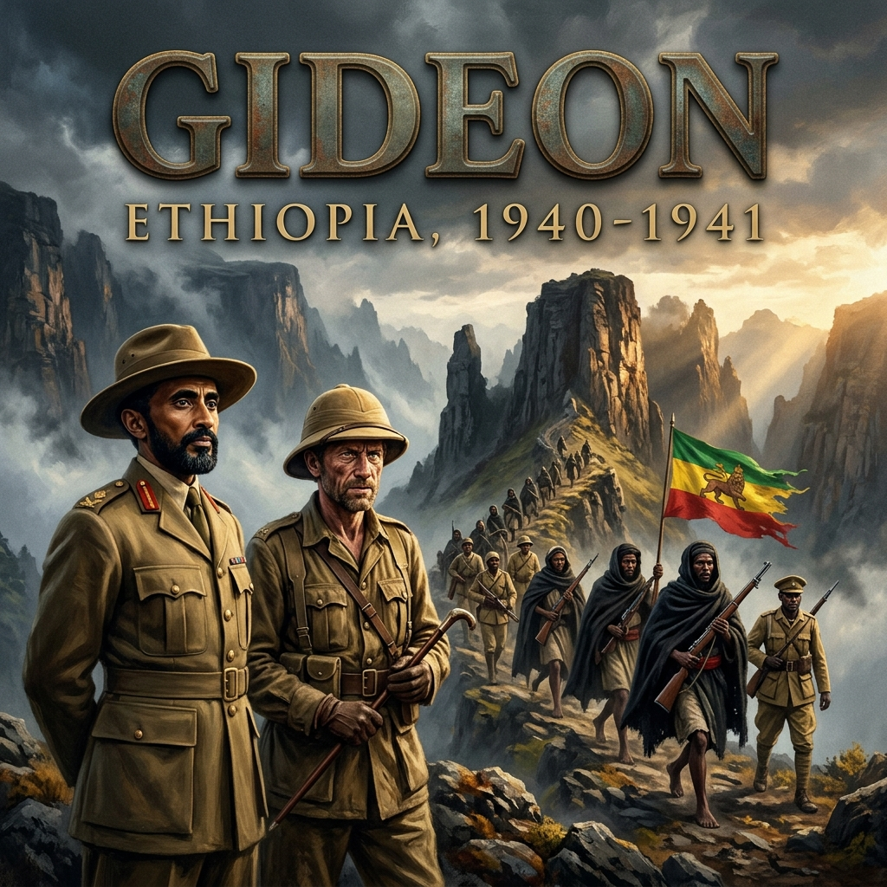

Khartoum, Anglo-Egyptian Sudan
July 3-8, 1940
The temperature inside the shuttered villa on the southern bank of the Blue Nile hovered at one hundred and twelve degrees Fahrenheit. Outside, the midday sun burned the silt flats of Khartoum to a blinding, chalky white. Two sentries of the Sudan Defence Force, dressed in khaki drill and green wool puttees, stood motionless beneath the corrugated iron eaves of the gatehouse, their rifles held at the port. They had orders from the Kaid—Lieutenant-General William Platt—that no unauthorized person, civilian or military, was to enter the compound, and that the diminutive gentleman residing inside was not to step past the gravel driveway under any circumstances.
In the official movement logs of British Middle East Command in Cairo, the passenger who had stepped off the Short Sunderland flying boat onto the river at dawn on July 3 did not exist. The manifests from RAF Hendon through Gibraltar, Malta, Alexandria, and Wadi Halfa recorded only the transit of a "Mr. E. Strong," a colonial civil servant traveling on priority imperial business.
Inside the drawing room, beneath a slowly circling three-bladed ceiling fan that did nothing more than displace the dead heat, Emperor Haile Selassie I sat upright in a high-backed cane chair. He was forty-seven years old, slight of bone, with an immaculate black beard trimmed close to the jawline and dark, hooded eyes that gave nothing away. He wore a dark, heavy European suit, refusing the concession of open-collared tropical linen. Across the low table sat Edwin Chapman-Andrews, a former British vice-consul in Addis Ababa, now commissioned as a major in the field intelligence branch and appointed as the political liaison officer to the exiled monarch.
On the table between them lay a silver tea service, coated in a fine patina of red dust carried in by the northern haboob, and an unsigned memorandum bearing the seal of the Sudan Political Service.
"General Platt's instructions are explicit, Your Majesty," Chapman-Andrews said. He spoke in French, the language the Emperor preferred for matters of diplomatic precision. "For the moment, absolute secrecy must be preserved. The Duke of Aosta has nearly three hundred thousand Italian and colonial troops under arms across the frontier in Eritrea and Abyssinia. In the whole of the Sudan, General Platt commands three British battalions and the Sudan Defence Force—barely four thousand five hundred men. If Rome learns that the Emperor of Ethiopia is in Khartoum preparing an insurrection, the Italian command will not hesitate to strike west across the border to crush us before the autumn rains cease."
The Emperor did not touch his glass of boiled water. He adjusted the gold signet ring on his finger, his gaze fixed on Chapman-Andrews with a calm that bordered on disdain.
"And so," Haile Selassie said, his voice quiet, carrying the dry, deliberate cadence of the Shoan court, "I am to remain dead."
"You are to remain Mr. Strong, Sire. For your personal safety, and for the defense of this condominium."
"Mr. Strong." The Emperor pronounced the English syllables slowly, letting them hang in the stale air of the room. "When Mussolini struck four years ago, your League of Nations offered my country resolutions and closed its ports to our munitions. When the Italian bombers sprayed yperite gas across the plains of Gorrahei and poisoned the waters of Lake Ashangi, I stood before your assemblies in Geneva and told you that what was happening to Ethiopia would happen to Europe tomorrow. Now Italy has entered the war against you. Tomorrow has arrived, Major. And yet you bring me into Africa by stealth, lock me in a Greek merchant's villa behind native guards, and give me the name of an English clerk."
Chapman-Andrews shifted in his chair. Sweat was soaking through the wool of his tunic, pooling cold against his ribs. He knew the truth of what the Emperor was saying; he had watched the withdrawal from Addis Ababa in 1936 himself. But he also knew the mind of Whitehall and the regular soldiers in Cairo.
"The British government recognized the King of Italy as Emperor of Ethiopia de jure in 1938, Sire," Chapman-Andrews said bluntly. "That treaty was torn up the moment Mussolini declared war three weeks ago. But the Foreign Office does not yet speak with one voice on what will follow an Allied victory. General Sir Archibald Wavell in Cairo must consider the whole Mediterranean theatre. The Governor-General here in Khartoum must consider the frontier. They view an armed native rising with profound caution. If we ignite a tribal war across your borders, they fear it cannot be contained."
"Tribal war?" Haile Selassie leaned forward, his knuckles resting lightly on the armrests of the cane chair. "My people are not tribesmen waiting for an English signal. They are the Arbegnoch. For five years, while your ambassadors dined with Marshal Badoglio and the Count of Turin, Dejazmach Mengesha Jembere and Ras Abebe Aregai have fought the Fascists in the mountains of Gojjam and Shoa with captured Italian rifles. They bleed every week in the gorges of the Blue Nile while your regular officers calculate the tonnage of coal at Port Sudan."
He pointed a finger toward the locked shutters facing east, toward the Abyssinian escarpment hundreds of miles away across the scrub.
"My people do not need to be ignited by General Platt," the Emperor continued. "They need cartridges. They need rifles. And above all, they need to know that their sovereign is not sitting in exile in Bath taking tea with churchmen, but is on the soil of Africa, preparing to cross the border at their head. How am I to summon the provincial chiefs to rebellion if I am forbidden from issuing a proclamation? If I am kept here as your prisoner under a false name?"
"You are not a prisoner, Your Majesty."
"Then let me walk into the suq of Khartoum," Haile Selassie countered instantly. "There are thousands of my countrymen in the refugee camps at Gedaref and Gallabat. Let me show myself to them. Let me recruit a battalion from the men who fled the massacres of 1937."
"General Platt will not permit it," Chapman-Andrews replied firmly. "Not yet. If the Italians bomb Khartoum, we have neither the anti-aircraft batteries nor the fighter squadrons to defend the city. General Wavell's directive is clear: until our regular deployments are reinforced from India and South Africa, no political act may take place that forces a general engagement along the Sudanese border."
"Then General Wavell does not understand the weapon he has been given," the Emperor said. The chill in his voice cut through the oppressive heat of the room. "The Italians hold the cities, the motor roads, and the forts. But they are garrisoned in fear. They cannot march ten kilometers off the asphalt without being cut to pieces. The moment my arrival is proclaimed across the radio from Khartoum, the colonial Ascari will begin to desert the Italian colors. The chiefs who made formal submission to the Viceroy will burn their Italian appointments. If you treat this campaign as an affair of regular battalions, you will lose the Sudan. If you treat it as the liberation of an empire, Mussolini will lose East Africa before the year is out."
Chapman-Andrews paused. He reached into his leather dispatch case, drew out an envelope stamped with the red wax of the Khartoum intelligence office, and placed it on the table between them.
"General Platt remains unconvinced of that, Sire," Chapman-Andrews said quietly. "He remains a soldier of the regular establishment. But there are others who do not share his caution. Colonel Sandford's preparatory mission has received final clearance from Cairo."
Haile Selassie's eyes shifted from the British officer to the envelope on the dust-filmed table. "Daniel Sandford is ready to march?"
"He has gathered his officers, his radio transmitters, and his pack train at Roseires on the frontier," Chapman-Andrews said. "It has been designated Mission 101. He crosses the Blue Nile into the Gojjam highlands as soon as the river permits. His orders are to make contact with Mengesha Jembere and the Patriot leaders in the mountains, distribute Maria Theresa thalers, and prepare the ground for what is to follow."
The Emperor leaned back, his expression unchanged, but his hand moved to the envelope.
"Sandford knows our people," Haile Selassie murmured. "He lived among us before the war. He knows that an Ethiopian prince does not take orders from a British major. But Sandford is only a messenger, Chapman-Andrews. He carries paper and silver. A rebellion cannot feed on paper."
"He carries the word that you have arrived in Africa, Sire. That is the one concession I was able to secure from Platt this morning. Sandford will tell the chiefs that the Emperor is on the Nile."
The Emperor looked down at the unsigned memorandum that identified him as an English civil servant. With a slow, deliberate movement of his hand, he pushed the sheet of paper off the edge of the table. It fluttered to the stone floor, face down in the dust.
"Tell Colonel Sandford this from me," the Emperor said, rising to his feet. Chapman-Andrews stood immediately, coming to attention. "Tell him that I will not wait in this heat while the British staff decides whether Ethiopia is an ally or an enemy territory to be administered by clerks. Tell him to find Mengesha Jembere. Tell him to find the chiefs of Gojjam. And tell him that Haile Selassie will not remain Mr. Strong for long."
Chapman-Andrews bowed. "I will send the cipher to the border post tonight, Your Majesty."
He collected his cap, saluted, and stepped out onto the blinding verandah. The heavy teak door closed behind him, leaving the Emperor standing alone in the dim, stifling silence beneath the slow turning of the fan.
At the bottom of the verandah steps, Chapman-Andrews climbed into his Ford staff car, the leather seats burning hot through his uniform. He tapped the Sudanese driver on the shoulder.
"To the signals depot," Chapman-Andrews said. "Route the traffic to Roseires. Colonel Sandford."
Roseires, Anglo-Egyptian Sudan
August 12, 1940
The rains of the late summer monsoon had turned the black cotton soil along the Blue Nile into a glue that sucked the boots off men and immobilized pack animals up to their hocks. At the frontier outpost of Roseires, four hundred miles southeast of Khartoum, the river was running eighty yards wide and swollen fifteen feet above its dry-season bed, churning with uprooted acacia trunks and dead cattle swept down from the Abyssinian foothills.
Tied beneath the dripping thatch of an open pole-barn stood fifty-four pack mules and sixty donkeys, their flanks shivering under coarse burlap horse-blankets. Nailed to the wooden pack-saddles were heavy deal boxes lined with sheet zinc. Inside the boxes, packed in greasepaper to prevent corrosion from the damp, were ten thousand silver Maria Theresa thalers—minted with the dead Austrian empress's likeness and the frozen date of 1780, the only currency recognized by the highland chiefs—alongside two Mark III portable wireless sets, spare dry-cell batteries, morphia ampoules, and three hundred bundles of printed imperial proclamations wrapped in oilcloth.
Colonel Daniel Arthur Sandford stood at the edge of the clearing, watching his muleteers adjust the rope cinches. He was fifty-eight years old, a retired artillery officer with a weathered face, calm blue eyes, and thin gray hair plastered to his forehead by the downpour. For nearly two decades before the Italian invasion, Sandford had lived as a gentleman farmer at Mulu, north of Addis Ababa, cultivating coffee, speaking fluent Amharic, and advising the imperial court on agricultural reform. When Mussolini's armies had driven Haile Selassie into exile in 1936, Sandford had been evacuated through Djibouti. He was now returning to a country officially declared an Italian colony, heading an operational party of five British officers, one warrant officer, and thirty Ethiopian soldiers and muleteers.
The operation was officially designated Mission 101. Its orders from Middle East Command were not to fight, but to survive: to march two hundred miles through Italian-patrolled lowlands, scale the six-thousand-foot wall of the Gojjam escarpment, establish a hidden wireless station in the mountains, and ascertain whether the fractured bands of the Arbegnoch could be forged into a cohesive irregular army.
Beside him, Captain Donald Drew, a lean, thirty-year-old regular gunner officer, wiped river silt from the breech of his .455 Webley revolver.
"The crossing will take five hours, Colonel," Drew said, nodding toward the swollen brown current of the Blue Nile where two native dugouts were being dragged upstream by their haulage ropes. "The river is rising by six inches an hour. If a mule panics and slips the towline, the box of thalers will anchor it to the riverbed."
"Then see that the towlines are doubled, Donald," Sandford said. His voice was level, almost domestic, showing none of the anxiety of a commander about to lead a microscopic detachment into enemy territory. "And make sure Warrant Officer Grey keeps the battery boxes in the center of the dugout. If the water gets to the acid jars, we will be two hundred miles behind the Italian lines without a voice."
A third man walked up through the rain, his bare feet sinking effortlessly into the mud. Azaj Kabada Tessema was an Ethiopian royalist official who had fled Addis Ababa after the fall of the capital, chosen personally by the Emperor to act as the political tongue of the mission. He wore a damp British woolen army pullover over his traditional white shamma, and carried a captured Italian Mannlicher-Carcano rifle slung across his shoulder by a strip of raw leather.
"The border scouts have returned from the dry riverbed at the frontier, Colonel," Kabada said in Amharic. "The Italian banda post at Geizan has not moved out today. The garrison remains inside their stone boma because of the storm. But they know someone is moving on the river. The local sheikh on the Sudanese bank has two cousins who take flour to the Italians. He says the Italian captain has offered five thousand lire for every white officer's head brought to the fort."
"The Italian captain will have to wade through two miles of swamp to collect them," Sandford replied in the same language, his pronunciation measured and archaic. "Has the word gone forward to the border chiefs?"
"The border chiefs do not trust us, Excellency," Kabada said bluntly. "They remember two years ago. They remember the British consul in Addis Ababa presenting his credentials to the Duke of Aosta. They saw your government shake hands with the Italian Viceroy. When I told the scouts from Matakal that the English were coming to bring ammunition, they laughed. They asked if the English were bringing rifles to fight the Italians, or if they were coming to buy more cattle for the Khartoum meat market."
Drew glanced from Sandford to the Ethiopian. "What is he saying, Daniel?"
"He is saying our credit is very low, Donald," Sandford said quietly in English. "He is reminding us that until six weeks ago, His Majesty's Government officially considered Abyssinia to be an integral part of the Italian Empire. The chiefs along the escarpment have spent four years being strafed by Caproni bombers while we enforced an arms embargo that kept weapons out of their hands. They do not care about the war in France. They do not care about the defense of Egypt. They want to know why they should bleed for an empire that abandoned them in Geneva."
Sandford reached inside his waterproof haversack and pulled out a thin, carbon-copied dispatch form—the cipher forwarded from Chapman-Andrews in Khartoum two days earlier.
"You show them this, Kabada," Sandford said, handing the paper to the Ethiopian. "You tell them that the Emperor Haile Selassie is no longer in England. Tell them he is in Khartoum. Tell them he is on the Nile, waiting for the path to be opened. Read them the imperial seal at the bottom."
Kabada took the paper into his calloused hands. His eyes moved across the typed Amharic characters: The Lion of Judah Hath Conquered. Let all the chiefs and people of Ethiopia know that their rightful King of Kings has returned to the continent of his fathers...
"The chiefs will not believe a piece of paper, Colonel," Kabada said, though his fingers tightened on the sheet. "An Italian airplane dropped ten thousand pieces of paper over Debra Markos last month, saying the English army had surrendered in London. Paper is cheap. If you want the Dejazmach Mengesha to open the mountain trails, he must see silver. And he must see cartridges."
"The cartridges are in the boxes behind you," Sandford said. "Sixty thousand rounds of Italian six-point-five millimeter. Taken from the captured depots at Tobruk and shipped down the Red Sea. They fit the rifles your men took off the dead Ascari."
Sandford turned to Drew. "Donald, get the first squad of mules down to the bank. Put the scouts across first to secure the eastern brush. If the Italians have an outpost at the ford, I want them engaged before the thaler boxes are in the water."
"Right, sir," Drew said. He stepped backward into the rain, unholstering his whistle. "Grey! Bring the first six animals down to the slipway! Mind the bank, it's collapsing into the current!"
The crossing was an agonizing, mechanical struggle against water and mud. For six hours, under a sky like lead, the men hauled the terrified mules into the torrent. Three men worked each animal: one at the halter rope leaning out from the stern of a dugout canoe, two in the water clinging to the animal's tail and mane to keep its nostrils clear of the swirling red drift. One mule, panicked by floating debris, broke its halter seventy yards from the bank; the two zinc-lined cases of silver coin strapped to its pack-frame pulled it under like a stone, the beast vanishing into the silt-choked depths without a sound.
By dusk, the remaining fifty-three mules and all sixty donkeys stood shivering on the eastern bank of the Blue Nile. They were now across the frontier, standing in the contested scrub of the lowlands—a flat, disease-ridden wilderness of ten-foot-high elephant grass and thorny bamboo that stretched sixty miles east toward the wall of the Gojjam highlands.
Warrant Officer Grey, drenched and caked in gray silt, assembled the aerial mast of the Mark III wireless in the shelter of a dense thicket of bamboo. He worked a hand-generator, the dynamo whining thin in the damp night air.
Sandford stood beside him, watching the faint blue spark in the radio's vacuum tubes. He held a small field notebook against his chest to keep the paper dry as he penciled the cipher back to the signals depot in Khartoum:
He handed the sheet to Grey. "Send that, Grey. Then strike the aerial immediately. We do not sleep within two miles of this river."
Sandford turned and looked east into the darkness. There was no horizon—only the black wall of rain where, sixty miles distant, the mountains of Gojjam rose straight out of the lowlands to ten thousand feet. Somewhere up on those cold, sodden ridges, hidden in deep volcanic caves, the guerrilla armies of Dejazmach Mengesha Jembere were waiting.
Sandford swung his wet rucksack onto his shoulders and clicked his flashlight on, shielding the lens with his fingers so that only a pencil-thin slit of yellow light touched the mud.
"Move out," he told Kabada. "Take the point. Keep off the caravan tracks."
Matakal and the Gojjam Highlands
September 18 - October 12, 1940
It took Mission 101 thirty-seven days to drag its pack train through the bamboo swamps and rising basalt shelves of the western escarpment. By the third week of September, the lowland heat had given way to the damp, bone-chilling mist of the Ethiopian highlands, eight thousand feet above sea level. Sixteen more mules had died along the razorback ridges—their lungs wrecked by pleuropneumonia, their backs stripped raw to the gristle by slipping saddles.
The mission had established a dispersed camp in the forested ravines near the Dabus River before climbing toward the mountain redoubts of Matakal. Here, in the limestone caves and eucalyptus groves that ringed the heights, the guerrilla army of Dejazmach Mengesha Jembere had survived five years of Italian punitive expeditions. The ground bore the deep craters of 100-kilogram aerial bombs dropped by Italian Savoia-Marchetti trimotors; among the children tending the scrawny zebu cattle in the scrub, several bore the distinctive, milky corneal scarring of yperite vapor from the mustard-gas canisters sprayed across the Gojjam valleys in the spring of 1936.
On the morning of October 8, beneath the dripping overhang of a cavern large enough to shelter two hundred head of cattle, Colonel Sandford and Captain Drew were brought before Mengesha Jembere.
The Dejazmach—a title translating roughly to "Commander of the Gate"—sat on a folded sheepskin atop an ammunition chest. He was a broad-shouldered man in his late forties with a square, bearded face, wrapped against the mountain draft in a heavy brown wool burnous. Behind him stood thirty Arbegnoch bodyguards, lean and ragged, armed with an assortment of obsolete French Gras rifles, captured Italian Mannlicher-Carcanos with taped split stocks, and long, curved gurade swords sheathed in red leather.
Before the formalities began, Azaj Kabada stepped forward, bowed low until his fingertips grazed the stone floor, and recited the Emperor's lineage. Then, at a gesture from Sandford, two Sudanese orderly soldiers hauled forward four wooden packing cases. With a crowbar, Drew levered the lids off. The cold cave air caught the dull sheen of silver: five thousand Maria Theresa thalers, packed in rows, alongside twelve galvanized zinc tins of 6.5-millimeter rifle cartridges.
Mengesha looked down at the open crates. He did not smile, nor did he reach out to touch the silver.
"For five years," Mengesha said, speaking low in the Gojjam dialect of Amharic, "the Italians have chased us across these rocks like baboons. They have burned our churches. They have hung our priests from the sycamores at Debra Markos. When we ran out of lead, my men melted the copper roof-gutters of the Italian road stations and poured them into empty cases with sulfur scraped from the tops of safety matches."
He raised his eyes, fixing Sandford with an unblinking stare.
"Now two English officers walk out of the lowlands with four boxes of cartridges and a bag of Austrian silver, and tell me the King of England wishes to help us."
"The King of England is at war with your enemy, Dejazmach," Sandford replied steadily in Amharic. "The Italian garrison at Addis Ababa is cut off from Rome. The Suez Canal is closed to their troopships. The Red Sea is patrolled by the Royal Navy. What was an imperial conquest is now an island surrounded by water."
"Then let your Royal Navy sail up the Blue Nile and blast the fort at Burye," Mengesha countered instantly, his voice rising, drawing quiet chuckles from his bodyguards. "We are in the mountains, Colonel. In the mountains, an Italian with a Breda machine gun and three thousand rounds behind a stone parapet is worth more than all the ships in the ocean. I have four thousand men who answer my war drum. Barely eight hundred have working rifles. Of those, how many cartridges do you think each man carries in his belt? Five. Six. Some have two."
Mengesha pointed his finger at the zinc tins Drew had placed on the dirt.
"That ammunition will last my men twenty minutes in an open fight against General Natale's colonial brigades. The silver cannot be eaten. The merchants in the valley will not sell us grain if the Italian airplanes bomb their villages the next morning. If I call my people out onto the roads to cut the telephone lines, the Italians will come with their trimotors and drop the burning dew on our crops. What does your King propose to do about the airplanes?"
Drew leaned toward Sandford, whispering out of the side of his mouth: "What is he saying, Daniel? He looks like he's about to shoot the mules and keep the silver."
"He is telling us the truth, Donald," Sandford replied in English without turning his head. "He is telling us that five years of being hunted from the air makes a man skeptical of promises from Cairo."
Sandford took a step closer to the sheepskin seat, looking directly into Mengesha's eyes.
"We have not brought an army from the Sudan, Dejazmach," Sandford said in Amharic. "You know the border as well as I do. The rains have made the valleys impassable for motorized transport. But we have brought something more important than five thousand soldiers."
Sandford reached inside his tunic and pulled out a leather dispatch case bound with green silk ribbon. He broke the seal and held out the thick parchment document inside, handwritten in Amharic script and stamped with the personal purple ink seal of Haile Selassie.
"The King of Kings is in Khartoum," Sandford said. His voice echoed off the damp limestone walls of the cave. "He is not in Europe. He has crossed the sea. He has given me his imperial word: he will march across the frontier with an army of our brothers who escaped into Sudan, and he will not return to the Nile until the Lion of Judah flies once more above the palace in Addis Ababa."
The cave went completely still. The bodyguards behind Mengesha shifted their weight; several crossed themselves in the Orthodox manner, touching forehead and breast with three fingers.
Mengesha took the parchment. He held it close to his face, squinting in the dim light of the cave mouth, tracing his thumb over the imperial seal. For a long moment, the only sound was the steady dripping of groundwater from the rock ceiling.
"The Emperor is in Khartoum?" Mengesha whispered.
"He is waiting for the trail to be secured," Sandford said. "He cannot march an army through the lowlands if the provincial chiefs are fighting among themselves. If you want modern artillery, Dejazmach, if you want air support to drive Natale out of Burye and Maraventano out of Debra Markos, you must unite the Gojjam. You must make peace with Dejazmach Nagash Bezabeh."
At the mention of Nagash, Mengesha's face hardened. Nagash Bezabeh was his fierce feudal rival, the grandson of King Tekle Haymanot of Gojjam. For years, the two men had waged separate, uncoordinated guerrilla campaigns against the Italians, each eyeing the other with as much jealousy as they did the Fascist occupiers.
"Nagash sits on his mountain and counts his cows," Mengesha spat. "He calls himself the master of southern Gojjam, but he does not strike the convoys. If I bring my men down to the road, his men will raid my villages from the rear."
"He will not," Sandford said firmly. "Because Azaj Kabada is riding to his camp tomorrow with the same proclamation. The Emperor does not offer titles to men who make war on their brothers. He offers commands in the liberation army. If you hold the northern approaches to Burye, and Nagash cuts the road to Dembecha, Natale will be trapped between you. But you must swear peace on the Cross."
Mengesha sat in silence for several minutes, staring at the open boxes of silver and ammunition. Then he looked up at Sandford.
"I will swear peace on the Cross when I see Nagash sign the Emperor's paper," Mengesha said. "And I will hold the mountain tracks. But do not tell me to throw my men against the Italian trenches with five cartridges in their pouches. If the Emperor wishes to enter Gojjam, he must not bring promises. He must bring a regular force that can break concrete. He must bring an officer who knows how to fight this war, and he must bring guns that can answer the Italian artillery."
He stood up, handing the parchment back to Sandford with formal, punctilious courtesy.
"You may pitch your tents in the valley below, Colonel. My men will bring you teff and mutton. But send your radio machine to work. Tell the English generals in Cairo that if they send us words, the Italians will stay in Addis Ababa forever. Tell them to send the guns, send the Emperor, and send a man who knows how to use them."
Late that night, high on a wind-scoured basalt ridge above the cloud layer, Warrant Officer Grey cranked the generator of the Mark III set. The blue arc leaped inside the radio housing.
Sandford stood beside him with his pencil and notepad, shielding the paper from the icy mist with his waterproof coat. He looked down at the cipher he had composed for General Wavell in Cairo and General Platt in Khartoum.
He paused, then added the final, decisive sentences:
"Send it, Grey," Sandford said, his breath steaming in the thin air. "Priority cipher to Cairo. Action: Commander-in-Chief, Middle East."
General Headquarters, Middle East Command
Grey Pillars, Garden City, Cairo
October 26-28, 1940
The headquarters of British Middle East Command occupied a requisitioned block of flats in the shaded, affluent quarter of Garden City, wrapped in sandbags and barbed wire against the possibility of Italian air raids from Libya. Inside the cool, marble-tiled corridors of "Grey Pillars," typewriters clattered behind closed doors as hundreds of staff officers in immaculate starched drill and polished Sam Browne belts plotted the defense of Egypt.
To the west, across the Libyan desert, Marshal Graziani's Tenth Army had ground to a halt at Sidi Barrani after invading western Egypt six weeks earlier. General Sir Archibald Wavell was secretly preparing a counterstroke—Operation Compass—with every tank and 25-pounder gun he could muster. To the south, in Italian East Africa, three hundred thousand Italian and colonial troops under Prince Amedeo, Duke of Aosta, remained an intact, looming threat against the Sudan, Kenya, and the Red Sea shipping lanes through which British convoys from India and Australia had to pass.
Wavell sat behind a broad mahogany desk on the second floor. He was fifty-seven, thickset, with a weathered, impassive face and a blind left eye lost at Ypres in 1915. Across the blotter lay the signal that had arrived thirty-six hours earlier from the high ridges of Matakal—the cipher signed by Daniel Sandford demanding a striking spearhead and an irregular commander of exceptional drive.
Beside Wavell stood his Chief of Staff, Lieutenant-General Arthur Smith, holding a red-jacketed personnel file bearing the seal of the War Office.
"You are making an appalling mistake, Archie," Smith said quietly. "Wingate was posted home from Palestine eighteen months ago because the High Commissioner and the military command could no longer tolerate him. His personnel dossier is explicitly endorsed: Not to be employed in the Middle East."
"I am aware of what his file says, Arthur," Wavell said. His voice was flat, low, and devoid of inflection. "I read it when Barker sent him away. He is insubordinate, arrogant, and socially intolerable. But he created the Special Night Squads in thirty days, and he stopped the sabotaging of the Iraq Petroleum pipeline when two divisions of regular infantry could not."
"He is fanatical," Smith insisted. "He became completely identified with the Jewish Agency. He told his superiors to their faces that they were anti-Semitic appeasers. If you unleash a man like that in Abyssinia, he will make common cause with the natives, ignore General Platt's directives, and plunge us into political commitments His Majesty's Government has no intention of honoring."
Wavell glanced down at Sandford's cipher. "The native chiefs in Gojjam have five cartridges apiece, Arthur. They do not want another diplomat with a fountain pen. They want a man who knows how to make soldiers kill in the dark. Bring him in."
Smith stiffened, turned on his heel, and opened the door to the anteroom.
Major Orde Charles Wingate walked in. He was thirty-seven years old, of medium height, with round shoulders and an intense, predatory posture. His pale, deeply set blue eyes were fixed straight ahead with a manic, unblinking intensity. His uniform was noticeably rumpled; the brass buttons of his Royal Artillery tunic were unpolished, and a frayed, thumb-indexed pocket copy of the Old Testament protruded from his left breast pocket. He held a grease-stained pith helmet under one arm. In his right hand, completely indifferent to the staff etiquette of Grey Pillars, he carried a half-eaten raw brown onion.
He did not salute General Smith. He stopped four paces from Wavell's desk and came to a rigid, slightly vibrating halt.
"Sir," Wingate said. His voice was a harsh, rasping baritone that sounded as if it had been scraped over gravel.
Wavell studied him for a long moment with his single good eye. "You made good time from London, Orde."
"I took the flying boat through Lisbon and Malta, sir," Wingate said. "Your movement order was unambiguous. Your staff officers at Alexandria attempted to detain me at the customs wharf for six hours to verify my travel warrant. I told the provost marshal that if he did not release my kit within ten minutes, I would see him broken to the ranks before sunset."
Smith winced. Wavell's face did not move. He picked up Sandford's cipher and slid it across the desk.
"Read that."
Wingate set his onion down on the corner of the polished mahogany, took the cipher in his dirt-caked fingers, and read it in three seconds. His eyes darted down the printed lines of uppercase letters, then flicked back to the Commander-in-Chief.
"Sandford is an honest soldier," Wingate said. "He understands the country. But he is a gunner of the old school, and he is thinking like a colonial administrator. He wants to supply a rebellion. You cannot supply a rebellion, General. You can only embody it."
"The Italians have five divisions in the northern sector alone, Orde," Wavell said. "Natale is at Burye with seven thousand men. Maraventano has twelve thousand at Debra Markos. Nasi has an army corps at Gondar. I cannot give you a division. I cannot give you a brigade. I have thirty-six infantry tanks in the whole of Egypt, and every single one is committed to Compass. In the Sudan, Platt has barely enough rifles to prevent the Italians from seizing the rail junction at Atbara. If you go into Gojjam, you will have what Sandford has already gathered, whatever levies can be raised from the refugee camps, and perhaps two battalions of Sudanese and Ethiopian exiles."
Wingate took a step forward, his voice rising in volume and cadence until it rang off the marble baseboards.
"Numbers are an illusion of the conventional staff officer, General! Clausewitz taught that the defensive is the stronger form of war only when the defender possesses interior lines and moral cohesion. The Italian in Abyssinia possesses neither. He sits inside concrete redoubts on the tops of mountains because he is terrified of the dark. He is three thousand miles from Rome. His shipping is cut off. His native Ascari have seen their white officers sweat with fear since Mussolini declared war."
Wingate picked up his Bible, tapped the leather cover against his knuckles, and leaned over Wavell's desk.
"Give me two thousand men who are properly led, and I will destroy the Italian empire in the north. Not by fighting pitched battles against their field artillery, but by operating exclusively at night. We will sever their telephone wires. We will ambush their water convoys. We will make them believe every hill holds a division. When an army of occupation ceases to believe in its own invulnerability, it ceases to exist. It rots from the brain outward."
General Smith stepped forward, his face flushed. "You are speaking to the Commander-in-Chief, Major Wingate. You will moderate your tone. Furthermore, you will remember that British policy regarding the future administration of Ethiopia remains under the jurisdiction of the Foreign Office and the War Cabinet. We are not launching a crusade. We are conducting an economy-of-force diversion to protect the flank of Egypt."
Wingate turned his intense, glacial stare upon the Chief of Staff.
"A diversion, General? You cannot ask men to climb six thousand feet of volcanic rock on five cartridges a day for a diversion. If you want the Ethiopian to fight, you must give him back his King. You must offer him justice. God does not grant victory to cynics who fight half-wars with false names."
Wingate looked back at Wavell.
"Platt has the Emperor locked in a villa in Khartoum under the name of 'Mr. Strong.' It is an insult to the dignity of a sovereign nation and a gross strategic blunder. If I am to command this force, the Emperor must march with me. His presence must be our operational center of gravity. His standard is worth two divisions of motorized infantry."
Wavell remained silent for nearly thirty seconds. He knew the risks. He knew that Platt, Smith, and the civil authorities in Khartoum would despise Wingate's methods and detest his politics. But he also knew that Graziani was massing on the Egyptian border, and that every Italian battalion pinned down in the mountains of Gojjam was an Italian battalion that could not march on Khartoum or threaten Port Sudan.
"You will proceed to Khartoum by the evening train to Shellal, then by river steamer to Wadi Halfa," Wavell said quietly. "Your appointment is Brevet Major with the local rank of Lieutenant-Colonel. You will report to General Platt. Your title is Commander of British Military Mission 101 and the irregular operations in Gojjam."
Wavell picked up a pen, dipped it in ink, and initialed the operational directive on his blotter.
"You will meet the Emperor, Orde. You will assess his forces. You will take Sandford under your command, coordinate with Boustead's Sudan Frontier Battalion, and formulate an operational plan to penetrate the Gojjam highlands before the dry season begins in January. Your mission is to raise the country, drive Natale and Maraventano across the Blue Nile, and open the road to the capital."
Wavell looked directly into Wingate's unblinking eyes.
"Do not look to Cairo for reinforcements. You will have what is on the frontier, and not a rifle more. If you succeed, you will have saved the Sudan. If you fail, the desert will swallow you, and the War Office will remind me that I was warned."
Wingate did not smile. He picked up his raw onion from the desk, slid his Bible back into his pocket, and snapped to attention with a sharp, violent stamp of his boots.
"The Lord of Hosts will provide the battalions, General," Wingate said.
He pivoted on his heel and strode out of the office, his heavy boots echoing down the marble corridor of Grey Pillars.
General Smith stared at the closed door, shaking his head. "The man is completely mad, Archie. He will either be court-martialed within ninety days or he will get himself murdered by his own irregulars."
"Perhaps," Wavell said softly, pulling a fresh operational map of the Western Desert across his blotter. "But he has a fire in his belly, Arthur. And out in that scrub, fire is the only thing that burns."
Two hours later, under the yellow sodium floodlights of Heliopolis airfield, an RAF Lockheed Hudson transport aircraft coughed into life, twin radial engines churning up clouds of Nile dust. Wingate sat inside the unheated aluminum fuselage, his back against an ammunition case, a battered map of Gojjam pinned across his knees by his thumbs as the aircraft turned south into the African night, following the silver thread of the Nile toward Khartoum.
The Grand Hotel and the Palace Gardens, Khartoum
November 6, 1940
The winter dry season had begun to settle over the confluence of the two Niles. The blinding dust of the haboob had thinned, leaving the river flats baking under a pale, vitreous sky. At the Grand Hotel—an imposing colonial edifice of whitewashed brick, wide colonnades, and deep shaded verandas fronting the Blue Nile—the officers of the Sudan Defence Force and the British military mission gathered for evening drinks in starched mess kit, their conversations muffled by the rhythmic thrum of the ceiling fans.
At the far end of the terrace garden, screened from the dining room by a dense hedge of bougainvillea, a private salon had been requisitioned by order of the Military Governor.
Colonel Daniel Sandford sat near the open French doors. He had returned from the Gojjam highlands only three days prior, flown out of an improvised dirt landing strip near Dangila in a fabric-winged RAF Vickers Wellesley. His skin was burnt dark by the mountain sun, his hands calloused and scarred from the rock climbs of Matakal, his bush tunic faded to a pale mustard.
Beside him sat Edwin Chapman-Andrews, notebook in hand, and Lieutenant-General William Platt, Kaid of the Sudan Defence Force. Platt was a career cavalryman, precise, fastidious, and openly skeptical of irregular warfare. Across the center table sat Emperor Haile Selassie, accompanied by his eldest son, Crown Prince Asfaw Wossen. The Emperor wore the plain field-service uniform of an Ethiopian field marshal, unadorned except for the small gold Star of Solomon at his collar.
The salon door swung open without a knock.
Orde Wingate entered the room. He had arrived in Khartoum forty-eight hours earlier on the morning transport from Cairo. His appearance was an explicit violation of the Kaid's garrison dress regulations: he wore an unpressed drill bush shirt missing a button at the throat, dusty corduroy trousers, and heavy scuffed desert boots. He did not look at General Platt, nor did he nod to Sandford.
Wingate walked directly to the Emperor's chair, halted two paces away, clicked his heels together, and bowed from the waist with slow, formal gravity—a bow far lower and more deliberate than any British officer had offered Haile Selassie since his arrival on the Nile.
"Your Imperial Majesty," Wingate said in his harsh, gravelly baritone. "I am Major Orde Wingate. I have been sent by General Wavell to place myself at your service. I have come to fight for the freedom of your people, and by the help of God, to return you to your throne in Addis Ababa."
Haile Selassie did not blink. For five months, the Emperor had endured the cold administrative condescension of the Sudan Political Service, the humiliating alias of "Mr. Strong," and Platt's endless cautions against provoking the Italians. He studied the disheveled Englishman before him—the piercing, fanatical blue eyes, the round shoulders, the raw physical energy radiating off the man like heat from a stove.
"You speak with a different tongue than the gentlemen from the Secretariat, Colonel Wingate," the Emperor said in French, his voice soft, almost melodic. "They speak of border security and international law. You speak of God and my throne."
General Platt cleared his throat loudly, leaning forward across the table.
"Wingate holds the local rank of Lieutenant-Colonel, Your Majesty, but his mission remains subordinate to the strategic requirements of the Sudan command. Let us be entirely clear on that point." Platt turned his cold, grey eyes upon Wingate. "I have read your preliminary appreciation, Wingate. It is romantic, highly unorthodox, and completely out of touch with our supply situation. You propose to march a force into Gojjam with five thousand camels before the road network is established. The Duke of Aosta has forty battalions in the northern sector alone. If you take the Emperor into the highlands and are cut off, we do not have the transport, the aircraft, or the reserves to extract you."
Wingate did not turn around to face Platt. He remained standing before the Emperor, his chin thrust forward, his jaw tight.
"We will not require extraction, General Platt," Wingate said, raising his voice so that it echoed sharply off the high plaster ceiling. "Because we will not retreat. An army that contemplates extraction is an army that has already lost its moral ascendancy. The Italian is trapped in his own fortresses. He is terrified of the dark. He is terrified of the Ethiopian knife. He has twenty thousand men in Gojjam who are paralyzed because they do not know where we are, who we are, or when we will strike."
Sandford leaned forward, his quiet, measured voice cutting across Wingate's rising cadence.
"Orde, listen to me," Sandford said calmly in English. "I have spent the last three months living in the caves of Matakal. I know Mengesha Jembere. I know Nagash Bezabeh. They are proud, suspicious, and fiercely independent feudal lords. If you march in there with the swagger of a British conqueror, demanding that they obey your tactical orders, they will vanish into the bush and leave you to be surrounded by Natale's motorized columns. The rebellion cannot be commanded like a brigade of the line. It must be coaxed, guided, and supplied."
Wingate spun on his heel to face Sandford. His eyes widened, his fingers twitching against the seam of his trousers.
"Coaxed, Daniel? Guided?" Wingate took two rapid steps toward the table, slapping his open palm down upon Sandford's hand-drawn map of the Gojjam ridges. "While you coax and guide, the Italians build concrete redoubts! While you distribute Maria Theresa silver like an old woman at a parish bazaar, Natale's colonial banda burn the harvest and hang the priests! A guerrilla war that relies on defensive ambushes and subsidies is nothing more than legal banditry. It achieves nothing! It changes no frontiers!"
Wingate leaned over the map, his face inches from Sandford's.
"We must have a spearhead, Daniel! A regular force. A disciplined, small, mobile force of Sudanese and Ethiopian troops who can strike like Gideon's three hundred in the night. We do not wait for the chiefs to make up their minds. We strike the Italian forts. We blow up their magazines. We take their artillery and turn it on their headquarters. When the chiefs see the Italian garrisons burning, they will not need to be coaxed. They will swarm down from the hills like locusts to join the kill!"
"And who commands this spearhead, Colonel Wingate?"
The question came from Haile Selassie. It was quiet, delivered without edge, but it cut through the room like an iron wedge.
Wingate stood upright, turning back to the monarch. "I do, Your Majesty. Under your supreme authority. I will command the operational striking force in the field. Colonel Sandford's knowledge of the country and its language is invaluable; he must serve as Your Majesty's chief political and military advisor, coordinating the provincial chiefs. But the tactical direction of the battalions—the fighting on the ground—must be in the hands of a single commander who understands the principles of irregular penetration."
Platt frowned, glancing at Sandford. "Sandford is the senior officer, Wingate. Mission 101 was his creation."
"Sandford is an administrator and a diplomat, sir!" Wingate snapped, turning on Platt with open contempt. "He is an admirable man for a council of state. But war is not a council of state! War is violence, deception, and the relentless application of moral force! If you divide tactical command between committees and provincial lords, you will be destroyed in your first engagement!"
Sandford looked down at his scarred hands. He had known Wingate's reputation; he knew the man was abrasive, impossible to manage, and utterly devoid of professional courtesy. But Sandford was also an experienced soldier who had seen the desperate, outgunned reality of Mengesha's fighters in the caves. He knew that the Arbegnoch, for all their courage, could not coordinate a modern operational offensive on their own.
"The operational command should be Wingate's, General," Sandford said quietly, looking up at Platt.
Platt stared at him in disbelief. "Daniel, you have spent three months risking your life behind their lines while Wingate was sitting in an office in London."
"It does not matter who was in London, General," Sandford replied, his voice firm and devoid of vanity. "Wingate is right about the spearhead. Mengesha told me to my face: the Patriots will not throw themselves against Italian machine guns with five cartridges in their pouches unless they see regular troops leading the assault. If Wingate can lead those troops, I will manage the chiefs. The Emperor's restoration is the only objective that matters."
Haile Selassie leaned back in his cane chair. He looked at Sandford with deep, silent gratitude, then turned his gaze upon Wingate.
"You have a great deal of confidence, Colonel Wingate," the Emperor said. "My country has seen many Europeans arrive with great confidence. The Italians had great confidence when they brought their poison gas to Dessie."
"The Italians serve an earthly tyrant, Your Majesty," Wingate replied, his voice dropping into a solemn, almost liturgical register. "We serve the God of Justice. I have read the scriptures. I have studied the terrain. The hand of God has placed your empire in the balance, and if we do not fail Him, He will not fail us."
The Emperor stood up. Every man in the room, including General Platt, rose to his feet.
"Then we will march together, Colonel Wingate," Haile Selassie said. "General Platt will provide the battalions from the camps at Soba. Colonel Sandford will prepare the chiefs of Gojjam. But understand this clearly: I will not enter my country as a passenger in a British baggage train. When the force crosses the border, I march at the head of my people."
"Your Majesty will enter Addis Ababa on a white horse," Wingate said with absolute certainty.
"I will enter my capital when God wills it, Colonel," the Emperor said, extending his hand. "Now show me your route."
Wingate did not reach for his papers. Instead, he pulled back his hand and shook his head.
"I cannot show Your Majesty the route, because the maps drawn in Khartoum are works of fiction," Wingate said bluntly. "The contours on this paper were sketched by Italian surveyors from the cabins of Caproni bombers. They show roads where there are only goat tracks, and flat savannah where there are impassable volcanic chasms."
Wingate turned to Sandford.
"Daniel, you have flown over the escarpment. But you have not walked the southern approaches from Roseires to Mount Belaya on foot."
"No," Sandford admitted. "We moved north through the Matakal trails. The Belaya route is unexplored. The local Arabs say it is waterless scrub, infested with tsetse fly, ending in a sheer wall of rock."
"Then that is the route we will take," Wingate said, his eyes gleaming with sudden, manic resolve. "Because if the Arabs say it is impassable, General Natale will believe it is impassable. And that is where we will bring the Emperor into Gojjam."
Wingate pulled his grease-stained pith helmet from under his arm and jammed it onto his head.
"I leave for the frontier tomorrow at dawn," Wingate said to Platt, without waiting for the Kaid's dismissal. "I will take five men, ten mules, and twenty camels. I will walk the route to Mount Belaya myself, locate the waterholes, and climb the rock wall. When I return, we will assemble the battalions."
He snapped another violent, vibrating salute to the Emperor, turned on his heel, and strode out through the French doors into the heavy, cooling dusk of the hotel gardens, leaving the room in stunned, absolute silence.
Sakala, Gojjam Province, and Roseires, Sudan
November 20 - December 4, 1940
At dawn on November 20, a single fabric-covered RAF Vickers Wellesley of No. 47 Squadron bounced across the rutted dirt strip at Roseires, climbed steeply through the thermal haze of the Blue Nile basin, and turned east into Italian airspace.
Inside the narrow, unheated cockpit behind the pilot sat Orde Wingate, a sheepskin coat pulled over his faded drill tunic, a folded ordnance survey map clamped between his knees. Wedged beside him was Makonnen Desta, an American-educated Ethiopian royalist who had spent four years in exile and now served as Haile Selassie's political secretary. Below the starboard wing, the brown savannah of the border lowlands rolled past, giving way without warning to the colossal volcanic wall of the Gojjam escarpment—thousands of feet of gray and black basalt, gashed by labyrinthine ravines and draped in heavy morning cloud.
Ninety minutes into the flight, the pilot cut the throttle, banking into a narrow, high-altitude valley near Sakala, close to the sacred source of the Little Abbai. On a sloping, grass-covered meadow cleared by Arbegnoch axes between two eucalyptus groves, a row of smoky smudge-pots burned. The Wellesley's tires touched down hard on the hummocky turf, skidding sixty yards through the wet wild clover before halting near a cluster of hidden thatched huts.
Daniel Sandford was waiting by the trees, his heavy shepherd's stick in hand, flanked by an escort of fifty barefoot Patriots armed with rifles wrapped in greasy leather strips.
Wingate climbed over the fuselage coaming, dropped six feet to the grass, and ignored Sandford's outstretched hand. He pulled off his leather flight helmet, his eyes darting across the valley, inspecting the mountain walls, the treeline, and the ragged fighters staring at the British machine.
"You are within twenty miles of the Italian garrison at Dangila, Daniel," Wingate said without greeting. "Their Capronis could be over this meadow in ten minutes."
"The Italian garrison at Dangila does not leave its perimeter wire before ten in the morning, Orde," Sandford replied evenly. "And the clouds stay on the ridges until noon. Welcome to the interior."
They walked under the dripping eucalyptus toward a low stone stone-and-thatch tukul where Sandford had established his field headquarters. Warrant Officer Grey sat in the shadows beside a canvas-draped wireless battery, drinking tea from a tin mug.
Wingate spread his map across an empty ammunition crate. He stabbed his thumb into a marked point forty miles to the west, isolated in the lower terrace of the escarpment: Mount Belaya.
"Your signal to Cairo recommended Belaya as the advanced base," Wingate said, his voice clipped and urgent. "Critchley made the preliminary reconnaissance from the plain. I want your operational appreciation."
"It is an amba," Sandford said, leaning over the paper. "A sheer, flat-topped table-mountain of volcanic basalt, rising seven thousand feet above sea level. It sits thirty miles west of the main escarpment wall, like an island in the foot-hills. The local Nilotic tribes—the Gumuz and the Shinasha—know the tracks, but the Italians have never occupied it. There are perennial springs on the upper plateau, natural grazing for cattle, and enough level ground to clear an emergency strip for light aircraft."
"And the approaches?" Wingate demanded. "How do we get fifteen hundred regular troops and two thousand transport animals up the rock?"
Sandford shook his head. "From the west, from Roseires across the Sudanese border, the scrub is flat for seventy miles, but it is waterless and infested with the tsetse fly. Once you hit the base of Belaya, the camel tracks end. There is only a single cleft in the basalt cliff—the Kigol pass. It is a goat track over loose scree. A mule can negotiate it if led by the headstall. A camel cannot."
"Then the camels will carry the stores across the waterless lowlands to the foot of the mountain," Wingate snapped. "And we will transfer the ammunition to mules for the ascent."
"Where do you propose to find the mules, Orde?" Sandford asked. "I have combed Gojjam from Lake Tana to Dembecha. The Italians have requisitioned every beast of burden they could lay their hands on to supply their road camps. I told Khartoum I could attempt to raise three thousand mules from the chiefs, but that was an estimate based on hope, not inventory. Mengesha's men will not sell their pack animals for silver if it leaves their own families unable to carry grain into the ravines."
Wingate's eyes flared with sudden anger. "Then we will take the camels up the rock."
"A lowland camel cannot climb wet basalt, Orde!" Sandford said, his voice rising, shedding its usual administrative restraint. "Their hooves are soft pads designed for dry sand and clay. The wet volcanic rock will split them like wet cardboard. If you drive baggage camels up the Kigol cleft, you will break their legs and choke the gorge with their carcasses!"
"Then we will carry the mortar baseplates on our own backs!" Wingate retorted, slamming his fist onto the crate so hard that the tin mug rattled. "Listen to me, Daniel! Wavell has launched the preparations for the Western Desert offensive. Within thirty days, the desert army strikes Graziani at Sidi Barrani. Middle East Command will not wait three months while you negotiate with highland horse-traders for pack mules. The Emperor enters Gojjam in January, or he does not enter at all!"
Wingate straightened, breathing hard, his jaw locked. He looked past Sandford, out through the door of the tukul toward the green, mist-shrouded pastures of Sakala. A group of young Arbegnoch fighters sat under a cedar tree, cleaning their rifle bolts with oiled rags.
"How many men can Mengesha put on the Burye road right now?" Wingate asked.
"Two thousand," Sandford said quietly. "Perhaps three thousand if the Emperor crosses the frontier. But they have no discipline for a prolonged siege. If they take a post, they sack it and disperse to their farms with the loot. If they encounter artillery fire, they scatter into the ravines. You cannot use them as line infantry."
"I have no intention of using them as line infantry," Wingate said. "They will cut telephone lines. They will ambush foraging parties. They will make the roads impassable for Italian lorries. But the assault—the storming of the redoubts, the mortar barrages, the night fighting—that belongs to the regulars. I am bringing two battalions across the river: the Second Ethiopians and the Sudan Frontier Battalion. We will make Belaya our citadel. From Belaya, we will strike Natale at Burye before he realizes we have left the border."
For forty-eight hours, Wingate stayed on the ridge at Sakala, sleeping three hours a night on a blanket laid over eucalyptus leaves. He interrogated Sandford on every waterhole, every Italian telephone link between Debra Markos and Gondar, and the exact locations of the Italian native forts. He interviewed Patriot scouts, cross-examining them through Makonnen Desta with an unrelenting, ferocious precision that left the highland warriors baffled and exhausted.
On the morning of November 22, the Wellesley's radial engine roared to life again on the Sakala meadow. Wingate shook Sandford's hand with brief, hard formality.
"Collect whatever mules you can find, Daniel," Wingate shouted over the roar of the Bristol Pegasus engine. "Send them down to the foot of Belaya. But do not count on them. I am going back to Khartoum to requisition every baggage camel in the eastern provinces. We march in January."
The Wellesley lifted into the mountain air, clearing the top of the southern eucalyptus trees by twenty feet, banking steeply west toward the frontier.
Three days later, Wingate was at the staging depot at Roseires on the Sudanese bank of the Blue Nile. The late autumn heat was oppressive, heavy with the dust of the dry season. Accompanied by a Sudanese transport officer, Wingate walked the perimeter of the camel lines where the first draft of three hundred pack camels, bought from the Hadendoa and Shukriya tribes, were being hobbled.
The beasts were mangy, bad-tempered, and covered in gray tick-crusts. Beside the corrals lay heaps of mass-produced pack saddles made of unseasoned pine, shipped up from the ordnance stores in Atbara.
Wingate stopped before a kneeling bull camel. He grabbed the wooden frame of the pack saddle, wrenched it upward, and inspected the padding beneath. The felt was thin, coarse, and stuffed with dry straw that crushed to powder under the pressure of his fingers.
"Who inspected these saddles?" Wingate demanded, turning on the Sudanese captain. His voice was cold, vibrating with fury.
"They were manufactured by contractors in Omdurman, Colonel," the captain said, stiffening. "Standard pattern for the Sudan Defence Force transport companies."
"Standard pattern for parade grounds outside Khartoum!" Wingate shouted, throwing the wooden tree to the ground where it cracked against the hard earth. "This straw will rot within forty-eight hours of sweat! The bare wood will gouge into the animal's spine! A camel carrying three hundred pounds of three-inch mortar ammunition with a saddle like this will have its back stripped to the vertebrae before it reaches the Dinder River!"
The officer looked at the ground, silent.
Wingate stood in the boiling sun, his chest heaving, staring at the long lines of grunting, recalcitrant animals. He knew the numbers. Between the Blue Nile and the foot of Mount Belaya lay seventy miles of waterless scrub, where water holes were separated by thirty-mile intervals of thornbush. Between Belaya and the high plateau lay thousands of feet of sheer volcanic rock.
The British regular staff in Khartoum had provided him with an army of refugees, a single battalion of Sudanese regulars, and three thousand pack animals condemned by the incompetence of contractor timber to die on the trail.
Wingate turned on his heel and strode toward the post telegraph tent. He pulled a message pad from his haversack, uncapped his fountain pen, and drafted his final operational memorandum for General Wavell in Cairo:
He added the final, decisive line:
He shoved the pad into the hands of the telegraphist.
"Transmit that to Grey Pillars, Cairo. Priority cipher."
Wingate stepped out of the tent into the blinding noon glare, climbed into his open Ford utility truck, and pointed the driver north toward Khartoum and the muster camp at Soba.
Soba Training Camp, Anglo-Egyptian Sudan
December 6-22, 1940
Six miles south of Khartoum, on a flat pan of baked alluvial clay between the railway line and the Blue Nile, lay the cantonment of Soba. In December, the dry north wind blew fine, alkaline dust through the gaps in the mud-brick barracks and billowed the fly-sheets of hundreds of canvas ridge tents.
Here, British Middle East Command had concentrated the regular spearhead of what was now formally designated Gideon Force.
The force consisted of two distinct infantry formations. The first was the 4th Sudan Frontier Battalion, an elite unit of the Sudan Defence Force commanded by Lieutenant-Colonel Hugh Boustead. The battalion numbered roughly eight hundred men organized into four rifle companies, recruited primarily from Sudanese and border tribesmen, with British company commanders and Sudanese subalterns (mulazimin). They were disciplined, experienced desert soldiers, armed with standard Lee-Enfield .303 rifles and Lewis guns, trained in conventional infantry maneuvers.
The second formation was the 2nd Ethiopian Battalion, numbering approximately six hundred men. These were not seasoned regulars, but an assembly of exiles, refugees, and deserters who had fled Italian East Africa over the preceding four years to camps in Kenya and the Sudan. Many carried the physical marks of the 1937 Graziani reprisals in Addis Ababa—bayonet scars, amputated ears, flogging welts. They had received rudimentary training in Khartoum under British and Kenyan officers, but lacked technical cohesion and had never operated as a unified battalion in the field.
Behind an improvised brushwood fence at the edge of the cantonment sat a whitewashed mud harim building that Wingate had commandeered as his operational headquarters.
On the afternoon of December 14, Lieutenant-Colonel Hugh Boustead walked up the brick path to the headquarters. Boustead was forty-five years old, a former Royal Navy midshipman who had deserted to join the Gordon Highlanders on the Western Front in 1915, won the Military Cross, served with the White armies in the Russian Civil War, and climbed Mount Everest with the 1933 British expedition. He was impeccably turned out in a pressed bush jacket, polished leather gaiters, and the green-and-red hackle of the Sudan Defence Force, his mustache trimmed to razor precision.
Boustead pushed aside the grass-mat curtain hanging over the doorway and stepped inside.
The room smelled overpowering of pungent raw onion and dried sweat. Major Orde Wingate sat cross-legged on a bare army cot in the center of the earthen floor. He was stark naked. On an upturned paraffin crate beside him stood a loud brass alarm clock, a half-eaten raw brown onion on a tin saucer, and a frayed King James Bible. In his right hand, Wingate held a stiff-bristled wire horse-brush, with which he was rhythmically and furiously scrubbing his bare, pale, heavily haired torso, raising red abrasions along his ribs and collarbones.
He did not look up when Boustead entered. The brass alarm clock ticked violently in the silence.
"You wished to see me, Wingate?" Boustead said, his tone icy, standing at formal attention and fixing his gaze on the wall two inches above Wingate's head.
Wingate gave his left shoulder three hard, rasping strokes with the wire brush, set it down on the cot, and picked up a horn-handled fly-whisk, which he flicked idly at his ribs.
"Your battalion drill this morning was an exercise in colonial anachronism, Boustead," Wingate said in his grating, gravelly baritone. "I watched your Third Company forming square on the flat ground by the railway embankment. What do you imagine you are doing? Re-fighting the battle of Omdurman against the Mahdists?"
Boustead's jaw tightened. "The Fourth Battalion is a regular unit of the Sudan Defence Force, Wingate. They are disciplined soldiers of the line. They are taught to maneuver by whistle and bugle, to form firing lines, and to maintain volley discipline under fire. It is the drill that has kept the Sudanese border secure while you were in Cairo."
Wingate stood up, utterly unconcerned by his nudity, and paced across the mud floor, the fly-whisk tucked under his arm. He grabbed a map from the table and held it out toward Boustead.
"You are not fighting on a cricket pitch in Surrey, Colonel!" Wingate barked, stepping within twelve inches of Boustead's face. "And you are not fighting on the open sand of Omdurman! Across that river lies Gojjam. It is a vertical labyrinth of basalt ravines, eight-thousand-foot escarpments, and dense bamboo forests. If your Sudanese soldiers advance in skirmish lines by whistle and bugle, General Natale's Breda machine guns will cut them down before they cross the first watercourse!"
He tossed the map back onto the cot.
"Throw away your bugles, Boustead. Throw away your parade-ground alignments. In the country we are entering, an officer who blows a whistle is simply giving the Italian mortar crews an aiming mark."
Boustead looked down at the map, then directly into Wingate's unblinking, bloodshot blue eyes.
"And how, precisely, do you expect eight hundred Sudanese to maneuver through mountain passes at night without signals, Wingate?"
"By night training! By silence! By the bayonet!" Wingate's voice rose, vibrating off the whitewashed walls. "The Italian soldier is physically well-equipped, but morally bankrupt. He has sat in concrete bunkers behind barbed wire for four years, trembling every time a twig snaps in the dark. If we fight him in daylight, his artillery and his aviation will destroy us. Therefore, we will give him no daylight! We will march twenty miles between dusk and dawn across country the Italian maps call impassable. We will infiltrate his wire without firing a shot. We will cut his telephone lines, kill his sentries with cold steel, and be gone into the ravines before his aircraft can leave the landing strips at Dangila!"
Boustead paused, calculating. As much as he despised Wingate's theatrical filth, his eccentric posturing, and his complete disregard for military protocol, Boustead was a veteran of the Western Front and the Russian snows. He understood night operations; he understood the psychological paralysis that seized troops under surprise infiltration.
"My Sudanese will fight," Boustead said, his voice dropping into professional appraisal. "They have the endurance for night marches, provided their feet are looked after. But what of the Second Ethiopians? They are an undisciplined rabble, Wingate. Half of them are refugees who have never held a modern rifle. They have no common tribal language. They squabble over rations, and their Kenyan officers cannot communicate with them without three interpreters."
Wingate picked up his half-eaten onion, bit off a thick, pungent crescent, and chewed with slow, rhythmic ferocity.
"They are not a rabble, Boustead," Wingate said through a mouthful of onion. "They are men whose mothers and children were gassed at Dessie. They are men whose fathers were shot against the walls of the palace in Addis Ababa. You look at them with the eyes of a British garrison officer and see poor foot-drill. I look at them and see the instruments of divine vengeance."
He pointed the stub of the onion at Boustead's chest.
"They do not need to form square. They need to know how to cock a Lee-Enfield in the dark, how to clear a jam in a Bren gun, and how to carry a box of three-inch mortar ammunition up a sixty-degree rock face. Major Boyle is training them in night infiltration. If an Ethiopian soldier cannot hit a target at two hundred yards on the rifle range, I do not care. In the dark, all targets are at five paces."
Wingate turned toward the open window, looking out toward the dusty expanse of the parade ground where the 2nd Ethiopian Battalion was practicing crawling through thickets of dry thornbush with unloaded rifles.
"The Emperor is moving his household from the villa in Khartoum to the staging camp at Roseires within forty-eight hours," Wingate said quietly, his tone shifting from fury to cold strategic calculation. "The frontier will be crossed next month. Wavell's offensive in the Western Desert has shattered Graziani's army at Sidi Barrani; thirty thousand Italian prisoners have been taken in three days. Cairo is turning its attention to the Red Sea. We have thirty days to turn these fourteen hundred men into an army of phantoms."
Boustead pulled his leather gloves tight over his fingers. "The men can be trained, Wingate. Even in thirty days. But men cannot carry seventy tons of mortar bombs, signal wire, and rations on their backs across seventy miles of waterless lowlands."
"They will not have to," Wingate replied, turning back to his cot. "The transport echelons are assembling at Gedaref and Roseires. General Platt has authorized the requisition of twenty thousand camels from the eastern provinces."
Boustead frowned, his mustache twitching with sudden skepticism. "Lowland camels? Requisitioned from the Arab nomads?"
"Every beast that can walk between the Blue Nile and the Atbara River," Wingate said, sitting back down on his camp cot and picking up his wire horsehair brush. "They are moving them to the depots now."
Boustead stared at Wingate, then gave a brief, stiff nod. "God help the camels, Wingate. And God help the men who have to drive them."
He turned on his heel, pushed aside the grass mat, and stepped back out into the dry, swirling dust of Soba.
Behind him, from the dim interior of the mud hut, came the steady, rhythmic scratching of the wire brush against flesh, accompanied by the muffled, relentless ticking of the brass alarm clock.
Gedaref and Roseires Staging Depots, Anglo-Egyptian Sudan
January 2-14, 1941
The dust along the railway siding at Gedaref hung in a motionless, copper-colored fog that smelled of dry manure, rancid suet, and carbolic acid. Under the scorching midday sun, spread across two square miles of scrub cleared between the railhead and the seasonal Atbara tributaries, was the greatest assembly of pack animals gathered in the Nile Valley since Kitchener's march on Omdurman.
Nearly fifteen thousand camels, requisitioned by the Sudan Political Service from the Shukriya, Hadendoa, and Beni Amer nomads of the eastern provinces, were tethered in sprawling picket lines by their head-ropes.
Beside them lay vast open dumps of ordnance shipped south from the British supply depots in Alexandria and Port Sudan: twelve thousand wooden crates of Lee-Enfield .303 ammunition; four thousand galvanized zinc tins of 6.5-millimeter Italian rifle cartridges; five thousand cases of high-explosive and smoke bombs for 3-inch mortars; bundles of picks, shovels, and barbed wire; and hundreds of wicker hampers packed with medical supplies, morphia, and field dressings.
To carry this sixty-ton mountain of war material across the waterless lowlands to the foot of the Gojjam escarpment, Gideon Force required an unending conveyor belt of animal flesh. But the logistical machine had begun to rot before a single load had crossed the frontier.
The wooden pack-saddles—the hawiyas—manufactured in the native bazaars of Omdurman under emergency contract, were catastrophic failures of quartermaster engineering. The wooden arches had been carpentered from unseasoned green pine that warped in the dry desert heat, pulling the iron rivets loose. The padding beneath consisted of coarse burlap stuffed with dirty river straw and scraps of uncleaned goat fleece.
The moment two three-inch mortar cases—weighing one hundred and sixty pounds apiece—were lashed to the saddle frames and cinched with hemp ropes across the camels' bellies, the green wood twisted under the weight. The raw edges pressed directly through the thin straw padding into the withers and spine. Within three miles of trial marches, the friction wore the living hide away.
On the morning of January 9, at the forward river depot of Roseires on the Blue Nile, Captain Donald Drew walked down the lines of the transport echelon accompanied by Captain Jock Campbell, the transport coordinator, and an elderly Sudanese veterinary officer in a stained drill coat.
The stench along the picket lines was sickening. The heat was already past one hundred degrees. Swarms of black biting flies clung in humming, iridescent clusters to the camels' backs. On dozens of kneeling animals, the saddles had been stripped away to reveal open, ulcerated sores the size of dinner plates—craters of grey, necrotic flesh where the green pine had ground through muscle down to the bone. Maggots squirmed in the white fat along the spinal ridges.
A young Shukriya camel driver, his hair dressed with mutton fat, threw down his lead-rope, spat in the red dirt, and shouted at Campbell in colloquial Sudanese Arabic.
"What is he saying, Donald?" Campbell asked, his face pale beneath his sunburn.
"He says he is a nomad, not a butcher," Drew replied, his voice flat with exhaustion. "He says if he drives these beasts into the lowlands, they will rot alive before they smell the river. He wants his discharge papers and his silver. Three hundred civilian drivers slipped away into the acacia scrub between here and Gedaref last night alone."
A sudden cloud of dust kicked up from the western track. A battered 15-cwt Ford truck braked violently beside the picket line. Major Orde Wingate vaulted over the tailboard before the wheels had stopped turning. He wore his frayed Royal Artillery bush shirt, unbuttoned to the sternum, his eyes bloodshot, his face coated in a mask of red silt. In his hand he carried a heavy leather swagger cane.
He did not acknowledge Drew or Campbell. He walked directly to a magnificent bull baggage camel that knelt by the water trough, shivering with fever, its head drooping toward the dirt.
Wingate seized the wooden tree of the pack saddle and wrenched it upward. The wood came away with a sickening tear of ripped flesh; beneath it lay a cavity six inches wide, black with putrefaction, exposing the white edge of the spinal vertebrae. The animal did not even groan; it merely shuddered, a thin line of green cud leaking from its lips.
Drew stepped forward. "We cannot march with these saddles, Orde. It is veterinary insanity."
Wingate spun around, his swagger cane twitching in his hand, his eyes wild and fixed.
"And what do you propose we do, Donald? Write a letter to the War Cabinet? Complain to the Governor-General in Khartoum that the merchants of Omdurman are scoundrels?"
"I propose we halt the movement for three weeks," Drew said firmly, standing his ground. "Have the saddlers strip the padding, wash the felt in carbolic, and pack them with clean horsehair and leather. If we move them now, half these animals will drop dead in the bamboo swamps before we reach Mount Belaya. You will choke the trail with eighty tons of abandoned ammunition."
Campbell nodded in agreement. "He's right, Wingate. The civilian drivers are deserting at every waterhole. They see the sores. They know what happens to a baggage train in the tsetse belt when the beasts are already rotting on their feet. If the drivers run, who leads the pack strings? Boustead's Sudanese infantry? They are line soldiers, not camel wallahs."
Wingate stepped closer to the two officers, his harsh, rasping voice dropping into a dangerous, vibrating whisper that carried over the flies and the groaning animals.
"Three weeks?" Wingate hissed. "In three weeks, General Platt launches his regular offensive against Keren in Eritrea. In three weeks, General Cunningham crosses the border into Italian Somaliland from Kenya. If we wait three weeks, the Italian divisions in Gojjam will recognize that the northern and southern thrusts are the real threats. They will strip their garrisons at Burye and Debra Markos and send ten brigades north to smash Platt on the plateau!"
Wingate struck his leather cane violently against his dusty boot.
"We have no three weeks! We have no three days! Every hour we sit on this river drinking tea and pitying the camels, the Duke of Aosta reinforces his redoubts! The Italians must believe that an imperial army is marching into their rear right now! Not next month! Now!"
"They are dying, Orde," Drew said, gesturing toward the endless lines of shuddering beasts. "Look at them. Flesh has limits."
"Then we will burn through their flesh!" Wingate shouted, his voice cracking with fanatical intensity. "You look at a camel and see a domestic animal, Donald! I look at a camel and see an ammunition box with four legs! Its life belongs to the King of Kings! If a beast carries three cases of mortar shells forty miles through the thornbush and dies at the foot of the rock, it has fulfilled its purpose in the sight of God!"
He pointed the swagger cane at Campbell.
"You will round up the drivers who remain. Post Sudanese sentries at the watering holes with fixed bayonets. Any civilian driver who attempts to abandon his string will be placed under arrest and marched under armed escort. If a camel collapses on the trail, you will not halt the column to doctor it. You will cut the pack ropes, transfer the ammunition to another beast until its back breaks, shoot the dying animal through the brain, and march on!"
Wingate walked down the line of animals to where a company of the 2nd Ethiopian Battalion was sitting in the shade of a thorn thicket, watching the British officers with dark, impassive eyes.
Wingate stopped before an Ethiopian sub-officer, a veteran of the fighting at Dessie whose face was scored by deep shrapnel furrows.
"You," Wingate said in halting Arabic, pointing toward the mountains rising sixty miles to the east beyond the river. "Your people have waited five years for cartridges. Are you willing to march with rotting camels to carry the lead to your brothers?"
The Ethiopian stood up slowly, picking up his Lee-Enfield by the barrel. He looked past Wingate, toward the distant, jagged blue line of the Gojjam highlands where his family was hiding in the limestone ravines.
"If the camel dies, Colonel," the soldier said, his voice flat and steady, "I will carry the box on my own shoulders. Give us the order."
Wingate turned back to Drew and Campbell, his teeth bared in a fierce, feral grimace that was the closest he ever came to a smile.
"You hear that, gentlemen? That is the spirit that will take us to Addis Ababa. Not clean felt and veterinary certificates."
Wingate pulled a silver pocket watch from his breeches, snapped the cover open, and glanced at the dial.
"The Emperor arrives at Roseires by road from Khartoum at sunset. Tomorrow we assemble the officers for the final operational orders. On January twentieth, the vanguard crosses the frontier."
He jabbed his cane toward the river.
"Get the ammunition lashed onto those saddles, Donald. Use whatever felt you can tear from the blanket rolls. Tar the open sores to keep the flies off. And tell the company commanders that from this moment, the column moves forward. We do not look back."
Wingate turned on his heel and strode back toward his command tent, leaving Drew and Campbell standing in the sweltering heat beside the shuddering bull camel, as the first clouds of evening flies descended upon the open meat of its spine.
The Roseires Compound, Anglo-Egyptian Sudan
January 15-19, 1941
The arrival of the imperial convoy on the evening of January 15 transformed the frontier outpost of Roseires into an armed camp taut with political and military tension. Emperor Haile Selassie had traveled the four hundred miles south from Khartoum over bone-jarring dirt roads in a convoy of requisitioned Humber staff cars, escorted by a detachment of Sudanese motor-machine-gun troops. With him came the Crown Prince, Asfaw Wossen, his personal chaplain, and his small royal household.
Across the compound, beneath the vast, dry canopies of wild fig trees along the riverbank, the officers of the operational spearhead were summoned to the mud-brick headquarters on the night of January 17.
Inside the mess room, lit by the yellow, smoky flare of three hurricane lanterns hanging from the roof beams, the operational staff of the expedition gathered around a trestle table covered with linen-backed maps.
Present were the commanders who would lead the column across the frontier: Lieutenant-Colonel Hugh Boustead of the 4th Sudan Frontier Battalion; Major Boyle, commanding the 2nd Ethiopian Battalion; Captain Donald Drew; Lieutenant Abraham Akavia, a young Palestinian Jewish intelligence officer whom Wingate had brought from Jerusalem as his confidential clerk and aide-de-camp; and Captain Wilfred Thesiger.
Thesiger was thirty years old, broad-shouldered, rugged, with an austere, hawkish face. Born in a thatched tukul at the British Legation in Addis Ababa in 1910, where his father had been Minister Plenipotentiary, Thesiger had spent his youth exploring the waterless wastes of the Danakil desert before joining the Sudan Political Service. He knew the languages, the tribal codes, and the physical cruelty of the Abyssinian border better than any European officer in the theatre.
Orde Wingate stood at the head of the trestle table. For once, he wore a clean drill tunic, though the collar was unhooked and his tie was replaced by a fraying green cord. In his left hand he held his pocket Bible, his thumb wedged into the seventh chapter of the Book of Judges.
"Gentlemen," Wingate began, his rasping voice commanding the room into instant silence. "The Emperor is in the compound. General Platt's regular divisions under Messervy and Slim are crossing the northern frontier into Eritrea this week to assault the fortified redoubt at Keren. General Cunningham's East African force is massing on the borders of Italian Somaliland. But the decisive moral theatre of this war is not Keren, and it is not Mogadishu. It is the soil of Abyssinia."
He opened the Bible, reading the words slowly, letting the ancient text fall upon the quiet room like an operational order:
"And the Lord said unto Gideon, The people that are with thee are too many for me to give the Midianites into their hands, lest Israel vaunt themselves against me, saying, Mine own hand hath saved me... And the Lord said unto Gideon, By the three hundred men that lapped will I save you, and deliver the Midianites into thine hand."
Wingate closed the book with a sharp snap of leather.
"From this hour, this force is officially designated Gideon Force. It will operate under that name in all signals to Cairo and Khartoum."
Boustead leaned against the doorframe, his arms crossed over his chest, his mustache twitching with dry skepticism.
"An admirable biblical parallel, Orde," Boustead remarked, his voice cool and clipped. "Except that Gideon was not required to drag sixty tons of ammunition on rotting camels through seventy miles of tsetse fly. What is our actual combat strength on the roster tonight?"
Wingate looked to Lieutenant Akavia, who opened a leather-bound ledger.
"Combat effectives on the ration strength," Akavia said, reading in precise, uninflected English: "Fourth Sudan Frontier Battalion: thirty-three British and Sudanese officers, seven hundred and seventy riflemen. Second Ethiopian Battalion: twenty-six officers, five hundred and eighty rank and file. Mortar detachment: twelve three-inch tubes, twenty-four barrels. One operational troop of camel artillery. Total fighting strength: one thousand four hundred and fifty rifles."
"One thousand four hundred and fifty," Boustead said, looking directly at Wingate. "Against General Natale's Seventh Colonial Division at Burye with seven thousand men. Colonel Maraventano at Debra Markos with twelve thousand. General Nasi at Gondar with forty thousand. And three hundred Caproni and Savoia aircraft operating from all-weather concrete runways at Bahir Dar and Dangila."
"Those numbers are meaningless, Boustead!" Wingate said, his voice rising sharply. "Natale's division is not seven thousand men. It is seven thousand prisoners behind their own barbed wire! They sit inside their forts with their field guns pointed at the empty scrub, listening to the rumors of the radio. They do not hold Gojjam; they hold the dirt beneath their boots!"
Thesiger shifted his weight, his deep, resonant voice cutting across the table.
"The Italian regular officers are professionally trained soldiers, Wingate," Thesiger said, his tone quiet, devoid of fear, but anchored in exact reality. "And the Eritrean Ascari are excellent mountain fighters. If Natale sorties from Burye with two motorized battalions, four batteries of pack artillery, and three squadrons of air support, and catches your column strung out along a single camel trail in the lowlands, he will butcher the baggage train within two hours. What is the doctrine to prevent that?"
Wingate turned his gaze upon Thesiger, his pale blue eyes narrowing.
"The doctrine, Thesiger, is absolute operational stealth," Wingate said, stabbing his finger onto the table. "We do not march by day. We do not pitch white canvas tents. We do not light fires that produce smoke. We move by night, across tracks that the Italian staff maps have dismissed as impassable for military formations. We will avoid their fortified outposts until we have established our redoubt on the summit of Mount Belaya."
Wingate pulled a carbon-copied operational instruction from the table and held it before them.
"Here is the doctrine for Gideon Force: First: We do not fight pitched, daylight defensive battles. If the enemy attacks in strength, we disperse into the ravines and let his artillery shell empty rock. Second: We strike exclusively in the dark. We infiltrate his perimeters with cold steel. An Italian sentry who hears a sound in the night must know that if he raises his head, he will die without seeing who killed him. Third: We magnify our strength through deception. We move a single mortar three times in an hour so his headquarters reports a battery. We broadcast his own destruction over loudspeakers in the bush. We make every Italian battalion commander believe that behind every thornbush stands a brigade of regular troops and ten thousand vengeful Arbegnoch."
The door to the inner room opened.
Emperor Haile Selassie stepped into the mess room, accompanied by Edwin Chapman-Andrews. The Emperor had shed his European civilian clothes; he was dressed in the field uniform of the Imperial Ethiopian Army—a khaki tunic, riding breeches, polished field boots, and a wide-brimmed slouch hat pinned up on the left side by the gold Star of Solomon.
Every officer snapped to attention. The room was utterly still except for the distant, low rumbling of the camels in the pickets down by the river.
The Emperor looked at the maps, then at Wingate.
"The ciphers from the mountains have arrived through Colonel Sandford's radio, Colonel Wingate," Haile Selassie said, speaking in French. "Mengesha Jembere has brought his warriors down to the edge of the plateau. Nagash Bezabeh has moved his scouts to the Burye road. They have watched the tracks for five years. They are waiting to see if their King is coming."
The Emperor stepped up to the table, his small, delicate hand resting lightly upon the blue line marking the international frontier.
"The British staff in Khartoum told me to wait until the regular divisions had taken Keren," the Emperor continued, his voice soft, steady, and carrying the absolute authority of his imperial line. "They told me to wait until the roads were dry and the motor lorries could carry our baggage. But a nation is not liberated by motor lorries. It is liberated when its people see the standard of their sovereign."
He looked directly at Boustead, then at Thesiger, and finally at Wingate.
"We have spoken enough in this room, gentlemen. The season of waiting is ended. When do we cross?"
Wingate came to rigid attention, his thumbs pressed against his trouser seams.
"The advance reconnaissance detachments of the Fourth Frontier Battalion move out at midnight, Your Majesty," Wingate answered, his voice clear and ringing in the quiet room. "The main body marches tomorrow. On the morning of January twentieth, the royal party reaches the frontier at the dry bed of the Dinder. At dawn on that day, Your Majesty will set foot on the soil of Ethiopia."
The Emperor inclined his head with slow, solemn dignity.
"May the Lord of Hosts, who guided Gideon in the wilderness, go before our rifles," Haile Selassie said quietly.
He turned and stepped back into the inner quarters, Chapman-Andrews closing the door behind him.
Wingate looked around the circle of officers, his face set in hard, unyielding lines.
"You have your orders, gentlemen. Inspect the ammunition cinches on every camel. Check the canteens. Every man carries three days' rations of dried lentils and parched grain in his haversack. We strike camp at twenty-three hundred hours."
He slapped the table with his leather cane.
"Dismissed."
The officers filed out into the warm, dust-laden darkness. Outside, the camp fires of the 4th Sudan Frontier Battalion were being stamped into the dirt. Along the riverbank, the long, groaning line of camels was already being hauled to its feet by the head-ropes, their pack-loads of three-inch mortar shells clanking in the night as the vanguard pointed its faces eastward toward the dry watercourse of Um Idla.
Um Idla, Sudan-Abyssinia Frontier
January 20, 1941
At dawn on January 20, the temperature in the dry watercourse of the Khor Um Idla had already reached ninety degrees. The international frontier between the Anglo-Egyptian Sudan and Italian East Africa was marked here not by wire or trenches, but by a wide expanse of dry, white river sand, flanked on both banks by dense brakes of gray thornbush and towering dom palms.
Drawn up in the sand on the Sudanese bank was a guard of honor formed by one company of the 4th Sudan Frontier Battalion, their Lee-Enfields held at the carry, and fifty men of the 2nd Ethiopian Battalion wearing fresh khaki shirts and bandoliers. Behind them, screened from the glare of the eastern horizon under the palm fronds, waited thirty overloaded 15-cwt Ford trucks, four staff cars, and the leading echelon of eight hundred baggage camels, their wooden saddles groaning under tins of mortar ammunition.
At 08:30 hours, an open Humber staff car pulled to a halt at the edge of the dry riverbed.
Emperor Haile Selassie stepped out onto the gravel. With him was the Crown Prince, Asfaw Wossen, and the royal chaplain, Abba Hanna Jimma, carrying a heavy, brass-bound Orthodox cross wrapped in crimson silk. The Emperor wore his field service uniform, his wide-brimmed slouch hat pinned up on the left side, the gold Lion of Judah catching the early sun.
A few yards away, Major Orde Wingate stood in the center of the dry stream bed, his pith helmet pushed back on his damp forehead, binoculars clamped to his eyes as he swept the clear, pale blue sky to the east.
Chapman-Andrews walked across the sand to his side. "The Emperor is ready, Orde."
Wingate did not lower his glasses. "General Natale has three squadrons of Capronis forty miles away at Dangila, Chapman-Andrews. A pilot with a hangover could see this dust cloud from fifteen thousand feet. If they catch us bunched in this dry ditch, they will incinerate the imperial family and forty tons of ammunition before we can unlimber a single Lewis gun."
"It will take fifteen minutes, Orde," Chapman-Andrews said firmly. "The Emperor has waited four years and eight months for this morning. The men must see the standard raised."
"Ten minutes," Wingate rasped, lowering his binoculars and checking the dial of his pocket watch. "Not a second more. Then I want every vehicle and every camel dispersed under the thorn trees on the Abyssinian side."
The Emperor walked into the center of the dry riverbed, his boots crunching on the coarse gravel. Beside an improvised flagpole—a peeled thirty-foot spar of eucalyptus lashed together with rawhide thongs—stood Lieutenant-Colonel Hugh Boustead and Major Boyle, their swords drawn and lowered at the carry.
Haile Selassie halted at the foot of the spar. The Sudanese buglers sounded the General Salute, the brass notes echoing flat and hard off the sandstone bluffs.
Abba Hanna Jimma stepped forward, raised the brass cross toward the eastern mountains, and chanted the blessing in ancient Ge'ez:
"The Lord shall preserve thy going out and thy coming in from this time forth, and even for evermore..."
Two Ethiopian non-commissioned officers, both veterans of the northern front at Shire, stepped to the halyard.
Slowly, against the pale sky, the imperial standard rose above the dry bed of Um Idla: the broad horizontal tricolor of green, orange, and red, bearing in its center the embroidered Lion of Judah crowned and carrying the crusader's staff.
A profound, absolute silence fell over the dry watercourse.
Haile Selassie stepped to the base of the staff and turned to face his soldiers. He did not shout; his voice was clear, measured, and reached every man along the banks of the khor.
"People of Ethiopia," the Emperor said in Amharic, his hand resting upon the pommel of his sword. "Behold, your King has returned to you. The darkness that covered our land for five long years is broken by the light of justice. The enemy who came with wings of fire and clouds of poison sits trembling behind his wire. We have crossed the border of our fathers, and we shall not turn back until the crown is replaced upon the holy mountain of Entoto."
The Emperor drew his sword, the steel flashing in the fierce morning light, and pointed it across the dry sand toward the eastern bank—the soil of Abyssinia.
"Trust in God. Respect the laws of war. Spare the prisoner who throws down his rifle, and show the world that we are a civilized nation that fights for freedom, not for vengeance. March!"
Along the sandy ridges, the men of the 2nd Ethiopian Battalion raised their rifles above their heads, letting out a long, high-pitched highland battle cry that rolled across the riverbed into the trees.
Wingate walked up to the Emperor, clicked his heels, and snapped a sharp, vibrating salute.
"God save the Emperor," Wingate said in his grating voice. "Now, Your Majesty, into the staff car. We must clear this ditch."
Haile Selassie looked at Wingate with a thin, knowing smile. "You are an impatient man, Colonel."
"I am an impatient man because the Italian air force is forty minutes' flight from this riverbed, Sire," Wingate replied, gesturing toward the eastern scrub. "Your Majesty is no longer in exile. You are an operational target in an active war zone. Every second we stand under this flag is an invitation to three flights of high-explosive bombs."
The Emperor inclined his head, sheathed his sword, and stepped back into the Humber.
Wingate spun on his heel and blew a piercing blast on his whistle, waving his leather swagger cane frantically toward the palm groves.
"Boustead! Get the transport rolling!" Wingate roared. "Move the camels across by sections! Don't let them bunch at the cutting! Akavia, get that flag down and stowed in the Emperor's car before it draws every Caproni in Gojjam!"
The engines of the Ford utility trucks roared into life, tires spinning in the soft sand as the convoy surged across the dry riverbed. Behind them, prodded by the bayonets of the Sudanese guards, the long string of baggage camels lurched down into the white gravel of Um Idla, their pack-boxes of mortar ammunition clattering in the furnace heat.
One by one, the iron-rimmed tires and the wide, padded hooves pressed into the eastern bank, crossing the invisible frontier line.
Before them lay the vast, unexplored furnace of the Dinder River basin—seventy miles of roadless scrub, suffocating heat, and swarming tsetse fly that guarded the approaches to the great rock of Mount Belaya.
The Dinder River Basin, Western Lowlands
January 21-27, 1941
East of Um Idla, the map ceased to have meaning. The country was a vast, unmapped furnace of flat savannah, fractured by dry, boulder-strewn watercourses (khors) and covered in dense, suffocating thickets of gray thornbush, dry bamboo, and razor-sharp elephant grass that stood eight feet high. The temperature reached one hundred and ten degrees by mid-morning, radiating upward from the hard, cracked silt until the horizon dissolved into a shimmering lake of heat mirages.
The mechanized echelon of Gideon Force survived less than forty-eight hours.
The thirty requisitioned 15-cwt Ford trucks and staff cars had been intended to ferry the imperial luggage, wireless generators, and the heavy 3-inch mortar ammunition as far as the advanced supply dumps. There were no tracks, only overgrown elephant paths blocked by fallen baobabs and jagged basalt outcroppings. The trucks moved by brute force: soldiers of the 2nd Ethiopian Battalion marched ahead with axes and machetes, hacking pathways through the thorn, while Sudanese infantry dragged timber baulks under spinning rear wheels.
By the afternoon of January 22, five miles west of the dry Dinder bed, three trucks had cracked their front axles on sunken boulders. Radiators boiled dry every twenty minutes, the water vapor hissing into the dead air. In the scorching sand of the gullies, truck tires were shredded by razor-sharp acacia thorns and flint shale.
Major Orde Wingate stood beside the lead Humber staff car, his bush shirt stained black with grease and sweat, watching four Sudanese soldiers pour their precious drinking water from canvas chaguls directly into the hissing radiator of an ammunition lorry.
Wingate lunged forward, knocked the tin funnel from the soldier's hand with his swagger cane, and kicked the half-empty chagul into the dirt.
"Stop that, you fool!" Wingate roared in Arabic. "Water is for men, not iron!"
He turned on Captain Donald Drew, who was wiping oil and grime from his spectacles.
"How many vehicles are still moving, Donald?"
"Seventeen out of thirty, Orde," Drew said, leaning against the hot fender of a truck. "The four-wheel-drive Fords are burning through their clutches in the sand. The differential on the Emperor's Humber has seized completely. If we push them another ten miles, we will have thirty tons of scrap iron scattered across forty miles of scrub, and the men will have drunk their last pint of water keeping the engines cool."
Wingate did not hesitate for a second.
"Abandon the trucks."
Drew stared at him. "Abandon them? There are three hundred boxes of three-inch mortar bombs in those beds, Orde. Not to mention the imperial camp furniture and the wireless charging dynamos."
"I said abandon them!" Wingate rasped, his voice cutting through the thrum of idling engines. "Strip the carburetors. Smash the distributor caps with an axe so the Italians cannot salvage them. Drain every drop of radiator water through cheesecloth for the pack animals. Transfer the mortar boxes to the reserve camels."
"The reserve camels are already overloaded," Drew warned. "Campbell had to shoot twelve beasts at the last khor. Their spines were open to the bone. If we add eighty pounds to each pack, the camels will start dying by companies."
"Then they will die closer to Mount Belaya than they are now!" Wingate barked. "This force is an army, Donald, not a motorized tourist agency! We move on foot, or we do not move at all!"
A few yards back along the column, Emperor Haile Selassie stepped out of the rear seat of his stranded Humber. The vehicle's rear axle had snapped clean in a concealed dry ditch. The Crown Prince, Asfaw Wossen, brushed the red dust from his father's tunic. Chapman-Andrews stood by with a thermos of boiled water.
The Emperor looked down at the immobilized truck, then at the endless waste of gray thorn stretching toward the distant, hazy blue line of the eastern mountains.
Wingate marched over, snapped to attention, and gestured to a small, wiry Abyssinian mule held by a groom.
"The motor transport has failed, Your Majesty," Wingate said, his chest heaving, his eyes bloodshot from dust and glare. "From here, the King of Kings must ride an Abyssinian mule. There is no other road to your empire."
Haile Selassie did not utter a word of complaint. He looked at the sweating British officer, touched his wide-brimmed hat in acknowledgment, and stepped toward the mule. Without waiting for a groom's assistance, the forty-eight-year-old monarch seized the headstall, set his polished field boot into the iron stirrup, and swung himself smoothly into the wooden saddle.
"The mule carried my fathers into battle, Colonel Wingate," the Emperor said quietly in French, looking down from the saddle. "It is proper that it carries me."
The Emperor turned the animal's head toward the east and nudged it forward into the dust, riding directly into the vanguard behind the point scouts.
For five days, the agony of the march continued under a merciless sun.
The column had entered the dreaded tsetse fly belt (Glossina morsitans) that infested the lower drainage of the Dinder and Balas rivers. The flies—brown, compact, with wings folded over their abdomens like scissor blades—attacked in swarms the moment the sun broke the horizon. They bit with the sharpness of needles, driving the mules into blind panic and biting through the thin hide on the camels' bellies and nostrils, injecting the deadly protozoan parasites of trypanosomiasis.
Water became the singular, consuming obsession of every living creature in the column. The seasonal khors were dry troughs of burning white sand. At each dry riverbed, the vanguard halted, using entrenching tools and bayonets to dig four, five, six feet down into the gravel until a thick, muddy scum of brackish water began to seep into the pits.
On the night of January 25, at the dry bed of the Khor Galegu, discipline broke down.
A string of forty camels, smelling water, broke through their picket lines in the dark, trampling three water pits that the Sudanese soldiers had spent two hours digging out. Men shouted in Arabic, Amharic, and English; rifle butts cracked against camel ribs; shots were fired into the air to turn the stampede.
Lieutenant-Colonel Hugh Boustead forced his way through the melee, catching a Sudanese sergeant by the shoulder and dragging him back from a mud hole.
Boustead strode over to Wingate's bivouac beneath a thorn tree, his uniform drenched in sweat, his face pale with fury.
"We cannot go on like this, Wingate!" Boustead snapped, his hand shaking with fatigue. "The men have had half a pint of liquid mud in twenty-four hours. My Fourth Battalion is marching twenty miles a night carrying full kit and dragging sixty reluctant camels per company. The heat is killing the Sudanese, and dysentery is running through the lines. If we push another twenty miles without a forty-eight-hour halt, the battalion will dissolve into the scrub!"
Wingate sat on the root of a dry acacia, eating parched corn from his palm. By his feet, Lieutenant Akavia was plotting compass bearings by the dim light of a red-filtered torch.
Wingate did not stand up. He looked at Boustead with cold, unblinking eyes.
"And if we halt for forty-eight hours, Boustead, where do your men drink?" Wingate asked, his rasping voice flat and deadly. "There is no water here. The pits are dry. The camels have sucked the last moisture from the sand. If we sit under these thorn trees, we die of thirst like dogs."
Wingate stood up, towering over his cot, his leather swagger cane tapping against his leg.
"Thirty miles ahead lies the foot of Mount Belaya," Wingate said. "At the base of the rock are the perennial springs of the Balas. Cold, sweet mountain water flowing straight from the volcanic basalt. That water belongs to us. But to drink it, you must walk thirty miles through the dark."
He stepped up to Boustead, his face inches from the battalion commander's.
"Your Sudanese are soldiers, Hugh. They are not women. Tell them that their water bottles will be filled tomorrow night at the foot of the mountain, or they will be filled nowhere. We move out at nineteen hundred hours."
Boustead looked at Wingate for a long, silent moment, his jaw tight, his breath coming in shallow gasps. Then he turned on his heel and walked back into the chaos of the khor, shouting orders in Arabic to form the companies for the night march.
The column filed out into the darkness, a ghost army moving through the dust. The smell of rotting camel sores mingled with the acrid scent of parched grass. Every hundred yards, another baggage camel collapsed, its legs folding under the crushing weight of the mortar boxes. The native drivers did not stop; they unhitched the load, heaved the wooden boxes into the brush, and dragged the surviving beasts onward. Behind the column, the silence of the African night was punctuated by the occasional, flat crack of a Webley revolver as British officers shot the dying animals through the ear to save them from being torn apart alive by hyenas.
At dawn on January 28, the thorn scrub finally began to thin. The flat, choking horizon broke apart.
Emerging from the thermal haze thirty miles ahead, rising sheer and black out of the yellow lowlands like an immense volcanic fortress, was Mount Belaya. Its perpendicular basalt cliffs towered seven thousand feet into the cloudless sky, crowned by a flat, green plateau that caught the first pink light of the morning sun.
Wingate halted on a low gravel ridge, leaned on his cane, and took off his pith helmet. Behind him, Haile Selassie sat upright on his mule, his dust-caked face turned upward toward the towering rock.
Wingate turned to the Emperor, pointing his cane at the colossal black wall.
"There is your citadel, Your Majesty," Wingate said, his voice raw and cracked with thirst. "Now comes the climb."
The Kigol Cleft, Mount Belaya
January 28 - February 4, 1941
At the base of Mount Belaya, the water was as cold and sweet as Sandford had promised, bubbling from volcanic fissures into deep, clear basalt basins before disappearing into the sand of the Balas. For twenty-four hours, the men of Gideon Force and the surviving animals drank until their bellies swelled.
Then began the ascent of the rock.
Mount Belaya rose nearly three thousand feet above the yellow scrub of the lowlands in an unbroken wall of black and gray volcanic basalt. Its slopes were not dirt, but a chaotic avalanche of loose shale, jagged boulders, and vertical rock ledges tilted at angles of forty-five to sixty degrees. The only route to the high plateau was the Kigol Cleft—a narrow, serpentine ravine cut by seasonal torrents, barely wide enough in places for two men to walk abreast.
On the morning of January 29, the order was given to drive the transport echelon up the cleft.
What followed over the next six days was a logistical massacre.
The flat-footed lowland camels, bred for the sand of the Sudanese riverbanks, had soft, fibrous footpads. The moment they were driven onto the sharp, broken basalt of the Kigol, the volcanic flint sliced their pads into bloody ribbons. The animals lost all purchase on the wet, moss-covered rock shelves. Laden with three-hundred-pound crates of 3-inch mortar ammunition and Lee-Enfield cartridges, their legs splayed sideways on the polished stone, snapping femur and hock bones with the sound of cracking timber.
By noon of the second day, the narrow cleft was choked with immobilized, screaming beasts. Camels with compound fractures lay wedged between rock walls, thrashing their necks and pinning the pack strings behind them. The sun beat down into the ravine, turning the enclosed rock walls into a furnace. The stench of sweat, blood, and ruptured bowels was suffocating.
Captain Wilfred Thesiger stood on a narrow ledge six hundred feet above the valley floor, his khaki shirt ripped open, his bare forearms caked in red clay and dried camel blood. He was armed with his Service Webley, its cylinder hot from firing.
Orde Wingate scrambled up the scree toward him, hauling himself upward by grasping tufts of wild bamboo. He was stripped to his trousers and desert boots, his pale torso sunburned to a raw, peeling crimson, his eyes wild and rimmed with yellow dust.
"Why has the column halted, Thesiger?" Wingate shouted, his voice cracking like a dry reed over the roar of falling gravel. "The Fourth Battalion is bunched on the lower slopes! If Natale's aviation finds them, they are fish in a bucket!"
Thesiger pointed his revolver down the sheer chimney of the cleft.
"Look for yourself, Wingate," Thesiger said, his deep, resonant voice calm, steady, and entirely devoid of panic. "A string of thirty camels has collapsed across the rock shelf at the second bend. Six of them have broken legs. The path is two feet wide, with a four-hundred-foot drop on the left. Nothing can pass them. The Sudanese drivers cannot move them forward, and they cannot back them down."
Wingate scrambled to the edge of the shelf and looked down. Two hundred feet below, forty camels lay tangled in their lead-ropes, biting and thrashing against the rock face, their heavy zinc ammunition boxes wedged into the stone fissures.
Wingate did not pause for breath.
"Kill the broken beasts!" Wingate ordered. "Shoot them through the head! Unlash the ammunition crates, and heave the carcasses over the cliff!"
Thesiger stared at him with cold, aristocratic disbelief. "There are three hundred men on the goat path directly below this ledge, Orde. If we roll six-hundred-pound camel carcasses off this rock, they will sweep half the Second Ethiopian Battalion into the abyss."
"Then clear the lower path first!" Wingate roared, his eyes bulging as he seized Thesiger's wrist. "You are an explorer, Wilfred! You know that an obstacle on a mountain track must be cleared by violence! We cannot sit here while thirty camels die at their own leisure! Clear the path below, shoot the beasts, cut their bellies open if you must to lighten them, and lever them into the gorge with baulks of timber! Clear the cleft!"
Wingate turned and bounded back down the scree, sliding twenty yards on his heels in an avalanche of loose shale, screaming orders in French, Arabic, and Amharic to the troops below.
For four days, the slaughter continued without pause.
British officers, Sudanese soldiers, and Ethiopian refugees worked alongside one another like laborers in a slaughterhouse. As each camel broke down, a shot was fired behind its ear. The pack ropes were severed with machetes. The heavy, zinc-lined mortar boxes were manhandled onto the narrow ledges. Then, with four-man teams straining against wooden levers cut from scrub cedar, the dead camels were rolled over the precipices. The bodies went cartwheeling through the empty air, bouncing off the basalt spires with wet, sickening thuds before bursting open on the scree three hundred feet below.
Within forty-eight hours, the gorge beneath the Kigol Cleft had become a boneyard. Clouds of gray-necked vultures settled in their hundreds on the broken carcasses, while packs of spotted hyenas fought over the offal at night under the cold light of the moon.
By February 1, animal transport had ceased to exist. Over two thousand camels lay dead along the trail.
To get the remaining fifty tons of war material to the summit, the force was reduced to pure human porterage.
Soldiers of the 4th Sudan Frontier Battalion and the 2nd Ethiopian Battalion stripped off their webbing. Four men were assigned to carry each three-inch mortar tube; two men hauled each heavy circular steel baseplate, carrying it by raw hemp ropes slung across their shoulders; single soldiers hauled wooden ammunition cases weighing eighty pounds apiece, climbing barefoot over the razor-edged rock, their feet leaving bloody smears on the gray basalt.
Lieutenant-Colonel Hugh Boustead worked on the ropes of a mortar team. His hands were blistered and raw, his mustache gray with rock dust.
Wingate scrambled past him, carrying a twenty-pound box of Italian 6.5-millimeter cartridges on his own shoulder.
Boustead stopped, leaning his forehead against the cold rock to catch his breath.
"You have destroyed the transport train, Wingate," Boustead gasped, his breath coming in jagged wheezes in the thinning mountain air. "Two-thirds of our beasts are dead. Half our grain is rotting in the ravine. My battalion has ceased to be a fighting unit; they are coolies hauling iron up a chimney."
Wingate stopped, turning on the ledge above Boustead, the ammunition box balanced on his shoulder. He did not look like a British officer; he looked like an Old Testament prophet stripped for penance.
"Your battalion is delivering the means of victory, Boustead!" Wingate said, his rasping voice ringing off the stone. "An army that depends on pack animals is an army that can be paralyzed by the death of its cattle! But an army of men who can haul their own weapons up a cliff can go anywhere! The Italians believe no military force can scale Mount Belaya! Tomorrow morning, we will look down upon them from their own sky!"
Near the middle of the column, Emperor Haile Selassie was climbing on foot.
His mule had died two miles below the cleft, its lungs bursting on the steep gradient. Chapman-Andrews and two Ethiopian courtiers had attempted to improvise a wooden carrying chair from shelter poles and canvas, begging the monarch to let himself be borne up the rock.
The Emperor had refused with quiet, icy finality.
Now, dressed in his dust-caked khaki tunic, his slouch hat pulled low against the mountain wind, the forty-eight-year-old sovereign climbed the basalt steps. His fingers were cut by the shale; his breath came hard and fast in the thin air, but he moved with deliberate, unhurried grace, refusing the supporting arms of his bodyguards. Whenever an Ethiopian soldier hauling an ammunition box fell beside the path, the Emperor paused, offered a brief word of encouragement in Amharic, and waited until the man rose before resuming his ascent.
On the afternoon of February 4, after seven days of unrelenting agony, the lead elements of the 4th Frontier Battalion hauled the first 3-inch mortar barrel over the final basalt lip.
They stood on the edge of the Belaya Plateau.
The transformation was absolute. Behind them, dropping away into the heat haze, lay the burning, dead lowlands where two thousand camels lay rotting in the thornbush. Before them, stretching away for miles at an elevation of seven thousand feet, lay an undulating green table-land of wild clover, cold mountain streams, and fragrant groves of cedar and giant heather. The air was crisp, thin, and sixty degrees cooler than the furnace of the Dinder.
Wingate pulled himself over the lip, dropped his ammunition box onto the green turf, and collapsed on his back in the grass, his chest heaving, staring up into the cloudless, pale blue sky.
Beside him, Haile Selassie stepped over the rock rim, accompanied by Chapman-Andrews and Abba Hanna Jimma.
The Emperor walked to the edge of the northern cliff, where the mountains of Gojjam rolled away toward the horizon—a wild, jagged sea of basalt peaks and deep, shadow-filled chasms that held the Italian empire in the north.
Abba Hanna lowered the heavy brass cross to the mountain turf. The Emperor knelt on the cold grass, bowed his head until his brow touched the soil of the plateau, and crossed himself three times.
Wingate rolled onto his side, his face smeared with grease, sweat, and stone dust, looking up at the kneeling monarch.
"We are on the plateau, Your Majesty," Wingate whispered, his voice broken and hoarse. "The gate is open."
Mount Belaya Plateau
February 5-10, 1941
On the summit of Mount Belaya, seven thousand feet above sea level, the climate punished bodies already wrecked by the lowlands. At midday, the mountain sun burned clear and hot through the thin air; by midnight, the temperature plunged into the low thirties, sending freezing ground mists rolling across the damp wild clover. The men of the 4th Sudan Frontier Battalion and the 2nd Ethiopian Battalion, who had marched through one hundred and ten degrees forty-eight hours earlier in thin drill cotton, had abandoned most of their heavy blankets on the bloody ledges of the Kigol cleft. They spent the nights huddled in shivering clusters around smoky cedar-root fires inside deep volcanic fissures.
By the morning of February 6, Wingate had established his operational headquarters beneath a sprawling canopy of giant wild fig trees near the southern rim of the plateau.
Beside a canvas bivouac fly, Lieutenant Abraham Akavia and Captain Donald Drew sat on two upturned packing cases, compiling the operational inventory from the surviving unit quartermasters.
The tally was a logistical catastrophe.
Of the twenty thousand camels requisitioned in the Sudan, fewer than eight hundred remained alive at the base of the mountain, most so crippled by shoulder galls and split pads that they could not carry an empty saddle. On the summit, the force possessed twelve 3-inch mortar tubes, but only two hundred and forty rounds of high-explosive ammunition had survived the climb—barely twenty shells per gun. Rations for the fourteen hundred regular soldiers amounted to seventeen days of parched barley, lentils, and canned corned beef, held at half-scale. Over forty percent of the men suffered from acute amoebic dysentery, tsetse-fly bite infections, or foot ulcerations down to the gristle.
Lieutenant-Colonel Hugh Boustead stood by the bivouac, a steaming tin of black tea in his hand, looking down at Akavia's ledger.
"It is an impossible ledger, Orde," Boustead said, his voice quiet, flat with fatigue. "We are an isolated garrison seven thousand feet in the air, with seventeen days of starvation rations, no pack animals, and a box of mortar ammunition that wouldn't last twenty minutes in a divisional action. If we move off this mountain into the Gojjam interior, we have zero lines of communication and zero supply depots behind us."
Wingate stood over the map table. He wore a clean bush jacket, but his eyes were sunken and bloodshot, burning with a feverish, manic clarity.
"Then we will have no lines of communication, Boustead," Wingate replied, not looking up from the contours of the Burye road. "A line of communication is a tether that binds a commander's mind to his rear. It makes him timid. It makes him look over his shoulder. The Italian has lines of communication—hundreds of kilometers of telephone poles and gravel roads connecting Burye, Debra Markos, and Addis Ababa. Every kilometer is a throat waiting for our razor."
"You cannot feed fourteen hundred men on moral ascendancy, Wingate!" Boustead snapped, his patience breaking. "We must entrench here. The plateau is a natural fortress. We clear a landing ground, signal Khartoum, and have the RAF drop food and ammunition until we have built up a three-month operational reserve. We wait for Sandford to bring up the highland mules."
"If we wait here three weeks, Boustead, we will eat the bark off these cedars!" Wingate turned on him, his voice rising in that grating, hypnotic baritone. "The Duke of Aosta knows we are on this mountain! Do you think General Natale is blind?"
Right on cue, a thin, mechanical drone cut through the cold mountain air from the northeast.
"Aircraft!" a Sudanese sentry shouted in Arabic from the perimeter. "Tayyara!"
From beyond the eastern basalt scarp, two Italian Caproni Ca.133 trimotors came droning through the morning cloud layer at six thousand feet, their radial engines thrumming in ragged synchronization. The white crosses of the House of Savoy stood out sharply against the olive-drab paint of their wings.
"Take cover!" Drew yelled, diving toward the shelter of a limestone ravine.
Across the plateau, Sudanese and Ethiopian troops scattered into the scrub and under the dense boughs of the wild olive trees. There was not a single anti-aircraft gun on the mountain. Two Bren-gun detachments threw themselves onto their backs in the open turf, resting the bipods of their light machine guns on their companions' chests, angling the barrels vertically into the sky.
Wingate did not run. He stood upright beside the map table, his battered pith helmet on his head, watching the Capronis through his binoculars with detached, clinical disdain.
Fifty yards away, outside a small grass tukul that served as the royal pavilion, Emperor Haile Selassie stepped out into the open clearing. Chapman-Andrews lunged forward, grabbing the sovereign's arm to pull him beneath the trees.
"Your Majesty, inside! They are releasing bombs!"
The Emperor pulled his arm from Chapman-Andrews's grip with cold, imperial dignity. He stood motionless in his field uniform, his wide-brimmed hat square upon his head, his dark eyes turned calmly to the sky.
"The King of Ethiopia does not crawl in the grass before Italian machines, Major," the Emperor said in French.
The first stick of four 50-kilogram demolition bombs detached from the belly of the lead Caproni, tumbling through the sunlit air with a shrill, fluttering whistle.
They struck the open meadow two hundred yards north of the headquarters, detonating with earth-shaking concussions that tore deep black craters into the green wild clover. Shrapnel buzzed through the cedar branches like hornets, cutting leaves and small limbs that drifted down onto the Emperor's shoulders. The second trimotor banked, its dorsal machine guns chattering as long bursts of 7.7-millimeter tracer stitched the turf along the waterhole.
The Bren guns on the ground opened up—short, sharp three-round bursts that clattered harmlessly thousands of feet below the bombers.
After two wide circuits, the Capronis banked north toward their concrete base at Bahir Dar, their drone fading into the vast silence of the Abyssinian sky.
Wingate lowered his binoculars, spat in the dirt, and walked across the smoking turf toward Boustead.
"You see, Hugh?" Wingate said, gesturing toward the craters where the black basalt soil was still steaming. "The Italian aviation has found us. If we sit on this plateau waiting for Khartoum to fly us tins of biscuits, Natale will turn Belaya into an open-air slaughterhouse. He will carpet-bomb this rock until our water springs are choked with mud."
Wingate jabbed his cane toward the east.
"The only safe place from Italian bombers is inside the Italian lines. If we are within five hundred yards of their forts at Burye, their Capronis cannot drop bombs without killing their own men."
Wingate turned to Drew. "Donald, take two hundred men of the Second Ethiopian Battalion. Clear the stones from that southern ridge. I want an emergency landing strip eight hundred yards long by nightfall. If the RAF sends a Lysander with ciphers, it must be able to put its wheels down without breaking an axle."
"Right, sir," Drew said, collecting his webbing.
Wingate then walked over to the Emperor, coming to a halt and bowing formally.
"Your Majesty is unhurt?"
"The bombs fell upon the earth, Colonel Wingate," Haile Selassie said, brushing a fragment of cedar bark from his sleeve. "The earth belongs to God. But my scouts have returned from the eastern valleys. The smoke from these explosions has been seen across the whole of Gojjam."
The Emperor pointed his field cane toward the eastern rim of the table-land, where the cliffs dropped away into the great gorge of the Dabus River.
From the deep, forested ravines three thousand feet below came a low, rhythmic sound—not the mechanical thrum of aircraft, but the deep, hollow resonance of ancient ox-horn trumpets and lion-skin war drums, echoing off the vertical basalt spires.
"Listen, Colonel," the Emperor said, his eyes brightening. "That is the war horn of Dejazmach Mengesha Jembere. The chiefs have seen the standard on the mountain. They are coming up the passes."
Along the eastern crest of the plateau, the Sudanese sentries raised their rifles, shouting into the wind.
Emerging from the mist of the lower clefts, climbing barefoot over the rock with their rifles held high above their heads, were the first vanguards of the Arbegnoch—hundreds of highland warriors wrapped in black sheepskins, their white shammas streaming like banners in the cold mountain gale.
The Belaya Plateau
February 11-13, 1941
By the morning of February 11, the cold green summit of Mount Belaya had become the camp of an ancient, feudal empire. Nearly four thousand Arbegnoch warriors, led up from the river chasms by Dejazmach Mengesha Jembere, had pitched their rough brushwood shelters across the meadows. They were joined by the detachments of minor Gojjami chiefs—men who had lived for half a decade as outlaws in the limestone caves: Lij Hailu Belew, Dejazmach Negash Bezabeh's envoys, and guerrilla leaders from the Lake Tana basin.
The camp was a spectacle of medieval African chivalry. Highland warriors wore capes of black sheepskin or the manes of Ethiopian lions, their curved gurade swords strapped over their hips, their shoulders draped in silver-fringed shields of rhinoceros hide.
Before the Emperor's royal tent—a large double-fly canvas marquee dropped by an RAF Wellesley three days earlier—the warriors performed the fukera: the traditional boast of martial fealty. One by one, barefoot chieftains rushed toward the tent, leaping into the air, brandishing antique Gras rifles, stabbing their spears into the turf at Haile Selassie's feet, and screaming their lineages, their battle names, and the count of Italian Ascari they had killed in the mountain passes.
Inside the marquee, the air was thick with the scent of burning frankincense and beeswax candles. Haile Selassie sat upon a field chair draped in red velvet. Flanking him were Colonel Daniel Sandford, who had trekked down from Sakala to manage the assembly, Edwin Chapman-Andrews, and Azaj Kabada Tessema.
Major Orde Wingate stood by the tent pole, wearing his unpressed bush shirt, his pith helmet tucked under his arm, his fingers drumming with furious impatience against the handle of his fly-whisk.
Dejazmach Mengesha Jembere walked into the tent. He was wrapped in a magnificent blue silk robe bordered with gold thread, a gift from the Emperor's baggage. He bowed until his forehead touched the green carpet, remained motionless for ten seconds, and then rose at the Emperor's bidding.
Haile Selassie spoke first, his voice soft, deliberate, and carrying the formal majesty of the Solomonic throne.
"You have kept the hearth burning in the mountains, Dejazmach Mengesha," the Emperor said in Amharic. "While others took Italian silver and wore the medal of the King of Italy, you drank the rain of Gojjam and ate parched grain in the caves. The crown remembers."
Mengesha bowed again, but when he straightened, his eyes were hard and fixed upon the table where Sandford and Wingate had laid out their maps.
"I have kept the fire burning, Your Majesty," Mengesha said. "I have buried three brothers and eight hundred of my house. But I have not brought four thousand warriors up the rock of Belaya to be commanded by white foreigners who arrived last week from Khartoum."
Wingate took a sharp step forward, his rasping voice cutting across the formal court Amharic.
"Colonel Sandford, translate this for the Dejazmach immediately!" Wingate said, his voice loud, grating, and devoid of courtly deference. "Tell him that Gideon Force is not a tribal gathering! We are preparing a synchronized modern offensive against a reinforced Italian division at Burye! I do not care about his lineages, and I do not care about his lion-skin hats! If his warriors do not submit to operational discipline, they will be nothing more than a mob that draws Italian aviation down upon our heads!"
Sandford did not translate the words. He turned his head and shot Wingate a look of cold, razor-sharp fury.
"Hold your tongue, Orde," Sandford hissed in English. "You are speaking to the premier prince of Gojjam in the presence of his sovereign. If you insult Mengesha now, his four thousand men will walk off this mountain tonight, and you will march on Burye with eight hundred Sudanese and no scouts."
Sandford turned back to Mengesha, his face serene, speaking in the flawless, archaic Amharic of the imperial court:
"The Dejazmach knows that the English officers come not as masters, but as the servants of the King of Kings. We bring the heavy guns that break concrete. But an iron gun without eyes is blind. We require the courage and the mountain wisdom of Mengesha Jembere to guide the steel."
Mengesha looked from Sandford to Wingate, measuring the disheveled, wild-eyed British commander with cold highland amusement.
"The small Englishman is very loud," Mengesha said to the Emperor, not deigning to look directly at Wingate. "He speaks like a man whose head is hot from the sun. Does he know that General Natale has five stone forts on the ridges around Burye? Does he know that Natale has three thousand Eritrean regulars with Breda machine guns behind double belts of barbed wire?"
Mengesha stepped to the map table, placing his calloused, battle-scarred thumb directly over the cluster of red dots marking the Burye redoubts.
"My men will not charge barbed wire in daylight," Mengesha stated flatly. "We are not fools. If the small Colonel wants Burye, let him take his eight hundred Sudanese and walk into the Italian artillery. We will watch from the ridges. If the Italians run, we will pursue them and take their rifles. If the Italians stand, we will return to our caves."
Wingate understood enough of the Amharic to grasp the meaning. He slammed his fly-whisk onto the map, leaning over the table until his face was six inches from Mengesha's beard.
"Tell him this, Sandford!" Wingate rasped, his voice vibrating with absolute intensity. "Tell him we will not ask his men to charge the wire! We will not ask him to fight in the daylight! I will take the Sudanese Frontier Battalion and the Second Ethiopians into the wire in the middle of the night! We will silence their machine guns with the bayonet! We will blow their ammunition dumps with plastic explosive!"
Wingate grabbed a wooden block representing Gideon Force's mortar platoon and hammered it down onto the road leading east from Burye to Dembecha.
"All I ask of Mengesha is that he place his warriors on the road behind Natale!" Wingate shouted. "Cut his telephone lines! Ambush his water trucks! Cut down his telegraph poles! When Natale hears our mortars bursting inside his forts at midnight, he will look to his rear to retreat to Debra Markos. If he sees Mengesha's warriors holding the gorges, he will panic! He will abandon his artillery! He will surrender his stores!"
The Emperor raised his hand. The tent went instantly silent. The smoke of the frankincense curled lazily toward the roof peak.
Haile Selassie looked at Mengesha Jembere with quiet, unyielding authority.
"The English Colonel has spoken the truth of war, Dejazmach," the Emperor said. "We do not ask you to sacrifice your children against concrete parapets. That task belongs to the regular soldiers whose blood is pledged to my standard. But you must hold the road. If Natale escapes toward Debra Markos with his field guns intact, our march to Addis Ababa will be bought with rivers of Ethiopian blood."
The Emperor rose from his chair. He walked to an open chest, lifted out a magnificent, gold-hilted gurade sword inscribed with the Solomonic cross, and placed it into Mengesha's hands.
"I appoint you Commander of the Vanguard of Gojjam," Haile Selassie proclaimed. "Take your warriors down into the valley of Matakal. Swear upon the Cross of Saint George that you will close the road to Dembecha. Swear that no Italian lorry will pass your lines."
Mengesha held the gold-hilted sword against his chest. He looked at the Emperor, his stubborn, fierce expression softening into profound reverence. He knelt on both knees, kissing the hem of Haile Selassie's tunic.
"By Saint George and by Your Majesty's life," Mengesha swore, his voice trembling with emotion. "No Italian will pass the road. If Natale flees Burye, he will find the gorges choked with my spears."
The Dejazmach rose, turned to Wingate, and offered a stiff, formal bow—the warrior acknowledging another warrior, if not an equal.
"We leave the mountain at sunset, Colonel," Mengesha said. "Do not be late with your mortars."
Mengesha turned on his heel and strode out of the tent, his blue silk robe swirling behind him, as the roar of thousands of Arbegnoch voices rose outside to greet their commander.
Wingate stood by the map, his face pale, his breath coming in sharp, shallow bursts. He wiped a film of cold sweat from his forehead with the back of his hand.
"Daniel," Wingate said to Sandford, his voice quiet now, stripped of its theatrical fury. "How long to get the battalions off this plateau and down into the Matakal scrub?"
"The descent to the eastern plain is steep, but dry," Sandford replied, rolling up his notes. "If we move in forty-eight hours, the vanguard can reach the outskirts of Burye by February twentieth."
Wingate pulled his pocket Bible from his shirt, touched the cover with his thumb, and looked at the Emperor.
"Order the battalions to pack their haversacks, Donald," Wingate told Drew. "Leave the reserve ammunition cases under guard here on Belaya. We march on Burye tomorrow night."
Outside the marquee, the long, haunting wail of the kudu horns sounded across the seven-thousand-foot plateau, signaling the great descent of the phantom army into the contested valleys of Gojjam.
The Matakal Trail, Western Gojjam
February 14-19, 1941
The descent from the eastern rim of the Belaya plateau was a vertical scramble through loose basalt scree and dry thorn. Over forty-eight hours, the fourteen hundred regulars of Gideon Force slipped and slid down three thousand feet of rock into the rolling, undulating scrub of the Matakal district.
Behind them, on the cold summit of Belaya, Emperor Haile Selassie remained with his royal household, his imperial bodyguard, and a rearguard detachment of the 2nd Ethiopian Battalion under Captain Donald Drew, guarding the emergency landing strip and the surviving reserve stores. Ahead, moving three days in advance through the tangled river valleys, four thousand Arbegnoch under Dejazmach Mengesha Jembere had fanned out like a screen of wolves, cutting telegraph lines between Dangila and Burye and ambushing isolated Italian road patrols.
Wingate marched at the head of the main body, accompanied by the 4th Sudan Frontier Battalion and the assault companies of the 2nd Ethiopians.
The lowlands had ended; the high plateau had not yet begun. Matakal was a transitional wilderness of dry, yellow grass standing five feet high, broken by dense copses of wild bamboo, dry watercourses lined with dense acacia, and sudden, razor-backed basalt kopjes. The temperature hovered in the high nineties by day, but the operational doctrine Wingate enforced was absolute: no movement in daylight.
Between dawn and dusk, the battalions vanished into the earth. The soldiers crawled deep beneath the overhanging banks of dry riverbeds or lay motionless in the dense shade of wild bamboo thickets. No fires were permitted. No tea was brewed. Men chewed cold cakes of parched barley mixed with rancid ghee and water sucked through dirty handkerchiefs from muddy seepage holes.
At 18:30 hours on February 16, as the red sun dipped below the western ridges, Wingate summoned his company commanders to a dry gully four miles west of the Little Abbai crossing.
Lieutenant Abraham Akavia spread a linen-backed map onto a flat slab of limestone. Lieutenant-Colonel Hugh Boustead knelt on one knee, his Lee-Enfield propped against his hip. Beside him was Captain Wilfred Thesiger, his bare arms covered in thorn scratches, and Major Boyle of the 2nd Ethiopians.
Wingate did not sit. He paced along the gravel bed of the gully, his khaki bush shirt stiff with dried sweat, a frayed compass cord looped around his neck.
"We cross the Little Abbai tonight," Wingate said in his grating, rapid-fire whisper. "From the river to the perimeter of Burye is eighteen miles. The march will be conducted in complete silence. No metal equipment may clink against rifle barrels. Webbing buckles will be taped with cloth. If an officer blows a whistle, I will place him under arrest on the spot."
Boustead looked up from the map, his jaw set in a hard, stubborn line.
"My Sudanese know how to march by night, Wingate," Boustead said, keeping his voice low. "They have done it across the deserts of Kassala. But we are hauling sixty cases of three-inch mortar bombs on requisitioned village mules that have never carried military packs. The pack-ropes stretch every two miles. If a mule bogs down in the riverbed, the column halts. You cannot march eight hundred men in single file through bamboo in the dark without losing connection."
"Then do not lose connection!" Wingate snapped, stepping over the limestone slab and thrusting his chin into Boustead's face. "Every section commander will hold a strip of white linen tied to the back of the webbing of the man in front of him! You do not halt the column for a slipping pack! If a mule falls, the rear section heaves the beast into the brush, takes the boxes onto their shoulders, and closes up! We must be on the heights overlooking Burye before the first light of February twentieth!"
Thesiger leaned back against the gravel bank, pulling a stem of dry grass between his teeth.
"Natale's dispositions are well established, Wingate," Thesiger said, his calm, deep voice cutting through the tension. "Sandford's scouts brought in a deserter from the Eritrean battalions yesterday morning. Natale has the Seventh Colonial Division centered on Burye. He has three thousand five hundred Eritrean regulars, two battalions of Italian Blackshirt militia, an artillery group of sixty-five-millimeter mountain guns, and three light tankettes. He has fortified five separate hills surrounding the town. Fort Upper and Fort Lower dominate the main road. The redoubts are ringed with double belts of concertina wire and deep anti-personnel pits with sharpened stakes."
Thesiger looked directly at Wingate.
"You have twelve mortar tubes and eight hundred rifles. If Natale sorties in force at dawn, his pack artillery will outrange your three-inch tubes by two thousand yards. He can pin you against the Little Abbai and shell you to pieces before you can deploy."
"He will not sortie, Thesiger!" Wingate hissed, his pale eyes blazing with fierce, fanatical certainty in the dusk. "Because Natale does not know he is fighting twelve mortar tubes! He knows only that the Emperor is on Mount Belaya. He knows that four thousand Arbegnoch have cut the road behind him. And tomorrow night, he will discover that an invisible enemy is cutting his sentries' throats inside his own wire!"
Wingate knelt by the map, tapping the red pencil marks representing the five Italian redoubts.
"Here is the operational design for Burye," Wingate whispered, his finger tracing lines across the paper. "We do not assault the fortified perimeter in daylight. That is conventional suicide. Instead, we initiate a war of phantoms. We divide into four independent striking columns. Each column will contain one rifle company and two three-inch mortars."
He pointed to Boustead, then to Boyle.
"Column A moves against Fort Upper from the north. Column B moves against the airstrip from the west. Column C takes up positions across the road to Dembecha. At twenty-three hundred hours, every mortar tube opens fire simultaneously—not with sustained barrages, but with rapid three-round concentrations. Three rounds, high-explosive. Then you displace five hundred yards through the scrub, set up the baseplates, and fire three more."
A thin, cold smile touched Wingate's lips.
"To the Italian artillery observers inside the forts, forty mortar bombs exploding from four different compass points in ten minutes means an entire British infantry brigade with a divisional artillery group has encircled the position. While their guns fire blind into the empty night, Akavia's loudspeaker units will broadcast the Emperor's proclamations through the trees, mixed with the recorded battle cries of the Patriots."
Boustead frowned, looking at the map with grudging interest. "Loudspeakers?"
"Psychological terror, Hugh!" Wingate rasped, clutching his Bible against his side. "The Eritrean Ascari have been told by their Italian officers that the British will line them against the wall and shoot them. Akavia will speak to them in their own Tigrinya dialect. He will tell them that Haile Selassie grants full imperial pardon to every colonial soldier who deserts with his rifle. He will tell them that Natale has abandoned them. In the dark, a soldier who doubts his cause is already half-conquered."
Wingate stood up, adjusting his compass. The last red glow of twilight had faded into purple, and the first cold stars of the southern sky were appearing over the black silhouettes of the acacia trees.
"Check your compass bearings," Wingate ordered. "Compass march on two hundred and eighty degrees. Rendezvous at the dry bed of the Tunat River, five miles west of the Burye outposts, at zero-four hundred hours tomorrow. Move out."
The officers dispersed into the dry gully without another word.
Within ten minutes, the ghost column was in motion. Eight hundred Sudanese soldiers and six hundred Ethiopian exiles filed through the dry riverbed, their boots making no more sound on the sand than the rustling of dry leaves. Behind them came the strings of local mules, their pack-boxes wrapped in burlap to silence the clatter of metal.
Through the long, freezing night of February 17, and again on the night of the eighteenth, the phantom army crept through the heart of the Matakal scrub. They bypassed isolated Italian outpost towers whose searchlights swept the empty savanna; they slipped past herds of wild elephant that crashed through the bamboo breaks; they crossed the rushing shallows of the Little Abbai with their rifles held high above their heads, the cold mountain water swirling around their waists.
At dawn on February 20, the scrub began to rise toward a line of rolling basalt hills.
Wingate, crawling on his belly through a dense thicket of yellow wild oats, parted the stalks with his leather swagger cane.
Two miles to the east, sprawling across a wide green basin bordered by dark eucalyptus groves, lay the fortified stronghold of Burye.
Through his binoculars, the entire defensive complex was laid bare under the sharp morning light: five steep, terraced hills crowned by stone redoubts, concrete machine-gun pillboxes, and dense, glinting belts of barbed wire. On the open flat ground between the hills lay the dirt runways of the military airstrip, where two Caproni bombers and three IMAM Ro.37 reconnaissance biplanes sat under camouflage netting. On the parapets of Fort Upper, the red, white, and green tricolor of Italy fluttered lazily in the mountain breeze, while the black muzzles of seventy-five-millimeter mountain guns pointed outward toward the silent, empty hills.
Wingate lowered his glasses. His face was caked with white dust and dried sweat, his beard stubble thick and gray, but his eyes were gleaming with cold, predatory triumph.
He glanced over his shoulder at Lieutenant Akavia, who was crawling up beside him with the field telephone wire.
"There they are, Abraham," Wingate whispered, his voice trembling with manic intensity. "Seven thousand men trapped in their own cages. Bring up the mortar teams. Tonight, we ring the bell."
Burye Perimeter, Gojjam
February 20-25, 1941
The fortified position of Burye sat across the principal trade route connecting Lake Tana with the Blue Nile, straddling a high volcanic ridge surrounded by terraced slopes and cultivated valleys. To turn the town into an unassailable bastion, Colonel Leopoldo Natale had constructed five self-contained redoubts atop the dominating hills: Fort Upper, Fort Lower, Church Hill, East Fort, and West Fort.
Each redoubt was an engineering work of dry-stone breastworks, timber-reinforced firing trenches, and sandbagged pillboxes, protected by concentric belts of triple-apron concertina wire and minefields laid with Italian Breda anti-personnel shrapnel charges. In the center of the perimeter lay the open dirt landing strip and the stone barracks of the Italian resident. Natale commanded four regular colonial infantry battalions—mostly veteran Eritrean Ascari—two companies of Blackshirt militia (Camicie Nere), a squadron of colonial cavalry, and two batteries of 65-millimeter and 75-millimeter pack artillery: over five thousand men with unlimited ammunition and direct telephone lines connecting every bunker.
Against this fortress, Wingate had brought down to the immediate perimeter barely four hundred and fifty combat effectives of the 4th Sudan Frontier Battalion and a handful of Ethiopian scouts. Major Boyle's 2nd Ethiopian Battalion had been detached to screen the trails from Dangila to the north and threaten the road toward Jigga.
In the dead ground of a dry creek bed twelve hundred yards west of Fort Upper, Lieutenant Abraham Akavia sat with his back against a clay bank, an open ledger balanced on his knees. Around him in the thorn scrub, Sudanese soldiers of Boustead's No. 2 Company were scraping shallow two-man slit trenches with entrenching tools, carefully banking the dry red dirt with cut acacia boughs to prevent dust clouds from betraying their positions to Italian spotter planes.
Major Orde Wingate dropped into the ditch, sliding down the clay bank in a shower of pebbles. He carried his leather swagger cane and a captured pair of Italian 12x40 naval binoculars.
"Report on the ammunition state, Abraham," Wingate ordered, his voice hushed, raspy with dust.
Akavia adjusted his spectacles, his pencil tracing a column of figures.
"For the three-inch mortars, we have exactly two hundred and eighteen high-explosive bombs and forty-two smoke shells on this side of the valley," Akavia said in his precise, quiet voice. "That is all that survived the ascent of Belaya and the march through Matakal. If we supply four tubes, that allows roughly fifty-four rounds per gun."
Wingate gave a short, dry crack of laughter. "Fifty-four rounds per gun. The staff college manual in Camberley states that a prepared assault against a fortified stone redoubt requires three thousand rounds of divisional artillery per hundred yards of front."
"We do not possess a divisional artillery group, Orde," Lieutenant-Colonel Hugh Boustead said, stepping around a bend in the creek bed. His bush tunic was stiff with dried sweat, a Lee-Enfield slung over his shoulder, his eyes red-rimmed from seventy-two hours of sleepless night marches. "And Natale is not Camberley. He has two batteries of seventy-fives on Church Hill that can sweep every square yard of this valley. If Akavia opens up with fifty shells, the Italians will locate the baseplates by muzzle flash within two minutes and smother this gully in high-explosive."
Wingate spun around to face Boustead, his cane snapping against his thigh.
"Then Akavia will not fire fifty shells from one position, Hugh! Have you learned nothing from the trek across the scrub?"
Wingate knelt in the dust, using the brass tip of his cane to draw a series of interconnected triangles in the dry silt.
"Here is Fort Upper. Here is Fort Lower. Here is the Italian airstrip. We do not mass the mortar platoon into a conventional battery. We break the tubes into individual, autonomous sections: one tube, one mortar officer, six Sudanese riflemen, two pack mules. Tube One fires three rounds from the ridge north of the airstrip at twenty-one hundred hours. Before the Italian shells land, Tube One has packed its baseplate, moved six hundred yards along the reverse slope, and dug in again."
Wingate jabbed the tip of the cane into the dirt half a mile away.
"At twenty-one ten hours, Tube Two opens from the western gully. Three rounds, high-explosive, timed to hit the command dugout inside Fort Upper. Then it displaces. At twenty-one twenty, Tube Three fires from the south. To Colonel Natale's staff, tracking the reports through their range-finders in the dark, it will appear that four separate artillery batteries have encircled the valley."
"And when they realize the bombardment is a few stray bombs and launch their Eritrean companies into the scrub?" Boustead demanded, leaning over the drawing. "Natale has five thousand men behind those wire aprons. He has two hundred cavalrymen who can sweep these flats at first light. If my Sudanese are dispersed in two-man pockets across three miles of scrub, we cannot form a defensive perimeter. We will be rolled up in detail."
"They will not sortie in force," Wingate said with icy, unshakeable certainty. "Because they do not know what is in the dark. An army that has sat behind barbed wire for four years is terrified of the bush. To Natale, the night belongs to the Arbegnoch. Every time an acacia branch snaps, his sentries see five hundred spearmen."
A low rustle in the bamboo above the ditch signaled the arrival of two more men. Captain Donald Drew dropped into the gully, accompanied by Captain Laurens van der Post, a South African officer who had been assigned to Gideon Force to handle intelligence and political warfare. Behind them, two Ethiopian porters hauled heavy canvas-wrapped packs containing wet-cell storage batteries and an experimental electric public-address loudspeaker apparatus.
Van der Post wiped the sweat from his eyes, setting the heavy horn-speaker into the grass.
"We have tested the batteries, Colonel," Van der Post whispered. "The amplifier carries three miles across open ground on a quiet night."
Wingate knelt beside the speaker, his fingers inspecting the wiring. "Do you have the recordings ready, Abraham?"
Akavia nodded, tapping a tin record-case wrapped in greasecloth. "We have the Emperor's proclamation recorded in Amharic and Tigrinya, read by Azaj Kabada. We have the sound of tracked vehicles recorded from the tank depot at Khartoum. And we have the Patriot war cries recorded from the camp at Belaya."
Wingate stood up, looking eastward through the screen of thornbush toward the high, sunlit ramparts of Fort Upper, where the Italian flag hung limp in the noon heat.
"This is how we fight Natale, gentlemen," Wingate said, his voice dropping into a fierce, rhythmic murmur. "We give him no rest. We give him no silence. By day, our snipers with Boyes anti-tank rifles will shoot into the observation slits of his pillboxes. By night, our mortars will drop three shells on his barracks every twenty minutes. And from the darkness of the trees, Van der Post's loudspeakers will tell his Eritrean Ascari that their King has returned, that the English have surrounded the town, and that any colonial soldier who shoots his Italian officer will receive ten silver thalers and a free pardon from the Lion of Judah."
Boustead adjusted the sling of his rifle, looking toward the distant wire. "A war of nerves."
"A war of moral destruction, Hugh," Wingate corrected him sharply. "The physical destruction will come later, with the bayonet. But first, we must destroy their will to hold the trenches."
Wingate pulled his pocket watch from his breeches. The hands stood at 13:15 hours.
"Disperse the mortar tubes to their jump-off points along the western ridges," Wingate ordered. "Akavia, set the loudspeakers in the gully beneath Church Hill, screened by the bamboo. No man moves until the sun is entirely below the horizon. Tonight, we begin the siege."
As the afternoon sun dipped toward the western escarpment, long shadows stretched across the valley floor. On the parapets of the Italian redoubts, sentries manned the Breda machine guns, searching the quiet yellow scrub where four hundred and fifty men lay buried in the red earth, waiting for the coming of the dark.
Burye Perimeter, Gojjam
February 26 - March 1, 1941
At twenty-one hundred hours on February 26, the temperature in the valley of Burye dropped into the high forties, and a cold mountain wind began to whistle through the dry eucalyptus branches. Total darkness covered the basin; by Wingate's standing order, not a single match was struck across the four miles of scrub held by the 4th Sudan Frontier Battalion.
Inside the perimeter of Fort Upper, eight hundred yards up the terraced slope, Italian searchlights on high timber towers snapped on, sweeping long, brilliant beams of blue-white light back and forth across the acacia gullies. The Italian garrison had been placed on maximum alert: telegraph lines to Debra Markos had been severed three times during the previous forty-eight hours by Mengesha Jembere's Arbegnoch, and the distant crump of mortar fire from the northern tracks toward Dangila had kept the colonial command awake for three consecutive nights.
In a dry wash five hundred yards west of the Italian airstrip, Lieutenant Abraham Akavia knelt in the gravel beside a single 3-inch mortar tube. Beside him, two Sudanese soldiers held high-explosive bombs, their brass percussion fuzes gleaming in the dark.
Akavia tapped the shoulder of the gunner. "Elevation four-two. Deflection zero. Target: Italian vehicle park beside the hangar."
The gunner slid the first heavy, finned bomb down the smooth steel barrel.
Clank-thump.
A dull muzzle flash lit the wash, accompanied by a sharp ring of vibrating metal. Six seconds later, across the valley floor, the high-explosive shell detonated inside the corrugated iron roof of an Italian transport shed, hurling sheets of twisted metal and orange sparks into the night sky.
Clank-thump. Clank-thump.
Two more shells cleared the muzzle, bursting directly among the parked Fiat diesel trucks.
"Baseplate up!" Akavia ordered in a fierce whisper. "Mule team, move!"
Within ninety seconds, the two Sudanese gunners had uncoupled the steel barrel from the bipod, slung the heavy round baseplate between two carrying poles, and vanished into the dense wild bamboo of the reverse slope.
Three minutes later, the Italian artillery on Church Hill responded.
Two batteries of 75-millimeter pack howitzers opened fire with a violent, rolling thunder that shook the valley. Star shells burst high in the cold air, drifting beneath small parachutes and bathing the slopes in harsh, magnesium glare. For twenty minutes, Italian gunners pumped three hundred rounds of high-explosive and shrapnel into the empty gully where Akavia's mortar had been three minutes earlier, shattering the dry acacia trees and churning the clay into dust.
From the opposite side of the basin, a mile to the south, Tube Two opened fire—three rapid rounds landing square in the trench network of Fort Lower.
Before the Italian gunners could traverse their pieces, a deep, crackling roar rolled across the scrub from a wooded ravine beneath Church Hill.
Laurens van der Post's mobile public-address apparatus came to life. Powered by wet-cell batteries hauled up the escarpment on human shoulders, the giant electric horn speaker broadcast the clattering rumble of tracked tanks—the metallic squeal of iron treads recorded months earlier on the hard gravel of the Khartoum tank park—amplified until it sounded as though an entire armored regiment was advancing through the trees.
Then the machine stopped. A human voice, hollow, booming, and magnified to tremendous volume, echoed off the stone ramparts of the forts, speaking in flawless, formal Tigrinya:
"Soldiers of Eritrea! Brothers of the North! Why do you die for the Italian who calls you dogs? The King of Kings, Haile Selassie, has crossed the river with the armies of Great Britain! The road to Asmara is cut! The fort at Keren is falling! Turn your rifles upon the officers who beat you with the kiboko! Ten silver thalers and the protection of the Lion of Judah for every man who brings his weapon into our lines!"
Inside the trenches of Fort Upper, panic flared.
Believing their wire was being breached under cover of the broadcast, Italian officers blew whistles, screaming orders in rapid, frantic Italian: "Fuoco! Fuoco a volontà!"
The entire eastern face of the Italian perimeter erupted in aviolent sheet of uncontrolled defensive fire. Ten Breda heavy machine guns and twenty Fiat light automatics opened up simultaneously, stitching the empty darkness with continuous, crisscrossing ribbons of red and green tracer. Colonial Ascari fired blind over the parapets, emptying their magazines into the scrub, while mortar crews inside the forts dropped hundreds of 45-millimeter Brixia bombs into the dry gullies.
In a forward scrape four hundred yards from the outer wire apron, Major Orde Wingate lay flat on his stomach, watching the fireworks through his binoculars. Beside him was Lieutenant-Colonel Hugh Boustead and Major Ronnie Johnson of the 4th Frontier Battalion.
Wingate was trembling with excitement, his teeth bared in the dark.
"Listen to them, Hugh!" Wingate rasped, leaning his head toward Boustead's shoulder. "Listen to the expenditure! They are firing sixty thousand rounds of ammunition into the empty thorn! They cannot see a thing! They are shooting at their own shadows!"
Boustead adjusted his steel helmet as a stray burst of 6.5-millimeter tracer cracked three feet overhead, clipping twigs from the bush above their heads.
"They have plenty of ammunition to waste, Orde," Boustead said dryly. "And if they keep sweeping this slope, sooner or later a company of Eritreans will get their courage up and charge downhill with the bayonet. We cannot maintain this bluff forever."
"They will not charge downhill, Boustead, because they are bleeding from within," Wingate said.
He pointed down the slope toward a cluster of boulders fifty yards to their rear. In the shadows, two Sudanese sentries were disarming three barefoot Eritrean soldiers who had crawled through their own barbed wire with their hands held high, dragging their Carcano carbines behind them in the dust.
Major Johnson crawled up the scrape on his elbows. "Wingate, the snipers are in position along the western ridge."
"Give the order," Wingate replied immediately.
Along a dry terrace three hundred yards from Fort Upper's main concrete blockhouse, six snipers of the Sudan Frontier Battalion lay behind heavy, .55-caliber Boyes anti-tank rifles, their thick, ribbed barrels rested on flat sandbags.
The massive rifle discharged with a deafening, bone-jarring concussion. The hardened steel core of the half-inch armor-piercing bullet struck the narrow concrete vision slit of the Italian machine-gun bunker with a shower of white sparks, penetrating the embrasure and detonating the ammunition belt inside. A scream echoed from the bunker, followed by the clatter of a shattered tripod.
A second Boyes rifle fired, tearing through a timber observation post and collapsing a searchlight tower into the trench below in a tangle of wire and sparking cables.
For four hours, until the first gray light of dawn began to touch the eastern mountains, the torment continued. Whenever the Italian fire slackened, a mortar bomb detonated on a barracks roof; whenever their searchlights swept the trees, a Boyes anti-tank round shattered the glass; and through every pause in the firing, the giant voice from the dark reminded the Eritrean troops that their Emperor was waiting in the hills.
By zero-five hundred hours on March 1, the firing from the forts died away into an exhausted, uneasy silence. A thick pall of cordite smoke hung low over the valley, smelling of burned sulfur and scorched brush.
Boustead crawled back to the command ditch, his face blackened by dust.
"The Italian artillery has ceased fire, Wingate," Boustead reported. "Our scouts report that Natale has pulled his outer pickets back inside the main wire at Fort Upper. They've abandoned the forward machine-gun pits."
Wingate stood up in the ditch, strapping his leather swagger cane to his wrist. His eyes were bloodshot, his uniform filthy, his jaw locked with absolute determination.
"The wire is loose, Hugh," Wingate said, his rasping voice dropping into a flat, deadly command. "They are exhausted. They have been awake for seventy-two hours. They have shot away a hundred thousand rounds at nothing, and they believe they are surrounded by two divisions."
Wingate drew his Service revolver from its webbing holster.
"Pass the word to Johnson and Nott. Assembly for the assault companies. Tonight, we do not fire from a distance. Tonight, the Fourth Battalion takes Fort Upper with the bayonet."
Fort Upper, Burye
March 1-2, 1941
At twenty-two thirty hours on the night of March 1, the wind died away, leaving the hillside beneath Fort Upper shrouded in heavy mountain mist. The redoubt occupied a steep, terraced volcanic knoll rising four hundred feet above the valley floor. Its outer defenses consisted of two concentric aprons of double-strand barbed wire, reinforced with low coils of concertina wire anchored to iron pickets driven deep into the basalt shale. Behind the wire lay a dry ditch three feet deep, fronting a continuous stone breastwork with sandbagged embrasures housing heavy Breda automatics.
In the dead ground two hundred yards below the outer wire, eighty men of No. 2 Company, 4th Sudan Frontier Battalion, lay flat on their stomachs in the cold gravel. They had stripped off their heavy webbing and packs, carrying only their Lee-Enfields, five-round chargers in their cloth bandoliers, and canvas pouches of No. 36 Mills fragmentation grenades. Their bayonets were fixed, the dull blackened steel wrapped in greasy rag strips to prevent glint under star shells.
Major Ronnie Johnson crawled on his elbows along the line of riflemen, stopping beside Captain Donald Nott.
"The wire-cutting teams are moving up," Johnson whispered in the dark. "Give them six minutes. When the first grenade detonates on the parapet, take No. 1 Platoon straight through the gap. Clear the trench to the left. No shooting until you are inside the stone line."
Nott gripped his Webley revolver. "Where is Wingate?"
"Up with the center section," Johnson said, grimacing. "Armed with an anti-tank rifle and his fly-whisk. The man is entirely impossible to restrain."
Sixty yards up the rocky gradient, four Sudanese sappers crawled through the dry scrub with heavy English wire-cutters. They moved inch by inch on their bellies, testing each strand with gloved fingertips to locate the tripwires connected to Italian Breda shrapnel mines.
Snip.
The heavy wire parted with a muted, metallic twang. A sapper held both ends to prevent the recoiling wire from rattling against the shale.
Snip. Snip.
An apron five yards wide was opened in the outer belt. Through the gap, a low silhouette rose from the dirt.
Orde Wingate stepped through the severed wire. He wore his unbuttoned Royal Artillery bush tunic, his pith helmet jammed low over his brow, a .455 revolver in his right hand. Beside him was an Ethiopian commando carrying a canvas sack of thirty Mills bombs.
From the dark parapet eighty yards above came the sharp, challenge of an Italian sentry: "Chi va là? Chi vive?"
Wingate did not reply. He raised his revolver, fired twice into the embrasure, and shouted into the night in harsh, booming Arabic:
"Al-Hujum! Al-Hujum bil-harba!"—Charge! Charge with the bayonet!
Behind him, eighty Sudanese soldiers rose out of the rocks with a collective, terrifying roar.
The forward parapet of Fort Upper erupted into flame. A Breda heavy machine gun opened up from a sandbagged revetment, its heavy 8-millimeter rounds snapping through the grass and ricocheting off the basalt boulders with violent whines. Two Sudanese riflemen running beside Johnson pitched forward onto their faces, their chests torn open by automatic fire.
Nott's platoon reached the second wire apron at a full sprint. Sapping teams dropped canvas mattresses across the coils; men vaulted over the wire, boots tearing through the fabric, throwing themselves directly down into the Italian perimeter ditch.
Johnson pulled the pin from a Mills grenade, counted one second, and lobbed it over the stone breastwork. The concussion shook the stone wall, throwing up a shower of dirt and shredded sandbags. A second grenade exploded inside an open dugout, followed by the high-pitched screams of wounded men and the frantic shouting of Italian officers: "Granate! Rientrate nelle casematte!"
The Sudanese swarmed over the parapet with fixed bayonets.
What followed in the narrow, zigzagging trenches of Fort Upper was twenty minutes of savage, hand-to-hand butchery in the pitch black. The Eritrean Ascari fought with their curved bayonets and rifle butts, defending their sandbagged traverses with desperate bravery. Men grappled on the trench floor, choking each other in the mud, firing blindly at point-blank range.
Wingate was in the center of the main communication trench, shouting commands, his face blackened with cordite, using his heavy revolver to drop an Italian non-commissioned officer who lunged at him from a shelter doorway with a raised submachine gun.
"Clear the traverses!" Wingate roared, his rasping voice cutting through the deafening din of grenade bursts and automatic fire. "Nott! Bring your Bren team to the eastern fire-step! Secure the command bunker!"
Captain Nott scrambled up the parapet, a Bren gun held at his hip, spraying short, devastating bursts along the rear communication trench toward the inner gate.
By zero-one fifteen hours, the defensive fire from inside Fort Upper abruptly collapsed.
The surviving Italian garrison—roughly sixty Blackshirts and Eritreans—fled down the eastern communication trench into the open valley, abandoning their dead, twelve heavy Breda machine guns, two 45-millimeter mortars, and forty thousand rounds of belted ammunition. Fort Upper, the tactical linchpin of the Burye defenses, was in the hands of Gideon Force.
The victory, however, carried an immediate, deadly price.
From the summit of Church Hill, two miles across the basin, Colonel Natale's artillery observers had watched the green signal flares of their own fleeing troops. Natale did not hesitate. He realized that the lost redoubt commanded his airstrip, his vehicle park, and his headquarters.
The Italian 75-millimeter batteries opened fire with concentrated divisional fury.
Within three minutes, Fort Upper was enveloped in a rolling, deafening inferno of high-explosive shells. The heavy projectiles slammed into the stone breastworks, blasting tons of shattered basalt and shrapnel into the open trenches. Sudanese soldiers pressed their bodies flat against the trench walls, covering their heads with their arms as the parapets disintegrated under direct impacts.
Lieutenant-Colonel Hugh Boustead scrambled over the rear stones into the captured command post, a deep dugout built from railway sleepers and basalt boulders. Blood dripped from a shrapnel gouge across his left temple, staining his collar crimson.
Inside the dugout, lit only by the flickering glow of bursting shells outside the doorway, Wingate was leaning over an abandoned Italian field telephone, shouting in fluent Italian into the dead receiver: "Pronto! Natale! Arrenditi! Sei circondato!"
Boustead lunged forward, grabbed Wingate by the shoulder, and wrenched him away from the wall.
"The telephone lines are severed, Orde!" Boustead shouted over the deafening concussions outside. "Stop acting like a lunatic! Natale is bringing down the fire of two entire batteries on this knoll! We have twenty-two wounded in the lower ditch, and shrapnel is sweeping every inch of the parapet! We cannot hold this stone heap in daylight!"
Wingate shook off Boustead's grip, his eyes gleaming in the dark with wild, feverish exhilaration. He pointed his revolver through the doorway toward the valley below.
"Look at the airstrip, Boustead! Look through the smoke!"
Boustead crawled to the sandbagged observation slit, lifting his field glasses.
Through the drifting fog of cordite and dust, lit by the headlights of dozens of idling Fiat diesel lorries, the central camp of Burye was in total convulsion. Italian supply trucks were backing up to the main ordnance magazines, men loading wooden cases under frantic supervision. On the dirt runways, ground crews were throwing torches into the cockpits of two Caproni bombers and three Ro.37 biplanes; sheets of bright orange flame roared skyward, consuming the fabric wings and rubber tires.
"They are destroying the aviation," Boustead whispered, lowering his glasses.
"They are not just destroying the aviation, Hugh!" Wingate rasped, his voice vibrating with triumphant madness. "They are burning their stores! Natale has broken! The loss of this hill has unhinged his nerve! He thinks an entire division is behind us!"
Wingate leaned his forehead against the damp stone of the bunker wall, his chest heaving, his breath coming in ragged gasps.
"He is preparing to evacuate the entire garrison. He will run for Dembecha before the sun clears the ridges."
Wingate grabbed Boustead's arm, his fingers digging like iron claws into the cloth of the colonel's bush jacket.
"Get Akavia on the runner. Signal Dejazmach Mengesha on the eastern trails. Natale is coming out onto the road. Tell the Arbegnoch the wolves can eat."
Italian Sector Command Headquarters, Burye
March 2-3, 1941
Inside the whitewashed stone compound of the Residenza, half a mile south of the burning airstrip, the air smelled of scorched paper and sulfur. The headquarters of the 7th Colonial Brigade was in a state of controlled panic. In the courtyard beneath the jacaranda trees, Italian clerks hurled armfuls of personnel dossiers, cypher books, and colonial land registers into roaring gasoline fires. Outside the perimeter gates, the engines of fifty Fiat and Alfa Romeo heavy diesel lorries idled in a continuous, shuddering roar, their flatbeds crowded with wounded Ascari, Blackshirt militia, and Italian civilian settlers evacuated from the agricultural concessions.
In the operations room, where the plaster had cracked from the concussions of Akavia's three-inch mortars, Colonel Leopoldo Natale leaned over his mahogany command desk.
Natale was a veteran colonial officer who had served in Libya and through the 1935 campaign. His eyes were red-rimmed from seventy-two hours without sleep, his field tunic unbuttoned at the throat. Across the table stood Major Mario de Dominicis, commanding the 2nd Blackshirt Battalion (Camicie Nere), and Captain Rossi of the 75-millimeter artillery group.
On the desk lay three field telegrams from General Guglielmo Nasi in Gondar and General Alan Cunningham's radio interceptions forwarded from Addis Ababa.
"We cannot abandon the redoubts, Colonnello," Major de Dominicis said, his hand resting on the holster of his Beretta pistol, his voice tight with anger. "Fort Lower is intact. Church Hill has six months of ammunition and two functioning batteries. If we retreat onto the road to Dembecha in broad daylight, we abandon five years of work to a horde of barefoot rebels!"
Natale looked up, his face gray with exhaustion. He picked up a fragment of jagged steel—the casing of a British three-inch mortar bomb picked up from the lawn of the Residenza an hour before dawn—and dropped it onto the map.
"You speak like a politician in Rome, Mario," Natale said, his voice quiet, hoarse from dust. "Look at this metal. That is not an Ethiopian scrap-iron casting. That is British ordnance, manufactured in Birmingham. You heard the tanks in the bamboo yesterday night. You heard the heavy anti-tank rifles that blew our machine-gun slits to powder at Fort Upper."
"The scouts saw no tanks, Colonnello," Captain Rossi pointed out. "The scrub along the Tunat is too dense for armor."
"They saw no tanks because the British move by night!" Natale slammed his fist onto the mahogany blotter. "General Platt took Kassala six weeks ago. His regular divisions have broken through to Keren. Cunningham has crossed the Juba in the south with two South African divisions and is racing for Harar. Do you think the British staff in Khartoum would drop Haile Selassie onto Mount Belaya with nothing more than a few hundred tribesmen? Open your eyes! We are facing the vanguard of an Anglo-Indian army corps!"
Natale pointed his pencil eastward along the narrow, winding red-dirt ribbon representing the provincial road to Dembecha and Debra Markos.
"Sandford has raised the entire province of Gojjam," Natale continued, his pencil point snapping against the paper. "Mengesha Jembere has six thousand Arbegnoch in the ravines behind us. The telephone lines to Dembecha were cut at midnight. Our water convoys to the Little Abbai have not returned for thirty-six hours; the drivers were found with their throats cut at the ford. If we remain in Burye, Church Hill becomes our tomb. We have twelve hundred wounded and three hundred Italian women and children in this cantonment. If the water runs dry and the Arbegnoch breach the wire, not a single white throat will be spared the knife."
De Dominicis stiffened. The memory of the 1937 reprisals and the subsequent retaliatory massacres by Ethiopian partisans was a shadow that hung over every Italian officer in the interior.
"And Colonel Maraventano at Debra Markos?" de Dominicis asked. "What are his orders?"
"Maraventano's wireless signal arrived at zero-four hundred hours," Natale replied, pulling a decoded slip from his pocket. "He has twelve thousand men to protect Debra Markos and the Blue Nile crossings. He cannot spare a single battalion to reinforce us. His orders are clear: if Burye cannot be held, I am to fall back immediately along the road, consolidate with the garrison at Dembecha, and hold the approaches to the Choke Mountains."
Natale turned to Captain Rossi.
"Order the artillery to expend their remaining sixty-five-millimeter shells in a rolling barrage across the western scrub to keep their heads down. Then spike the guns. Drive iron wedges into the breeches and shear the recoil cylinders with sledgehammers."
Rossi's face went white. "Spike the guns, Colonnello?"
"We do not have the transport to drag twelve field pieces through the mud of the Mankusa crossing," Natale said coldly. "We take only what can be loaded onto the lorries and the pack mules. The ammunition magazines at the airstrip, the fuel cisterns, and the food warehouses will be destroyed."
He turned to the engineering subaltern standing by the door.
"Teniente, lay demolition charges beneath the main ammunition depot at the southern fort. Set the fuses for zero-two hundred hours tonight. When the rear guard clears the perimeter wire, blow the entire cantonment to blazes. Let the Emperor find nothing but smoking stone."
Natale stood up, picked up his cap with its gold braided eagle, and pulled his leather gloves tight over his fingers.
"The column marches at midnight. The Blackshirts will take the point; the colonial Ascari will cover the flanks; the wounded and civilians will be in the center lorries. May God see us through the gorges."
Throughout the afternoon and into the night of March 3, the fortified basin of Burye was methodically dismantled.
In the supply depots, soldiers slashed sacks of grain, poured motor oil over flour stores, and smashed hundreds of demijohns of wine into the red dust. The carcasses of two dozen artillery mules, too sick or lame to march, were shot in their pickets to prevent them falling into Patriot hands.
At zero-one forty-five hours on March 4, the massive Italian column—numbering over five thousand soldiers, two hundred vehicles, eight hundred pack animals, and a sprawling tail of civilian refugees—began its crawl out of the eastern gate. The lorries moved bumper to bumper in total darkness, their headlamps blacked out with blue paint, grinding eastward along the narrow dirt road toward Dembecha.
Behind them, at exactly zero-two hundred hours, the southern horizon erupted.
Ten tons of high-explosive artillery shells, aerial demolition bombs, and small-arms ammunition detonated simultaneously in the central magazine of Burye.
A blinding, incandescent pillar of white flame shot twelve hundred feet into the night sky, turning the surrounding basalt ridges into a stark, unnatural daylight. The blast wave shattered windows five miles away, ripping eucalyptus trees out by their roots and sending a colossal mushroom of black smoke and flying debris raining down upon the abandoned trenches. Secondary explosions ripped through the fuel cisterns, sending rivers of burning petrol cascading down the dry gullies.
Three miles to the west, standing on the battered, shell-torn parapet of Fort Upper, Orde Wingate watched the fireball climb into the clouds. The orange light illuminated his hollow, stubbled cheeks and gleamed on the brass handle of his fly-whisk.
Behind him, Lieutenant Abraham Akavia and Captain Donald Drew stood in the drifting dust.
"The magazine has gone up, Orde," Drew said, lowering his field glasses. "Natale has torched the town."
Wingate pulled his pocket Bible from his shirt, pressed it against his chest, and began to laugh—a harsh, dry, cackling sound that echoed down the captured communication trench.
"They run!" Wingate shouted, swinging his cane toward the burning road. "They run like the Philistines before the trumpets of Israel! Five thousand men running from four hundred!"
He spun around to face Akavia.
"Where is Boustead?"
"Bringing the Fourth Battalion down from Church Hill," Akavia replied.
"Tell him not to halt! Tell him not to let the men sleep!" Wingate bounded over the sandbags into the ditch, waving his arms with frantic, electrical energy. "Natale is on the road! His column is five miles long, choked with trucks and terrified civilians! He must cross the Mankusa River before he reaches Dembecha! We will not give him time to dig a trench! We pursue!"
Drew caught Wingate's sleeve. "The men have been fighting and marching for six straight days, Orde. They have no water, and the mules are five miles behind us."
"The water is in the canteens of the dead Italians on that road, Donald!" Wingate snarled, tearing his arm free. "If we stop to sleep, Natale consolidates at Dembecha! We march now! On their heels! Into their blood!"
Wingate ran down the rocky slope toward the smoking ruins of Burye, leaving Drew and Akavia in the flickering orange glare of the burning magazines, as the Sudan Frontier Battalion moved out into the darkness behind him in relentless, running pursuit.
The Burye-Dembecha Road and the Charaka River Crossing
March 4-6, 1941
The all-weather road constructed by the Italian Genio Militare cut through the volcanic foothills of the Choke Mountains like an open red ditch. Along its verges, the signs of Colonel Leopoldo Natale's sudden evacuation of Burye lay strewn for twenty miles: discarded ration tins stamped with the Fascist fasces, shattered wicker artillery baskets, bloated pack mules with their bellies split by the midday heat, and the smoldering timber skeletons of supply lorries torched by Italian rearguard pioneers when their axles snapped in the gravel ruts. At the crossroads hamlet of Jigga, the stone post-house and the thatch roofs of the market stalls were still throwing up pillars of greasy yellow smoke when the vanguard scouts of Gideon Force crept past the perimeter wire.
Natale's formation had not dissolved into the bush. It had coiled itself into an armored, moving bastion. Halting on the night of March 4 beneath the volcanic dome of Amba Tullo to water its thousands of animals and reorganize its marching order, the 7th Colonial Brigade resumed its retreat at first light on March 5, grinding inexorably southeast toward the fortified garrison town of Dembecha.
Between Natale and safety sat a microscopic, isolated detachment of the phantom army.
Twelve days earlier, while Gideon Force was still struggling through the Matakal thornbush toward Burye, Major Edward "Ted" Boyle had been detached by Wingate with three under-strength rifle companies of the 2nd Ethiopian Battalion. Boyle's orders were to bypass Burye to the south, penetrate the dense bamboo gorges flanking the road, sever the Italian copper telephone lines, and probe the intermediate defenses of Dembecha.
Boyle's command numbered barely three hundred men. They were Ethiopian exiles and refugees recruited from the camps in Khartoum and Kenya—men who had survived the horrors of the 1937 Graziani reprisals, armed with standard British Lee-Enfields, four Bren light machine guns, and a single, forty-pound Boys .55-caliber anti-tank rifle. They possessed no wireless transmitter; their only communication link with Wingate's headquarters twenty miles to the rear consisted of native runner scouts on foot who had vanished into the mountain scrub and failed to return.
After an abortive night reconnaissance against the outer concertina-wire aprons of the Dembecha fort on the night of March 4 had been beaten back by heavy Breda machine-gun fire, Boyle had pulled his exhausted, hungry men back six miles to the northwest, establishing a dispersed bivouac beside the Charaka River.
The position was an operational trap. The provincial highway crossed the Charaka—a seasonal mountain torrent running twelve feet below grade in a steep, clay-walled ravine—over a reinforced concrete box culvert flanked by dense thickets of acacia and wild bamboo. Boyle's three companies had bivouacked in the dead ground of the creek bed and along the wooded slopes immediately north of the road.
Tethered in long picket lines among the dry scrub on the northern bank was the battalion's logistical heart: two hundred Sudanese baggage camels. They carried every reserve round of .303 ammunition, sixty wooden boxes of 3-inch mortar bombs hauled with crushing effort across the escarpment of Mount Belaya, the battalion's medical panniers and morphia, and three weeks of parched grain rations.
At zero-five thirty hours on the damp, mist-shrouded morning of March 6, Boyle sat on an upturned wooden biscuit tin beneath the concrete arch of the culvert, scraping cold tallow from the lid of a corned beef tin with his thumb. With him were Captain Alan Rowe and Lieutenant B. A. Tutton, their faces gray with fatigue, their bush tunics caked in red dust.
"The runners haven't come through from Burye, Ted," Rowe said, shivering in the dawn damp of the river gorge. "We've had three patrols out toward Jigga since midnight. If Wingate took Fort Upper three nights ago, where is the Frontier Battalion?"
Boyle chewed the salted fat, his jaw tight. He was an experienced colonial officer from the King's African Rifles, practical, unromantic, and deeply conscious of the precarious thread by which his microscopic force was dangling.
"Wingate is either out of ammunition, out of water, or chasing phantoms through the thorn," Boyle replied, his voice dry and flat. "The Italian radio station at Addis Ababa claimed yesterday that Burye's garrison had destroyed an entire enemy division. If Natale is still in his redoubts, the Dembecha garrison can muster eight hundred men to clear this culvert by noon. We give the runners until midday, Alan. If we have no signal from the Colonel by twelve hundred hours, we strike the camel lines, take the column into the northern ravines, and fall back on the Little Abbai."
A barefoot Ethiopian scout slid down the gravel bank on his heels, landing in the silt beside the culvert, his chest heaving, his eyes wide.
"Geta!" the scout gasped in Amharic, clutching Boyle's trouser leg. "Geta... tanki! Gazeto! Sawochu yemetalu!"
Boyle dropped the tin into the dirt.
From the northwest, drifting down the road through the thick morning fog, came a low, rhythmic vibration that resonated through the concrete culvert beneath their boots—the deep, diesel thrum of dozens of heavy truck engines, accompanied by the high, metallic squeal of steel tracks on stone.
"Stand to!" Boyle roared, scrambling up the embankment, drawing his Webley revolver. "Tutton, get the Bren sections onto the road verge! Rowe, turn out the camel lines! Into the scrub! Move!"
Across the clearing, the camp erupted into frantic motion. Ethiopian soldiers scrambled from their thin blankets, hauling cloth bandoliers over their heads and chambering rounds into their Lee-Enfields.
Before the companies could deploy into the drainage ditches, the gray wall of morning fog parted five hundred yards up the highway.
Rolling down the center of the road at twenty miles an hour came the iron vanguard of the 7th Colonial Brigade: two Italian light armored cars (autoblindo) followed by a pair of Fiat-Ansaldo CV-35 tankettes, their twin 8-millimeter machine guns sweeping the roadside scrub. Behind the armor came fifty heavy diesel lorries crowded with two thousand Eritrean Ascari, flanked on both sides of the roadway by four hundred mounted colonial banda cavalry riding highland ponies, their carbines balanced across their saddle bows.
Natale was not creeping forward in demoralized panic; he was marching down the road in full divisional order of battle, with the crushing mass of an army sweeping aside an obstacle on the pavement.
The lead armored car spotted the Ethiopian bivouac beside the bridge. Its riveted turret traversed with a grinding screech of gears.
Heavy bursts of 8-millimeter Breda fire slashed through the acacia boughs, chipping jagged shards of concrete from the culvert rim and tearing through the canvas covers of the ammunition dumps. Two Ethiopian sentries standing by the roadside pitched backward into the creek bed, their chests ripped open by armor-piercing bullets.
"Where is the Boys rifle?" Boyle shouted, pressing his face flat against the road embankment as tracer rounds snapped through the dirt inches above his helmet. "Falaka! Bring up the rifle!"
From a shallow scrape in the red clay forty yards north of the culvert, Corporal Wandafresh Falaka dragged himself forward. He was a veteran of the Imperial Bodyguard who had fought through the northern retreat from Shire in 1936, his face scarred by old powder burns. In his calloused hands he gripped the massive, forty-pound Boys .55-caliber anti-tank rifle, resting its heavy muzzle brake over an abandoned wooden pack-saddle.
Falaka chambered a five-inch steel-cored cartridge, driving the bolt home with a sharp, heavy clank. Through the offset iron sights, he centered the flat, riveted radiator plate of the leading armored car, now eighty yards away and accelerating toward the bridge.
The rifle discharged with a deafening, bone-shattering roar that kicked up a whirlwind of red dust around the gunner. The five-inch recoil cylinder slammed back against Falaka's shoulder, bruising the joint.
The heavy, hardened-steel projectile struck the center of the armored car's radiator grille at over three thousand feet per second. It punched clean through the face-hardened armor plating, shattered the water jacket, smashed into the four-cylinder diesel block, and sprayed white-hot fragments of cast iron into the driving cab.
Steam and black oil vapor erupted from the hood. The vehicle swerved violently to the left, its tires screaming on the asphalt, before ramming into the ditch and flipping onto its side with a catastrophic screech of torn metal.
"Hit the second one, Falaka!" Tutton screamed from the creek bed, firing three-round bursts from a Bren gun into the following lorries. "Don't let them close the ditch!"
Falaka threw his weight against the bolt handle, ejecting the smoking brass casing. He slammed the bolt home on a fresh cartridge, traversing the heavy barrel toward the second armored car as its turret swung toward his muzzle flash.
The second armor-piercing projectile struck the vision visor of the vehicle, blinding the driver with spalling metal. The car braked violently, tires skidding on the road, its machine guns chattering wild arcs into the morning sky.
For ninety seconds, a single Ethiopian corporal with an anti-tank rifle brought the vanguard of an entire Italian brigade to a dead halt on the highway.
Then the numerical weight of five thousand men was brought to bear.
Colonel Natale did not attempt to force the bridge with his remaining armor. Standing in the open hatch of his command car six hundred yards to the rear, he realized he was facing an isolated blocking party. Natale swung his gloved arm outward to the flanks.
"Battaglioni in linea! Aggirare le ali! Subito!"
Three full battalions of Eritrean regulars—seasoned veterans of the colonial service who knew how to use terrain—deployed from the beds of the rear lorries in long, disciplined skirmish lines, fanning out into the dense bamboo thickets five hundred yards to the left and right of the culvert. Behind them, two batteries of 65-millimeter pack guns unlimbered directly on the road surface, dropping their trail-spades onto the asphalt.
The mountain guns opened fire at point-blank range—barely four hundred yards. The high-explosive shells screamed through the mist and burst directly into the soft clay banks of the Charaka, throwing up geysers of black mud, severed bamboo, and pulverized basalt.
Simultaneously, four hundred mounted banda cavalry galloped through the dry pastures north of the road, sweeping around Boyle's right flank like a scythe, firing their carbines from the saddle and screaming their highland battle cries.
Boyle raised his head from the ditch, his face covered in soot.
The battlefield was dissolving into an inferno. To the right, No. 1 Company was being enveloped by swarms of colonial cavalry; to the left, two Eritrean companies were crawling through the dry bamboo of the riverbank, their Breda light automatics catching the Ethiopian soldiers in a lethal, enfilading crossfire.
"Ted!" Rowe shouted, stumbling through the mud of the creek, his left sleeve torn away by shrapnel, blood running down his forearm. "The camel lines! The banda have cut off the picket lines! We can't reach the ammunition!"
Fifty yards to the north, among the scattered thorn trees, the two hundred baggage camels were in screaming convulsions. Shell fragments tore through the kneeling strings; panicked beasts were snapping their hemp head-ropes, thrashing against their wooden pack-saddles, and stampeding into the ravines. Mounted banda warriors rode through the pickets, slashing the rope halters with their curved gurade swords, rounding up the strings of loaded animals, and driving them toward the Italian lorries under the whip.
Corporal Falaka chambered his fourth anti-tank round, but a burst of 6.5-millimeter machine-gun fire caught him across both forearms. The heavy Boys rifle tumbled from his hands into the dirt, its wooden stock spattered with his blood.
Boyle realized the brutal, unvarnished truth: there was no defensive line. There was no SPEARHEAD. There was only three hundred men being crushed in the open jaws of an army forty times their size. If they stayed in the culvert five minutes longer, not a man would leave the Charaka alive.
Boyle reached to his belt, pulled his whistle, and blew three long, piercing blasts that cut through the thunder of the 65-millimeter shells.
"Scatter!" Boyle roared in English and Amharic, waving his revolver toward the deep, forested ravines of the Little Abbai to the south. "Biketan! Biketan! Break connection! Into the bush! Into the hills! Every man for himself!"
The perimeter collapsed into an agonizing, running rout.
Ethiopian soldiers hurled themselves over the southern lip of the culvert, sliding fifteen feet down the muddy clay banks into the rushing water of the river, abandoning their packs and their blankets. Those who turned to fire were cut down by the relentless volley fire of the advancing Eritreans. Lieutenant Tutton dragged the wounded Corporal Falaka by his webbing into the rushing shallows, hauling the soldier under the overhang of a wild fig tree as Italian mortar bombs walked down the river course in geysers of spray.
Rowe and Boyle covered the retreat from the shelter of a basalt outcrop, firing their revolvers until their cylinders clicked empty, before diving into the dense, eight-foot-high wild elephant grass that choked the southern ravines.
Behind them, the highway belonged to Natale.
Within forty minutes of the first shot, the firing died away into a silence broken only by the crackle of burning brush and the moaning of wounded men in the creek bed.
Italian infantry moved through the abandoned Ethiopian camp, methodically bayoneting the dead and stripping the discarded British web equipment. In the center of the road, laughing Blackshirt militia hauled away the abandoned Boys anti-tank rifle and two captured Bren guns, throwing them onto the bed of an ammunition truck like trophies of the hunt.
Beside the road, a triumphant Italian subaltern tallied the logistical catastrophe: two hundred Sudanese baggage camels, intact and laden with sixty cases of high-explosive mortar shells, seventy thousand rounds of small-arms ammunition, the entire ration reserve of the 2nd Ethiopian Battalion, and the personal baggage of Boyle and his British officers.
Colonel Natale did not pause to pursue the scattered survivors into the impassable ravines of the south. He had a timetable dictated by fear. He ordered the burning armored car pushed off the roadway into the Charaka, reformed his motorized infantry, and pointed the column southeast.
By zero-nine hundred hours, the massive Italian convoy was grinding away toward Dembecha. Driven before the lead lorries by the whips of the colonial cavalry, the captured camels filed along the asphalt, their heavy wooden pack-boxes clattering in the morning sun.
Behind them, hidden in the suffocating damp of the river bamboo, Major Ted Boyle sat on the muddy ground, listening to the fading roar of the diesel engines.
Beside him lay thirty surviving soldiers of his center company, four of them bleeding from bayonet and bullet wounds, their uniforms shredded, their water bottles empty. The 2nd Ethiopian Battalion had ceased to exist as an operational combat unit. They were stranded in the heart of Gojjam with seventeen rounds of rifle ammunition per man, without food, without transport, and without a voice in the dark.
Boyle looked at Captain Rowe, his face haggard, his knuckles bruised and bloody.
"We have lost the transport, Alan," Boyle whispered, his voice hollow with shock. "Every wretched box. If Wingate doesn't take Dembecha, we are going to starve in these rocks."
He turned to his surviving sergeant, motioning toward the deep southern gorges.
"Bandage the wounded with torn shirts," Boyle ordered quietly. "We stay in the bamboo until nightfall. Then we head for Dembecha by the goat tracks. Pray the town has fallen before we get there."
Dembecha Cantonment and Debra Markos
March 6-11, 1941
The dust thrown up by Colonel Leopoldo Natale's retreating column hung over the red clay basin of Dembecha for three miles before the trucks reached the outer wire.
The town sat twelve hundred feet higher than Burye, nestled in the cold, rolling foothills beneath the southern shoulder of the Choke Mountains. For five years, the Italian military administration had maintained Dembecha as a vital communications link along the provincial highway connecting Lake Tana with Debra Markos and the Blue Nile crossing. The stronghold was defended by an entrenched stone fort on a dominating knoll, reinforced with masonry machine-gun casemates, deep communication trenches, and double belts of concertina wire, garrisoned by five hundred colonial Ascari and a company of Italian Blackshirt militia.
When the lead Fiat diesel lorries of the 7th Colonial Brigade roared past the roadblock at midday on March 6, accompanied by mounted banda dragging two hundred captured British baggage camels under the whip, the garrison commander did not receive a victorious vanguard. He received an exhausted, demoralized army running on empty fuel tanks.
Natale did not even descend from his staff car. With Arbegnoch war drums echoing from the wooded gorges of the Charaka to the west, and reports that Mengesha Jembere's guerrillas were fanning across the ridges to the north, Natale refused to commit his exhausted troops to the defense of Dembecha's perimeter. His drivers pumped twenty thousand liters of aviation petrol from the garrison's underground fuel tanks into the truck reservoirs, requisitioned every bag of flour in the military storehouses, watered their animals at the municipal cisterns, and pushed straight through the town without halting. By dusk on March 6, the five-thousand-man brigade was grinding eastward along the road to Debra Markos, leaving the five hundred men of the Dembecha garrison entirely alone.
The departure of Natale's column was a death sentence to the garrison's morale.
Within two hours, the copper telephone wire to Debra Markos went dead—severed by Arbegnoch partisans in the defiles of the Piccolo Abbai. To the west, the road to Burye was completely blocked. The garrison commander, a veteran major of the colonial service, climbed to the stone observation tower of the fort. Through his field glasses, the surrounding hills seemed alive with movement: thin plumes of smoke rose from the eucalyptus groves where Mengesha's skirmishers were gathering, while the distant, hollow note of kudu war horns rolled across the valley like the approaching tide.
The Italian command cracked under the strain of total isolation. Convinced that the Anglo-Ethiopian force that had shattered Fort Upper was less than twelve hours behind them with motorized armor, the major convened a ten-minute council of war inside the concrete command bunker.
He had no intention of being starved into submission. On the afternoon of March 7, the garrison began the systematic destruction of its base. Blackshirt demolition squads moved through the native quarter flanking the fort, throwing petrol bombs into the thatched roofs of the civilian tukuls to clear field-of-fire zones and deny shelter to the Patriots; columns of greasy black smoke climbed into the mountain sky as two hundred native dwellings burned to the earth.
In the supply depots, thirty thousand rounds of 6.5-millimeter ammunition were dumped into the cesspits and covered in engine oil; two 65-millimeter mountain guns were spiked with thermite charges that slagged their breeches into solid blocks of steel.
At midnight on March 7, under cover of a freezing highland rain, the entire five-hundred-man garrison unlatched the eastern wire aprons and fled into the dark. They marched east along the highway, abandoning the fort, thirty tons of intact grain, their heavy trench mortars, and the charred ruins of the surrounding settlement, desperate to reach the defensive lines of Debra Markos thirty-five miles away.
At dawn on March 8, the advance scouts of No. 1 Company, 4th Sudan Frontier Battalion, crept through the perimeter wire.
Lieutenant-Colonel Hugh Boustead rode a borrowed highland pony through the shattered gates of the Dembecha fort, followed by twenty Sudanese riflemen with fixed bayonets. The stone compound was a tomb. The air reeked of smoldering thatch, scorched cordite, and dead mules. On the gun platforms, the spiked Italian howitzers sat tilted at absurd angles on their broken trail-spades; the ground was littered with thousands of scattered colonial bank notes, discarded leather pouches, and half-eaten tins of meat.
Orde Wingate walked through the gate fifteen minutes later. He had covered the twenty miles from Burye on foot, marching through the night with a captured Italian compass dangling from his fingers. His Royal Artillery bush jacket was torn at the elbow, his eyes bloodshot, his jaw thick with graying stubble.
Wingate walked to the edge of the stone parapet, resting his fists on the basalt breastwork, staring eastward down the empty, winding highway toward the Choke range.
"They did not fire a shot, Hugh," Wingate rasped, his voice vibrating with a mixture of triumphant scorn and manic fatigue. "Look at this stone. Look at the concrete casemates. A battalion of disciplined infantry could have held this ridge for three months against two divisions. And they ran like schoolboys before a single Lee-Enfield reached their wire."
Boustead dismounted, tossing his reins to a Sudanese corporal. He took off his steel helmet, wiping the sweat from his forehead with the back of his sleeve.
"They ran because Natale ran, Wingate," Boustead said, his tone dry and pragmatic. "Natale told them the phantom corps was behind him. But the bluff is wearing thin on our end. My Fourth Battalion has sixty-five rounds of .303 per man. We have marched seventy miles in five days over volcanic shale. The men's boots are split to the socks, and three companies have had nothing to eat since yesterday morning except boiled wild clover and raw onions."
Wingate spun around, pointing his swagger cane at the open doors of the Italian supply depot.
"There is your food, Boustead!" Wingate snapped. "Four hundred sacks of flour! Two tons of parched beans! Canned tomatoes! Sugar! The Lord has spread a table for us in the presence of our enemies! Feed the men! Let them fill their haversacks! But do not speak to me of resting!"
Wingate struck his boot violently with the cane.
"Natale is heading for Debra Markos. If he joins his five thousand men with the garrison already inside the provincial capital, we will be facing twelve thousand regulars behind concrete redoubts. We have forty-eight hours to reorganize our spearhead and strike their outposts before they realize we are fewer than four hundred rifles."
A Sudanese sentry standing at the western gate called out an alert in Arabic: "Haras! Al-musha yataqaddamun min al-gharb!"—Sentries! Infantry approaching from the west!
Boustead and Wingate ran to the western wall, leveling their binoculars.
Emerging from the eucalyptus scrub along the Charaka trail was a column of human scarecrows.
Over one hundred and twenty men of the 2nd Ethiopian Battalion were straggling down the red clay track in ragged, disjointed groups. They had no packs, no blankets, and no helmets. Many were barefoot, their trousers shredded to the thighs by thornbush, carrying wounded comrades on improvised stretchers made of wild bamboo and shelter halves.
Leading the ragged column, leaning heavily upon a stripped acacia walking stave, was Major Ted Boyle. His uniform was black with dried mud and cordite; a blood-soaked bandage was wrapped around his right forearm; his eyes were sunken and hollow with exhaustion. Beside him walked Captain Alan Rowe and Lieutenant Tutton, both gaunt and gray-faced.
Wingate bounded down the stone steps of the fort, his boots crunching on the gravel, and strode out through the wire to meet them.
Boyle halted five paces from Wingate. He stood at rigid attention, swaying slightly on his feet, his jaw set in a hard, defiant line.
"Second Ethiopian Battalion reporting, sir," Boyle said, his voice cracked and hoarse. "One hundred and forty rank and file present. Thirty wounded."
Wingate looked past Boyle down the empty track. His eyes narrowed, his nostrils flaring.
"Where are the camels, Major Boyle?" Wingate's voice dropped into a terrifying, gravelly whisper. "Where are the two hundred baggage camels? Where is the reserve mortar ammunition?"
Boyle's jaw tightened. "Overrun, Colonel. At the Charaka culvert at zero-five thirty hours on March sixth. We were hit in the mist by Natale's entire brigade. Armored cars, tanks, three battalions of infantry, and four hundred mounted banda. We disabled their lead armor with the Boys rifle, but they enveloped our flanks before we could deploy."
Boyle took a step closer to Wingate, his voice rising, shedding all deference.
"We had no wireless, Colonel! We had no runners from Burye! You left three companies sitting directly across the only road of retreat for a reinforced Italian division, with seventy rounds of ammunition per man! They swept through us with five thousand rifles! If we had held the culvert three minutes longer, every man in my battalion would have been bayoneted in the ditch!"
Wingate did not blink. His face remained an unyielding mask of stone.
"You lost the ammunition, Boyle," Wingate said, the words cutting like glass through the quiet morning air. "You lost sixty boxes of three-inch mortar bombs that my Sudanese hauled on their own shoulders up the vertical rock of Mount Belaya. You sat in a hollow like a garrison clerk taking tea, and you allowed an army of running Italians to take your transport under your nose."
Rowe stepped forward, his eyes blazing with fury. "That is an outrage, Wingate! We held that bridge until the banda were cutting our throats with gurades! Corporal Falaka took two armored cars out with his own hands before he was shot down!"
Wingate turned his cold, predatory gaze upon Rowe, then back to Boyle. He looked at the bleeding, barefoot Ethiopian soldiers who were collapsing in the dirt beside the road, their Lee-Enfields still clutched in their blistered hands.
For ten seconds, the only sound was the wind rustling through the burned rafters of the native huts.
"The past is finished, Boyle," Wingate said abruptly, his voice dropping its fury, returning to a cold, clinical cadence. "You kept your rifles. You kept your men. That is something. But you will have no more camels. In this force, a commander who loses his transport carries his own boxes."
Wingate pointed his swagger cane toward the fort.
"There is flour inside the gate. There is water. Get your men fed. Re-bandolier them from the captured Italian ammunition dumps. You have twenty-four hours to rest. On the morning of March eleventh, the Second Ethiopians will form on the parade ground for formal operational inspection. We march on Debra Markos before the sun goes down."
Wingate turned on his heel and strode back into the fort without offering a hand or a word of solace.
Boyle stood motionless for a moment, watching Wingate's retreating back. Then he looked at Rowe with a faint, bitter grimace.
"Welcome to Gideon Force, Alan," Boyle murmured. "Get the men inside the wire."
Thirty-five miles to the southeast, inside the imposing stone bastion of Fort Dux on the heights of Debra Markos, a military crisis of far greater magnitude was tearing the Italian high command apart.
At zero-nine hundred hours on the morning of March 9, a twin-engine Caproni Ca.133 transport aircraft, bearing the three-star insignia of a divisional commander on its fuselage, landed under heavy fighter escort on the military airstrip outside the city.
General Guglielmo Nasi, Governor of Harar and Commander-in-Chief of the Italian Armed Forces in the Northern Sector, stepped onto the dirt runway. Nasi was a veteran, calculating commander who had earned a reputation as one of the few competent senior generals in the Duke of Aosta's empire. He was impeccably turned out in a spotless colonial tunic and high-peaked cap, his face fixed in an expression of icy, contained fury.
Waiting on the apron, beside a line of sandbagged revetments, stood Colonel Leopoldo Natale and Colonel Saverio Maraventano, the garrison commander of Debra Markos.
Nasi did not return Natale's salute. He walked directly past the outstretched hand of the brigade commander, climbed into an open Fiat staff car, and gestured to Maraventano.
"To the Residenza," Nasi ordered in cold, clipped Italian. "Immediately."
Ten minutes later, in the grand salon of Fort Dux—beneath a massive oil portrait of King Vittorio Emanuele III and Marshal Graziani—General Nasi slammed his leather dispatch case onto the conference table.
"You have disgraced the uniform of the Royal Army, Colonnello Natale," Nasi said, his voice trembling with razor-sharp contempt. "You were given seven thousand veteran troops. You were given five fortified redoubts at Burye, two batteries of pack artillery, three squadrons of aircraft, and three months of provisions."
Nasi pulled three printed telegrams from his pocket and threw them across the table.
"You allowed yourself to be panicked by a handful of barefoot rebels! You burned your aviation! You destroyed ten tons of high explosive in your own magazines! You abandoned Dembecha without firing a round! And you have fled thirty-five miles across Gojjam, spreading hysterical reports that you were pursued by an Anglo-Indian army corps!"
Natale stood at rigid attention, his face pale, his eyes hollow with exhaustion.
"Eccellenza," Natale pleaded, his voice breaking. "The enemy has modern British ordnance. They possess anti-tank rifles, heavy mortars, and mobile loudspeaker formations that destroyed the discipline of my Eritrean battalions. Sandford has raised the entire native population. The Arbegnoch were cutting our communications on every road. If I had remained in Burye, Church Hill would have been our tomb."
"Your duty was to die on Church Hill if necessary, Colonnello!" Nasi roared, stepping around the table until his face was inches from Natale's. "While you were running from phantoms in Gojjam, General Platt was breaking through our lines at Keren! In Eritrea, four of our finest brigades are fighting to the death in the mountain passes! And here in the interior, you surrender an entire province to a British major with a megaphone!"
Nasi stepped back, his eyes narrowing into slits of disgust.
"You are relieved of your command, Natale. Effective this second. You will board the Caproni transport at noon and report to my headquarters at Gondar under open arrest, where you will face a military tribunal of inquiry for cowardice and unauthorized retreat."
Natale bowed his head, his hands trembling against his trouser seams. "Obbedisco, Eccellenza." He turned on his heel and walked out of the salon, a broken man.
Nasi watched the door swing shut, then turned his gaze upon Colonel Saverio Maraventano.
Maraventano was fifty-one years old, a thickset, stoic officer with a reputation for stubborn, unyielding discipline. He had served in the colonial troops for twenty years and knew the defensive value of the Debra Markos redoubts better than any man in the theater.
"Maraventano," Nasi said, his voice dropping into a solemn, heavy register. "The situation is grave. In the south, Cunningham's motorized columns have crossed the Juba, occupied Mogadishu, and are driving toward the Marda Pass. In the north, Keren cannot hold another three weeks. If Debra Markos falls, the Emperor will be across the Blue Nile within seven days, and Addis Ababa will be trapped between two fires."
Nasi walked to the large operational wall map, resting his hand upon the high plateau surrounding Debra Markos.
"You command twelve thousand men in this sector," Nasi stated firmly. "You have four battalions of Blackshirts, four battalions of regular Ascari, seventy guns, and the collaborationist forces of Ras Hailu Tekle Haymanot. You sit behind four interconnected stone forts that dominate every approach from the west."
Nasi looked Maraventano dead in the eye.
"Natale claimed he was pursued by a division. Our air reconnaissance from Bahir Dar confirms that the enemy column marching from Dembecha consists of fewer than five hundred British and native soldiers, supported by irregular swarms of bandits. You will not retreat from Debra Markos, Maraventano. You will hold this mountain, you will hold Fort Dux, and you will hold the Blue Nile crossings until Gondar orders otherwise."
Maraventano snapped to attention, his chin held high. "Debra Markos will not fall, Eccellenza. The British will find only iron on these heights."
"See that they do," Nasi said quietly. "Because there is no road behind you except the gorge of the Nile."
Back at Dembecha, on the morning of March 11, the bugles of the 4th Sudan Frontier Battalion sounded across the smoldering parade ground.
Drawn up in long, silent ranks beneath the cold mountain sun were the survivors of the spearhead: eight hundred Sudanese regulars with clean bayonets, and one hundred and forty Ethiopian exiles of Boyle's battered battalion, their bandoliers restocked with captured Italian ammunition.
Orde Wingate rode down the line on a white highland mule, his pith helmet clamped over his brow, his Old Testament gripped in his left hand. He halted in the center of the square, looking at the silent, battle-hardened faces of his men.
"Soldiers of Gideon," Wingate shouted in his rasping, gravelly baritone, his words translated into Arabic and Amharic by his company subalterns. "The enemy runs before you! He has abandoned Burye! He has abandoned Dembecha! His generals tremble in their palaces! Thirty miles ahead lies Debra Markos—the citadel of Gojjam!"
Wingate pointed his leather swagger cane eastward, toward the jagged, snow-capped peaks of the Choke range.
"We will give them no time to dig! We will give them no time to pray! Pack your kits! Form the column! We march to Debra Markos!"
With a synchronized clatter of rifle bolts and the heavy crunch of boots on clay, the column swung out of the broken gates of Dembecha, taking the road toward the high plateau, while twenty miles behind them, the imperial motorcade of Haile Selassie rolled across the charred crossing of the Charaka.
The Provincial Highway between Burye, Jigga, and Dembecha
March 9-16, 1941
The trail of the retreat had become a trench of putrefaction thirty miles long. Under a ferocious sun that baked the red clay of Gojjam into cracked pottery, the provincial highway was lined on both verges with the swollen, blackening carcasses of hundreds of baggage camels and artillery mules. Their bellies, bloated by internal gases, had split open in the heat, spilling gray intestines into the dust to be torn apart by flocks of marabou storks, Egyptian vultures, and packs of yellow pariah dogs that snarled at passing vehicles from the thorn thickets.
Every culvert smelled of human excrement and untreated gangrene. Where the Italian 7th Colonial Brigade had bivouacked in its panicked withdrawal, discarded uniforms, empty Chianti bottles, and wooden packing slats were mingled with the unburied corpses of colonial banda—killed by Arbegnoch snipers, stripped naked by local peasants, and left to dry like leather in the highland air.
Through this charnel house moved the imperial caravan of Emperor Haile Selassie I.
Having waited on the cold green heights of Mount Belaya until the courier confirmed the fall of Burye, the Emperor had begun his advance into the interior on March 9. His convoy was a strange, archaic hybrid of ancient imperial majesty and improvisation: four battered 15-cwt Ford trucks that had somehow survived the lowlands, two staff cars with cracked leaf-springs, and an escort of two hundred barefoot royal bodyguards armed with British-supplied Lee-Enfields and curved gurade swords, marching in double files flanking the Emperor's vehicle.
In the rear of an open Humber tourer sat Haile Selassie. Beside him sat Edwin Chapman-Andrews, wearing the faded drill uniform of a major in the British Military Mission, a wireless cipher board balanced on his knees.
The Emperor wore his dark khaki field uniform, the gold Star of Solomon gleaming against his chest, his wide-brimmed felt hat pulled low over his brow. He carried a silver-topped ebony walking cane across his lap. His face was an immobile, olive-toned mask, refusing even the concession of a handkerchief pressed to his nostrils against the overwhelming stench of rotting flesh that drifted through the open windows.
A mile east of the charred crossroads at Jigga, the convoy ground to a halt behind a stranded Italian diesel lorry that had slid into the roadside ditch, its front axle snapped.
Flanking the road, a crowd of fifty Gojjami peasants—armed with spears, billhooks, and old French Gras rifles—had dragged three captured Eritrean Ascari from the bamboo brakes. The prisoners, stripped to their linen undergarments, their hands bound behind their backs with rawhide strips, knelt in the red dust. An Ethiopian farmer, his white shamma spotted with dry blood, raised a heavy billhook above the neck of the eldest prisoner, shouting curses in the local dialect.
"Hold!"
The command was delivered not in a shout, but in a clear, cold tone that carried across the ditch like a gunshot.
The Emperor had stepped down from the Humber. He walked toward the ditch, his boots crunching lightly on the gravel, accompanied only by his chaplain, Abba Hanna Jimma, who held aloft the heavy brass cross of Saint George.
The peasant with the billhook froze, the iron blade suspended in mid-air. He looked up, his eyes widening in sudden, terrifying recognition. Around him, the highland spearmen dropped to their knees, bowing until their foreheads were pressed into the red dirt, chanting in frantic Amharic: "Janhoy! Janhoy! Egzio maharene!—Sire! Sire! Lord have mercy upon us!"
Haile Selassie halted two paces from the kneeling prisoners. He looked down at the old Eritrean soldier, whose back was scarred with old flogging marks and whose lips were split with thirst.
"Lower the iron," the Emperor commanded the peasant.
The man lowered the blade, trembling, his eyes fixed on the Emperor's field boots.
"Your Majesty," the farmer stammered in the Gojjam dialect. "These men guided the Capronis that dropped the fire on our church at Mankusa. They led the Blackshirts who burned our granaries. The law of the mountains demands their blood."
"The law of the mountains has been replaced by the law of the Emperor," Haile Selassie said, his voice flat, razor-sharp, and absolute. "For five years, Italy has governed our country by violence, terror, and poison. Shall we show the world that we are beasts who imitate our oppressors? If we slaughter the disarmed prisoner, we forfeit the justice of our cause in the sight of God."
The Emperor turned to the commander of his royal bodyguard.
"Untie their arms. Provide them with water from the transport. They will march under armed guard with the royal baggage train to Dembecha, where they will be treated according to the customs of civilized nations."
He looked back down at the peasant, his eyes narrowing.
"Return to your fields. Replant the teff. The soldier who sheds blood after the battle is over is not a patriot; he is a bandit, and my judges will hang him from the nearest sycamore. Go."
The peasants backed away on their knees, kissing the hem of the Emperor's dust-filmed overcoat before vanishing into the eucalyptus scrub.
Chapman-Andrews stepped up beside the Emperor, watching the three Eritreans drink greedily from a canvas water-bag held by a Sudanese sentry.
"A noble gesture, Sire," Chapman-Andrews said in French, keeping his voice low. "But Mengesha's warriors do not read the Geneva Convention. In the ravines between here and the Piccolo Abbai, they are taking no prisoners among the banda."
The Emperor climbed back into the tourer, his expression unchanged.
"Mengesha is a feudal lord, Major," the Emperor replied quietly. "He thinks in terms of clan vengeance and cattle raids. I must think of the empire that remains after the English have packed their wireless sets and gone home. If I permit the provinces to drown in private vendettas today, Ethiopia will tear herself to pieces tomorrow."
Haile Selassie adjusted his cuffs, looking at the cipher board in Chapman-Andrews's hands.
"What is the word from Cairo?"
Chapman-Andrews tapped the decoded signal sheet. "General Cunningham's column has broken through the Italian defensive lines on the Marda Pass. Harar was occupied two days ago. Cunningham's armored cars are pushing rapidly along the imperial highway toward Dire Dawa and the railway line to Addis Ababa."
The Emperor's eyes hardened. "And General Platt at Keren?"
"Platt has launched his final assault on Mount Dologorodoc and Cameron Ridge. He is using two Indian divisions with concentrated artillery. Casualties on both sides are immense, but the Italian commander, General Carnimeo, is running out of reserves. Keren will fall within a fortnight."
"Then the race is joined," Haile Selassie said, leaning back against the leather seat as the Ford cleared the ditch and resumed its crawl eastward. "General Cunningham wishes to present Addis Ababa to the British War Cabinet as a captured enemy city, conquered by imperial troops from South Africa and the Gold Coast. If the capital falls while I am still wading through the mud of Gojjam, the colonial administrators will establish their own government in my palace."
"General Wavell's directive remains the restoration of Ethiopian independence, Sire," Chapman-Andrews said carefully.
"General Wavell is a soldier who answers to politicians in London, Major," the Emperor countered with icy precision. "And politicians in London are easily persuaded that an African nation is not yet ready to govern itself. My standard must fly over Debra Markos before Cunningham crosses the Awash. We must reach Dembecha tonight."
By sunset on March 11, the imperial convoy entered the gates of the abandoned stone fort at Dembecha.
The air was bitterly cold, the smoke from the burning native quarter still hanging in a thick, sulfurous haze across the plateau. The Emperor refused to occupy the Italian commander's quarters; instead, his bodyguards pitched the large double-fly green canvas marquee in the center of the fort's open courtyard.
For five days, Dembecha became the de facto capital of liberated Ethiopia.
From the surrounding hills, delegations of the northern clergy began to arrive on foot. On the morning of March 13, thirty elderly monks from the ancient monastery of Mertule Maryam, their faces gaunt from years of hiding in the limestone ravines, climbed the stone steps of the fort. They carried silver procession crosses wrapped in yellow silk, ancient parchment Gospels in Ge'ez bound in wooden boards, and bronze censers that filled the cold mountain air with the heavy, resinous perfume of frankincense.
The Emperor stood on the terrace of the fort, his head uncovered in the morning wind, to receive their blessing.
The aged Abuna, weeping openly, pressed a four-hundred-year-old silver cross against Haile Selassie's brow.
"Blessed be the Lord God of Israel," the old priest chanted, his frail voice quavering. "For He hath visited and redeemed His people. The King of Kings has come down from the mountain, and the ungodly are scattered like chaff before the wind."
Haile Selassie kissed the cross, then the priest's withered hand.
Immediately following the liturgy, the Emperor transformed the camp into a bureau of state. Sitting behind a folding camp desk inside the marquee, illuminated by two hurricane lamps, the Emperor worked eighteen hours a day alongside his political secretaries, Makonnen Desta and Azaj Kabada Tessema.
He appointed provisional governors for the districts of Burye and Matakal; he established price controls on grain to prevent starvation among the peasantry; he issued imperial proclamations pardoning all colonial subjects who had served the Italians under duress, provided they surrendered their weapons to the royal magistrates within forty-eight hours.
When a deputation of highland chiefs from the Choke district arrived, demanding the right to seize the lands and cattle of Ras Hailu Tekle Haymanot's collaborationist followers, the Emperor dismissed them with a furious rebuke:
"The lands belong to the Crown, not to the spear. Whosoever burns a house or steals a cow under the pretext of patriotism shall answer to my courts with his neck."
Late on the evening of March 15, a violent mountain thunderstorm broke over Dembecha. Rain lashed the canvas marquee, turning the courtyard into a quagmire of red mud.
Inside the tent, Chapman-Andrews stood by the radio operator's table, watching the needle of the dry-cell voltmeter drop toward the red mark. The generator had broken down three hours earlier; spare parts had been lost with Boyle's baggage train at the Charaka.
The flap of the marquee was pulled aside.
A Sudanese sergeant of the 4th Frontier Battalion stepped into the tent, drenched to the skin, his puttees caked in gray basalt mud. He snapped a rigid salute and handed a damp canvas dispatch pouch to Chapman-Andrews.
"From the forward column, sir," the sergeant said in Arabic. "From Bimbashi Wingate. Brought by relay scout from the heights of Gulit."
Chapman-Andrews broke the red wax seal and unfolded the single sheet of ruled field-notebook paper inside.
The Emperor looked up from his administrative registers, his pen suspended over the inkpot. "Wingate?"
"Yes, Sire," Chapman-Andrews said, reading the frantic, sprawling handwriting penciled in Wingate's unmistakable, violent script.
Chapman-Andrews looked up from the paper, his jaw tightening.
"He continues, Sire: 'WE HAVE INVESTED THE WESTERN APPROACHES. NIGHT HARASSMENT COMMENCED. I HAVE ORDERED THE THREE-INCH MORTARS TO OPEN UPON THEIR COMMUNICATIONS. IF MARAVENTANO REALIZES WE ARE A PHANTOM, HE WILL CRUSH US AGAINST THE CLIFFS. TELL THE EMPEROR TO ADVANCE HIS HEADQUARTERS TO THE CHOKE PASSES IMMEDIATELY. HIS PRESENCE IS THE ONLY WEAPON THAT CAN PARALYZE THE GARRISON.'"
Haile Selassie rose slowly from his folding chair. He walked to the tent entrance, pulling the canvas flap aside to look out into the raging mountain storm.
To the east, the black, jagged silhouettes of the Choke Mountains were illuminated by sheets of blue-white lightning. Somewhere beyond those jagged basalt crests, perched on its high, cold plateau seven thousand feet in the sky, sat the fortress city of Debra Markos, where twelve thousand Italian troops and the collaborationist army of Ras Hailu waited behind their barbed wire.
The Emperor turned back to Chapman-Andrews, his dark eyes burning with calm, unshakeable resolution.
"Order the bodyguards to strike the tents at dawn, Major," Haile Selassie said quietly. "We have rested long enough. The path to the capital runs through Debra Markos, and Colonel Wingate is waiting for us in the dark."
Debra Markos, Gojjam Province
March 14-22, 1941
Perched at eight thousand feet on a rolling basalt plateau beneath the southern spires of the Choke range, Debra Markos was the administrative and feudal heart of Gojjam. For five years, the Italian Viceroyalty had poured millions of lire into transforming the ancient provincial seat into an unassailable bastion of empire.
The military complex was anchored by Fort Dux, a massive masonry and reinforced-concrete citadel constructed on a high knoll east of the town, commanding the road to the Blue Nile gorge with tiered artillery revetments and sandbagged machine-gun pillboxes. To the north and northwest, dominating the approaches from Dembecha, rose the terraced crest of Mount Gulit—a jagged basalt ridge converted into a fortress of dry-stone sangars, anti-tank ditches, and double belts of concertina wire. In the open ground between the ridges lay the regional high-power radio station, its twin steel aerial towers soaring three hundred feet into the thin mountain air, maintaining direct wireless connection with General Nasi at Gondar, Viceroy the Duke of Aosta in Addis Ababa, and the supreme command in Rome.
Inside this perimeter, Colonel Saverio Maraventano commanded a garrison of formidable strength: twelve thousand officers and men.
The force comprised four veteran battalions of Eritrean Ascari, four battalions of regular Italian infantry and Blackshirt militia (Camicie Nere), two squadrons of colonial cavalry, an engineer battalion, and seventy pieces of artillery—including batteries of 65-millimeter pack howitzers, 75-millimeter field guns, and dozens of heavy 81-millimeter Breda mortars with deep subterranean magazines holding hundreds of thousands of rounds.
Yet the political linchpin of Debra Markos was not an Italian soldier. It was Ras Hailu Tekle Haymanot.
The hereditary prince of Gojjam and grandson of King Tekle Haymanot, Ras Hailu was one of the wealthiest, most cunning, and most polarizing feudal magnates in Ethiopian history. Having spent years before the war plotting against Haile Selassie—a rivalry that had seen him imprisoned for treason on an island in Lake Shala until Marshal Graziani released him during the 1936 invasion—Hailu had fully embraced the Italian conquest. He had been showered with honors, awarded the Grand Cross of the Crown of Italy, paid a monthly subvention of thousands of silver thalers, and confirmed by Rome as the premier prince of the province.
In return, Hailu had placed his personal feudal army—over four thousand armed highland retainers and banda—at the disposal of the Italian command, hunting down Arbegnoch bands and maintaining order across southern Gojjam.
On the afternoon of March 18, inside the high-ceilinged reception salon of his stone palace in the center of Debra Markos, Ras Hailu received Colonel Maraventano.
The salon was a testament to Hailu's dual existence: Belgian cut-glass chandeliers hung from cedar beams, while the walls were draped with the skins of black-maned lions, gold-inlaid rhinoceros-hide shields, and signed portraits of Benito Mussolini and Crown Prince Umberto of Savoy.
Hailu sat upon a carved gilded throne draped in scarlet velvet. He was sixty-six years old, thickset, with a carefully trimmed silver beard, sharp, hooded eyes, and hands that glittered with emerald and gold rings. He wore a traditional embroidered silk cape over a tailored Italian officer's field tunic, across which hung the broad green-and-red sash of the Order of Saints Maurice and Lazarus.
Beside the throne stood his personal cupbearer and two barefoot bodyguards armed with modern Beretta submachine guns.
Colonel Maraventano stood before the dais, his peaked service cap tucked beneath his left arm, his heavy leather field boots dusty from inspecting the barbed-wire aprons on Mount Gulit. His dark, square-jawed face was lined with tension, his mustache tight with barely suppressed anger.
"The time for diplomatic fence-sitting is finished, Hailu," Maraventano said, his Italian formal, cold, and carrying the hard authority of a fortress commander. "General Nasi has spoken from Gondar. The enemy vanguard is twenty miles to the west, moving through the eucalyptus ravines between Dembecha and the Piccolo Abbai. They have fewer than five hundred regular soldiers."
Hailu smiled, a slow, thin movement of his lips that showed gold fillings. He signaled with his fingers, and his cupbearer poured two silver goblets of imported sweet vermouth.
"Drink, Colonnello," Hailu said in smooth, fluent Italian, gesturing toward the low table. "The air on this mountain is cold, and men whose blood is hot from the lowlands take fever easily."
"I did not come to drink vermouth, Highness," Maraventano said, ignoring the goblet. "I came for your warriors. I want four thousand of your men formed into four mobile columns at the northern gate tomorrow at dawn. You will lead them into the defiles of the Piccolo Abbai. With our pack artillery covering your flanks from Gulit, you will encircle this British major and his band of refugees, cut them off from their water, and drive them into the open."
Hailu took a delicate sip from his silver cup, his heavy eyelids drooping as he studied the Italian officer.
"And what of the Emperor, Colonnello?" Hailu asked softly. "My couriers report that the Lion of Judah entered Dembecha five days ago. The monks of Mertule Maryam have blessed his standard. The priests of Saint George are carrying the Ark of the Covenant before his cars."
"Haile Selassie is a rebel with an escort of fifty Sudanese," Maraventano snapped, taking a step toward the dais. "He has no army! The force that took Burye was a handful of commandos who bluffed Natale into burning his own stores! Natale was a fool and a coward, and Nasi has broken him for it! If you take your men into the ravines, this rebellion collapses before the week is out!"
Hailu set his goblet down on a silver tray with a soft, metallic ring. He leaned forward, resting his jeweled hands on the carved arms of his throne.
"Natale was not a fool, Saverio," Hailu said, dropping the military title, his voice dropping to a low, intimate register. "Natale was a soldier who had spent six years in Africa, and he understood what you do not. You look at a map and you count battalions: four battalions of Blackshirts, four battalions of Ascari, seventy cannon. You think you are playing chess on a board in Milan."
Hailu rose slowly to his feet, his silk cape swirling around his shoulders. He walked to the tall, arched window that overlooked the red tin roofs of Debra Markos, looking out toward the jagged northern ridges.
"You do not understand the highland Ethiopian, Colonnello," Hailu continued, pointing a manicured finger toward the mist-shrouded peaks of the Choke. "When an Ethiopian soldier sees an Italian with a cannon, he counts the shells. But when he hears that his anointed sovereign has crossed the river, he does not count shells. He hears the trumpet of God. Half the Ascari in your barracks were born in my valleys. Their fathers swore fealty to my house, and my house swore fealty to the Crown. Do you think they will shoot their own brothers when the Lion of Judah rides up the road?"
"If an Ascari hesitates to fire, my Blackshirts will shoot him through the head," Maraventano said, his hand tightening on his holster. "And if your warriors refuse to muster, the military governor will consider your palace an enemy post."
Hailu turned from the window, his eyes turning cold as basalt.
"Do not threaten me in my own capital, Maraventano," the Ras said, his voice stripped of its courtly velvet. "Without my grain, your twelve thousand men would be eating the mules in your pickets. Without my scouts, Mengesha Jembere would have had your throat cut in your bed three years ago. If you point a gun at Hailu, the entire province will rise tonight, and you will not have enough wire on Mount Gulit to keep five hundred thousand Gojjamis from tearing your forts down with their bare hands."
Maraventano stared at the feudal prince, his jaw clenching. He knew the Ras was speaking the terrible, unvarnished truth. The Italian command sat in Debra Markos like a man perched on a powder keg, holding a match that was burning down to his fingers.
"Then what do you propose, Highness?" Maraventano asked, his tone shifting from demand to sullen negotiation.
"I propose we wait, Colonnello," Hailu said, returning to his throne and smoothing his silk robes. "You have seventy cannon. You have concrete pillboxes on Mount Gulit. You have six months of grain and water in the cisterns of Fort Dux. Let this British major bring his four hundred men against your wire. Let him spend his cartridges against your stone. When his men are bleeding in your ditches and the Arbegnoch see that he cannot break your walls, they will lose heart and scatter to their farms for the barley harvest."
Hailu picked up his silver goblet again, looking over the rim with dark, ancient eyes.
"And in the meantime, Saverio... we will see who crosses the Awash first. General Cunningham, or the Emperor."
Maraventano did not reply. He snapped a rigid, mechanical salute, turned on his heel, and strode out of the salon, his heavy boots echoing down the polished cedar hallway.
Four miles to the northwest, in the dense wild heather and bamboo thickets that choked the western slopes beneath Mount Gulit, the forward elements of Gideon Force were sliding into the earth.
The regular spearhead had arrived on the Debra Markos plateau after four days of forced night marches through the freezing Choke defiles. But it was an army on the brink of physical dissolution.
Lieutenant Abraham Akavia crawled on his stomach through a bed of wild thyme, parting the stalks with his fingers to peer through his binoculars.
Beside him lay Lieutenant-Colonel Hugh Boustead, his bush jacket shredded, a stained woolen muffler wrapped around his throat against a hacking cough. Behind them in the scrub, two Sudanese soldiers of the 4th Frontier Battalion lay beside an empty 3-inch mortar baseplate, their skin burning with the high, dry heat of tertian malaria.
Boustead lowered his glasses, turning his head toward Akavia, his breath smelling of the bile of acute dysentery.
"Give me the muster roll on this ridge, Abraham," Boustead whispered. "The exact combat strength. Don't give me Wingate's fictions."
Akavia pulled a small, sweat-stained field notebook from his breast pocket, his pencil hovering over the penciled ledger.
"Fourth Sudan Frontier Battalion: one hundred and eighty riflemen present and fit for duty," Akavia said in his quiet, flat voice. "Second Ethiopian Battalion: ninety-two rifles under Boyle. Mortar section: four functioning tubes, eighty-four high-explosive bombs remaining. Total regular force on this perimeter: two hundred and seventy-six rifles."
Boustead let out a short, bitter wheeze of breath. "Two hundred and seventy-six. Against twelve thousand. With eighty-four mortar shells."
He looked through the scrub toward the massive, terraced slopes of Mount Gulit, rising eight hundred feet above them, where the concrete observation slits of the Italian blockhouses gleamed like narrow, menacing eyes in the fading afternoon light.
A rustle in the heather behind them signaled the arrival of Orde Wingate.
He came crawling through the brush on his hands and knees, dragging his pith helmet by the strap, his hair plastered to his forehead with sweat. His face was gray, his cheeks hollow, his pale blue eyes dilated from a heavy dose of quinine he had swallowed at noon to break a shivering fit. In his hand he clutched his leather swagger cane.
He slid between Boustead and Akavia, collapsing onto his elbows, staring up at the fortress on the ridge.
"Look at it, Hugh," Wingate whispered, his rasping voice trembling with manic, electrical energy. "The mountain of the Amorites. Mount Gulit. The key to the whole province."
"It is a slaughterhouse, Wingate," Boustead whispered back, his jaw tight with suppressed rage. "They have double aprons of concertina wire thirty yards deep. They have cleared fields of fire across every ravine. If we make a single frontal move against that ridge, their seventy-fives will blow us off the shale before we cross the first contour."
Wingate turned his head slowly, fixing Boustead with his unblinking, bloodshot glare.
"Who said anything about a frontal move, Hugh? Did Gideon charge the camp of Midian in daylight with drums beating?"
Wingate reached out, taking the pencil from Akavia's fingers, and began sketching lines directly onto the linen back of his map.
"Here is what Maraventano expects: he expects a British brigade to deploy its artillery and launch a coordinated divisional assault against Fort Dux. We will give him no brigade. We will give him an invisible plague."
Wingate jabbed the pencil into three separate ravines flanking Mount Gulit.
"We divide our two hundred and seventy rifles into nine independent hunter sections. Thirty men per section. Each section will carry two Bren guns, five Boyes anti-tank rifles, and bags of plastic explosive. At dusk, Section One crawls into the scrub beneath Gulit and snipes every head that appears above the stone sangars. Section Two moves around the northern flank and blows the wooden telegraph poles on the road to the Blue Nile. Section Three takes a single mortar, fires three shells into the radio station compound, and vanishes before their searchlights can traverse."
Wingate leaned closer to Boustead, his breath hot and ragged against the colonel's ear.
"We will not sleep, Hugh. And we will not let them sleep! We will keep their sentries screaming at the wire for twelve nights in a row! When a man has stood at his fire-step for two weeks without four consecutive hours of rest, waiting for a throat to be cut in the dark, he ceases to be a soldier! He becomes a lunatic looking for a way to run!"
Boustead stared up at the vast stone redoubts of Gulit, then down at the handful of trembling, fever-wracked Sudanese soldiers lying in the heather behind them.
"And if Maraventano sorts out what is in front of him, Orde?" Boustead asked softly. "If he sends two battalions of Blackshirts down this slope in broad daylight to sweep the scrub?"
Wingate pulled his pocket Bible from his shirt, pressed it against his knuckles, and looked up into the darkening sky as the first cold stars of the highland night appeared over the Choke peaks.
"If he sorties in daylight, Hugh, we will die on this shale," Wingate said, his voice dropping into a solemn, liturgical whisper. "But he will not sortie. Because God has put fear into his heart, and the Emperor is on the road behind us."
Wingate closed his eyes for three seconds, his body shaking with a violent malaria tremor, before strapping his cane to his wrist.
"Pass the word to Boyle and Johnson," Wingate ordered. "Bring the hunter sections forward into the dead ground. Night has fallen. Tonight, we ring the bell at Debra Markos."
The Heights of Gulit, Northwest of Debra Markos
March 22-31, 1941
The camp of Gideon Force clung to the reverse slope of a razorback basalt ridge two miles northwest of Debra Markos, six hundred yards below the forward Italian wire of Mount Gulit.
The position was an ordeal of physical misery. At eight thousand feet, the dry season was ending; freezing mountain gales alternated with sudden, violent cloudbursts that turned the red volcanic clay into a grease that fouled rifle bolts and flooded the shallow two-man scrapes where the men slept. There were no tents. Men lived beneath shelter-halves rigged between wild heather bushes, shivering in sodden blankets that never dried, chewing cold porridge made from ground parched barley stirred into rainwater.
By March 25, the medical state of the force had reached the point of operational collapse.
A virulent strain of tertian malaria, contracted in the tsetse lowlands of the Dinder two months earlier, had incubated and exploded through the ranks. Over sixty Sudanese soldiers of the 4th Frontier Battalion and forty Ethiopians of Boyle's detachment lay incapacitated in a wet hollow beneath the ridge, their teeth chattering violently in shivering fits that rattled the buttons on their tunics, their temperatures spiking to one hundred and five degrees. The medical officer had exhausted his supply of quinine ampoules; men were dosed with bitter powdered quinine bark mixed with river water, while orderlies used strips of parachute silk to dress foot ulcers that had eaten through the flesh to the bone.
Inside a shallow cave carved from the basalt cliff by seasonal water, Orde Wingate sat on an upturned wooden ammunition crate.
He was wrapped in a greasy, grey army blanket, a wet towel draped over his head like an Arab keffiyeh, his skin yellowed and waxy from fever. His teeth clicked rhythmically against each other as an ague took him, but his right hand—trembling violently—held a scratchy steel dip-pen, scratching sprawling, frantic lines of black ink onto message forms headed GIDEON FORCE ADVANCED HQ.
Beside him, Lieutenant Abraham Akavia worked the dials of the Mark III wireless receiver, his headphones clamped over his ears, translating intercepted Italian morse traffic from Gondar.
Wingate threw his pen onto the rock floor, clutching the blanket around his shoulders.
"Read it to me again, Abraham," Wingate rasped, his voice a dry, rasping wheeze that barely carried over the steady dripping of groundwater from the cave roof. "The signal from Cairo."
Akavia adjusted his spectacles, reading from his deciphered notepad:
Wingate erupted into a coughing fit that shook his entire body, spitting yellow phlegm into the dirt. He lunged forward, snatching the paper from Akavia's hand and crumpling it in his fist.
"Clerks!" Wingate hissed, his dilated blue eyes burning with feverish hatred. "Colonial clerks sitting under electric fans in the Turf Club! 'Maintain pressure!' They want me to maintain pressure on twelve thousand men with eighty mortar shells and two hundred malaria cases! They do not want us in Debra Markos, Abraham! Wavell does not want the Emperor on his throne! They want Cunningham's white South Africans to take Addis Ababa so they can paint the whole country red on their imperial maps!"
He tossed the crumpled paper into a corner of the cave, reaching for his battered King James Bible.
"They will not have it," Wingate murmured, his thumb rubbing the worn leather spine. "God will not give the victory to cynics. If Cairo will not send shells, we will manufacture them out of fear."
Lieutenant-Colonel Hugh Boustead ducked his head to enter the low cavern mouth, water dripping from the brim of his bush hat. His face was drawn, his cheekbones sharp, a heavy stubble of silver beard covering his jaw.
"The mortar team has displaced, Orde," Boustead said, leaning against the damp rock wall. "Tube Three fired four rounds from the northern gully into their transport park at twenty-one hundred hours. Two direct hits on their petrol tankers. The entire vehicle park was lit up like a torch. By twenty-one fifteen, the tube was dismantled and packed onto the mules before their pack artillery could lay a battery."
Wingate looked up from his cot, a feral grimace splitting his lips. "And their response?"
"The usual panic," Boustead said with dry satisfaction. "Their seventy-fives on Gulit fired four hundred shells into the empty scrub. They swept the lower terraces with searchlights until midnight, shooting at their own shadows. But my Sudanese gunners are dropping on their feet, Wingate. The mortar crews carried those ninety-pound barrels three miles through the heather in the dark. If we keep this up for another three nights, the men will drop dead of heart failure."
"They will carry them until they drop, Hugh!" Wingate rasped, struggling to his feet, letting the blanket fall to his waist. "Because every time that mortar coughs, Maraventano writes another frantic telegram to Gondar! Look at Akavia's wireless intercepts!"
Wingate pointed a trembling finger at the radio operator's table.
"Maraventano signaled General Nasi three hours ago! He reported that an entire British brigade with sixteen artillery pieces is entrenching along the Gulit ridges! He believes we have five thousand men in these ravines! If we stop firing, he will send his patrols forward and discover that he is being besieged by two hundred sick men and a megaphone!"
Wingate snatched his pith helmet from the crate, jamming it onto his head.
"Where is Van der Post?"
"Setting up the speaker horn on the spur five hundred yards below their outer wire," Boustead replied.
"Then let us go and sing them their evening hymn," Wingate said.
Ten minutes later, crawling through the wet heather of a narrow spur three hundred yards from the outer concertina wire of Mount Gulit, Wingate, Boustead, and Captain Laurens van der Post lay flat on their stomachs in the freezing mud.
Above them, towering against the heavy, starless sky, the black silhouette of Mount Gulit loomed like a fortress wall. Every few seconds, the brilliant beam of an Italian carbon-arc searchlight swept across the scrub, turning the wet grass into a sheet of silver. In the sandbagged firing embrasures of the Italian sangars, the silhouettes of Eritrean sentries stood motionless behind the heavy water-cooled barrels of their Breda machine guns.
Van der Post knelt in the mud beside two wet-cell storage batteries, clipping the copper alligator leads to the terminal posts of an electric amplifier. He tapped the microphone with his thumb, then checked the turntable of the portable phonograph strapped to an ammunition crate.
"Ready, Colonel," Van der Post whispered.
"Begin with the news from Keren," Wingate ordered, his teeth chattering against his wrist. "Give them the truth. The truth cuts deeper than lead."
Van der Post set the needle onto the shellac disc.
From the giant aluminum horn speaker, screened by wild bamboo forty yards ahead, a deep, crackling roar burst into the mountain silence.
The sound of tracked tanks—the high, metallic shriek of iron treads and the heavy roar of diesel engines—echoed off the basalt cliffs of Mount Gulit, magnified until it sounded as though twenty Valentine tanks were grinding their way up the forty-degree slope through the scrub.
Inside the Italian redoubts, whistles blew shrilly. Shouts in Italian and Tigrinya rang out along the parapets: "Allarme! Carri armati! Fuoco!"
Two Italian machine guns opened up blind from the forward sangars, their 8-millimeter tracer rounds snapping through the heather eighty yards above Wingate's head, cutting down stalks of wild oat in showers of green spray.
Van der Post cut the tank recording and lifted the brass microphone to his mouth, speaking in slow, measured, booming Tigrinya that carried across the open valley like the voice of a bronze bell:
"Soldiers of Eritrea! Ascari of the King of Italy! Listen to the wind from the north!"
The firing from the Italian parapets faltered, then died away into an uneasy, listening silence.
"The fortress of Keren has fallen!" Van der Post's voice boomed from the darkness. "Yesterday, at zero-nine hundred hours, General Platt's Indian divisions stormed the crest of Mount Dologorodoc! General Carnimeo has surrendered his army! Asmara is open! The English flag flies over Massawa! The Red Sea belongs to the King of England!"
A pause hung in the freezing air, long and suffocating.
"Why do you die on this mountain for an empire that is already dead?" the voice continued, switching to Amharic. "Haile Selassie, the King of Kings, is at Dembecha! His standard is coming to Debra Markos! To every Ascari who leaves his trench tonight, the Emperor grants life, land, and his imperial pardon! To every officer who fights on, we grant the justice of the bayonet! Throw down your rifles! The gate is open!"
A scream of rage echoed from the Italian command sangar on the crest.
"Basta! Sparate su quella tromba!"
A battery of 81-millimeter Breda mortars on the reverse slope of Gulit opened fire. The heavy bombs whistled down through the dark, exploding in the bamboo two hundred yards to the left of the speaker, throwing up fountains of black dirt and shredded wood.
Wingate did not move. He lay in the mud, clutching his swagger cane, his face lit by the flash of bursting mortar shells, his body shaking with a wild, manic joy.
Beside him, two snipers of the 4th Frontier Battalion lay behind heavy Boys .55 anti-tank rifles rested on flat basalt boulders.
The massive rifle discharged with a blinding muzzle flash. The half-inch hardened steel round slammed directly into the steel housing of an Italian searchlight tower on the crest. The carbon-arc lamp exploded in a brilliant shower of blue-white sparks, its shattered glass raining down into the Italian trenches as the beam vanished into pitch blackness.
The second rifle fired, punching an armor-piercing hole through the sandbagged embrasure of a machine-gun pillbox, followed by the clatter of a shattered tripod and the agonizing shrieks of wounded gunners.
For six hours, until the first pale light of dawn began to touch the jagged spires of the Choke range, the phantom siege continued. Mortar shells dropped at twenty-minute intervals; sniper fire cracked every time an Italian helmet showed above the parapet; and through every lull in the shelling, the voice from the scrub reminded twelve thousand men that their empire was turning to ashes behind them.
At dawn on March 31, the firing from Gulit ceased. A thick mountain fog rolled down from the heights, blanketing both armies in a cold, white silence.
Back inside the command cave, Wingate stood before the map table, leaning heavily on his cane, his eyes sunken, his skin yellowed like parchment.
Lieutenant Abraham Akavia pulled the headphones from his ears, looking up with a face tight with sudden, alarming urgency.
"Orde," Akavia said quietly.
Wingate turned his head slowly. "What is it?"
"A wireless signal from Fort Dux to Gondar, intercepted five minutes ago," Akavia said, handing over the deciphered form. "Maraventano has cracked under the strain. But he is not running."
Wingate snatched the paper, holding it close to his bloodshot eyes.
Wingate stood frozen, the paper trembling in his fingers. The silence in the cave was absolute, save for the steady dripping of the roof.
Boustead stepped up beside him, reading the cipher over Wingate's shoulder.
"The bluff is over, Wingate," Boustead said, his voice flat, steady, and devoid of fear. "Maraventano is coming out. He is bringing three thousand men with pack artillery against this ridge tomorrow morning. We have two hundred and seventy rifles and sixty rounds of small-arms ammunition per man."
Wingate slowly folded the paper and slipped it into his breast pocket. He pulled his Bible from his tunic, pressed it against his chest, and looked up at Boustead.
The fever in his eyes had cleared, replaced by a cold, terrible lucidity.
"Then we will fight them on this shale, Hugh," Wingate said softly. "Form the companies on the crest. Sandbag the sangars. Put McDonald and Nott on the forward spurs. Tomorrow, we show Maraventano the price of Mount Gulit."
Wingate stepped to the cave mouth, looking out through the drifting fog toward the silent, looming bulk of the mountain, as the distant, brassy notes of Italian infantry bugles began to echo across the plateau.
The Northern Perimeter, Debra Markos
April 1-3, 1941
By the final afternoon of March, the grand Italian sortie had died on the map tables of Fort Dux. Colonel Saverio Maraventano's planned pincer offensive—four thousand infantry intended to sweep the scrub down to the Piccolo Abbai—had been frozen by the wireless dispatches from the north. General Carnimeo had broken at Keren; the passes of Mount Dologorodoc had been carried by the 4th Indian Division; and across five hundred miles of mountain telegraph wire, the Italian empire in the north had begun its final unraveling. Rather than marching into the open scrub, Maraventano pulled his battalions tighter into their concrete revetments, waiting behind double belts of barbed wire for an assault that did not exist.
On the reverse slope of the western ridges, Gideon Force had no time to wait.
The phantom army was dying of attrition. Two hundred and seventy sick men could not maintain an open siege against twelve thousand indefinitely; every dawn that broke without an action gave the Italian artillery observers an opportunity to count the empty ravines and realize there was no second echelon behind the scrub. To maintain the paralysis of the garrison, the illusion of an impending divisional storm had to be driven directly into the perimeter forts.
Lieutenant-Colonel Hugh Boustead sat on a sodden ration crate in the scrub north of the provincial capital on the evening of April 1, his waterproof groundsheet pulled tight over his shoulders against a violent highland downpour. Rain drummed against the eucalyptus leaves with the deafening roar of a cataract, turning the red volcanic soil into ankle-deep sludge.
Beside him knelt Bimbashi Colin MacDonald, commanding No. 1 Company of the 4th Sudan Frontier Battalion, and Lieutenant Turrall, a scarred, quiet veteran who had fought through the trenches of France twenty-three years earlier.
"The northern redoubts are the hinge," Boustead said, his voice low, drowned by the pounding rain. "If Maraventano feels safe on that flank, he will eventually send an armored patrol up the Dembecha road. We must strike the fort north of the town tonight. No mortars. No bugles. Two platoons. Crawl within bombing range, blow the forward trenches with grenades, and pull back before their pack guns can lay a battery on your line."
MacDonald wiped water from his eyes, his Scotch features pale in the dim twilight. He was thirty-two years old, a former district commissioner in the Sudan Political Service who knew his Sudanese soldiers by name, dialect, and tribe. He had already led two similar night probes against the outer wire over the preceding four nights.
"How wide is the wire at the northern fort, Colonel?" MacDonald asked.
"Two aprons," Turrall replied, chewing a dead pipe stem. "Low concertina anchored to screw-pickets. If this deluge keeps up, their sentries will be huddled inside their corrugated iron shelters to stay dry. We can get through the outer ditch before they hear the snips."
MacDonald strapped the canvas pouch of Mills fragmentation bombs high on his chest, checking the canvas web sling of his service revolver.
"We move out at twenty-three hundred hours," MacDonald said. "Two platoons. Sixty men. We leave our packs and bayonet scabbards behind."
"God go with you, Colin," Boustead said, clasping the younger officer's forearm. "Hit them hard, make them believe a brigade is behind you, and bring the boys back before first light."
At twenty-three hundred hours, sixty Sudanese riflemen slipped into the flooded watercourses leading toward the northern Italian fort.
The rain had intensified into a blinding squall, sweeping down from the eight-thousand-foot peaks of the Choke range in freezing sheets. Vision was reduced to three paces; the black mud sucked at the soldiers' puttees, forcing the men onto their bellies to crawl through the saturated wild heather. Not a whisper was uttered. The Lee-Enfields were carried with muzzles wrapped in oily rags to keep the clay from the rifling, bolts taped to silence the rattle of steel.
By midnight, MacDonald and Turrall were crawling along the lip of a sunken drainage ditch four hundred yards from the main masonry works of the Italian fort.
Ahead, black against the gray deluge, rose the outer defensive belt: a low trench system blasted from the basalt shale, fronted by coils of concertina wire.
MacDonald raised his hand. The Sudanese platoons froze in the mud.
From the dark ten yards ahead came the sudden, sharp scrape of a rifle bolt being thrown home, followed by an Italian challenge half-muffled by the downpour: "Chi va là?"
The outer trench had been manned.
MacDonald did not pause. He wrenched the pin from a Mills grenade with his teeth, rose to his knees in the mud, and hurled the iron bomb directly into the trench.
The blast illuminated the water-filled ditch in an incandescent flash of orange, spraying pulverized mud and jagged metal into the darkness. A second and third Mills bomb exploded in rapid succession, followed by the screams of Italian colonial sentries and the frantic clatter of a shattered Breda automatic.
"Hujum!" MacDonald shouted into the teeth of the rain. "Forward!"
The Sudanese swarmed through the low wire, firing their rifles into the collapsed trench, clearing the forward outwork in two minutes of close-quarters violence. The surviving Italian pickets scrambled back through a communication sap toward the main redoubt, shouting panic-stricken warnings into the night: "Allarme! Assalto inglese! Granate!"
MacDonald and Turrall did not halt. Pushing through the second line of severed wire, they led the two platoons directly across the muddy fire-swept glacis toward the main ramparts of the fort.
The redoubt erupted. Machine-gun casemates carved into the stone foundations opened fire blind into the storm, continuous ribbons of 8-millimeter tracer tearing through the darkness three feet above the mud. Mortar crews inside the fort dropped heavy 81-millimeter bombs into their own outer wire, the explosions shaking the earth and hurling geysers of black mud into the rain.
MacDonald and Turrall reached the dead ground beneath the main parapet. They were ten yards from the concrete machine-gun embrasures.
Kneeling in the torrential wash at the base of the stone wall, MacDonald reached into his canvas pouch for another grenade. The muzzle flashes from the slit above lit his face with stark, flickering clarity as he leaned forward to lob the bomb into the gun port.
From the parapet ten yards above, an Italian rifle flashed.
The single bullet struck Colin MacDonald squarely through the forehead.
He collapsed backward into the mud without a cry, instantly unconscious, his grenade slipping unprimed from his hand into the water.
Turrall lunged through the mud, catching MacDonald by the shoulders as the Italian parapet swept the base of the wall with an avalanche of hand grenades and rifle fire.
"He's hit!" Turrall shouted to the Sudanese sergeant beside him, his voice drowned by the concussions. "The Bimbashi is down! Help me get him up!"
Under a blinding blizzard of defensive fire and exploding bombs, Turrall and two Sudanese riflemen seized MacDonald's limp body, hauling him out of the ditch and back across the torn wire. The Sudanese platoons, emptying their magazines into the Italian parapets to cover the withdrawal, fell back by sections through the water-choked gullies, dragging their dead and wounded through the mud.
By zero-two hundred hours on April 2, Turrall staggered into the command post on the reverse slope, drenched to the bone, caked in black clay, his uniform soaked with MacDonald's blood.
They laid the Scotsman on a wet groundsheet beneath the shelter of a thorn thicket. The medical orderly leaned close with a shielded lantern, but there was nothing to be done; MacDonald was breathing in shallow, rattling gasps, the bullet having destroyed the brain. Within twenty minutes, in the dark and the pouring rain, he died without regaining consciousness.
Hugh Boustead knelt in the mud beside the body of his friend, his head bowed, the water dripping from the brim of his bush hat onto MacDonald's still face.
"He got within ten yards of their parapet, Colonel," Turrall said, his voice shaking with cold and exhaustion. "They threw every bomb they had in the magazine. They believe a brigade tried to storm the gate."
The raid achieved its terrible, calculated purpose.
Inside Fort Dux, Colonel Maraventano received the report that British assault columns had reached the parapets of the northern redoubt under cover of the storm. Combined with the relentless psychological warfare from Van der Post's loudspeakers, the severing of the telegraphs, and the news that the Duke of Aosta was evacuating Addis Ababa, the midnight assault convinced the Italian command that Debra Markos was about to be overwhelmed.
Maraventano called an emergency council of his senior staff. The orders were drawn: the heavy artillery would be spiked; forty tons of ammunition dumps in the town would be set on fire; and the twelve-thousand-man garrison would prepare to evacuate northeast toward the gorge of the Blue Nile.
On the morning of April 3, the rain cleared, leaving the air over Debra Markos sharp, thin, and cold.
On a quiet hill to the west of the town, overlooking the vast, rolling pastures of Gojjam and the distant, mist-covered heights where he had fought, Hugh Boustead and the surviving officers of the 4th Sudan Frontier Battalion laid Colin MacDonald to rest.
There were no bugles, lest the sound draw the fire of Italian spotters on the distant redoubts. A shallow grave was dug in the consecrated soil of an ancient Ethiopian churchyard, sheltered beneath the dark, fragrant boughs of towering cypress trees.
Sudanese soldiers, their eyes hollow with fatigue and sorrow, lowered their commander's blanket-wrapped body into the red earth.
Boustead stood at the head of the grave, his worn prayer book open in his mud-caked hands, reading the words of the Anglican burial service in a low, steady voice that carried softly through the cypress needles:
"I am the resurrection and the life, saith the Lord: he that believeth in me, though he were dead, yet shall he live..."
Boustead closed the book. He stepped to the edge of the pit, took a handful of the cold red basalt soil, and let it fall upon the blanket below.
"Rest well, Colin," Boustead murmured.
He straightened, pulled his hat down tight over his brow, and turned his back upon the churchyard, walking toward the forward ridges where the black plumes of smoke were already beginning to rise from the burning ammunition dumps of Debra Markos.
Debra Markos to the Blue Nile Gorge
April 3-5, 1941
At midday on April 3, the radio room inside the subterranean concrete bunker of Fort Dux intercepted the broadcast that sealed the fate of Italian rule in Shoa.
The transmission came not from Rome, but from the municipal station at Addis Ababa: Viceroy Prince Amedeo, Duke of Aosta, had formally declared the imperial capital an open city to spare its European population from aerial bombardment and native insurrection. The Viceroy and General Claudio Trezzani had already begun the evacuation of forty thousand troops northeast along the paved Strada Imperiale toward the mountain bastion of Dessie. To the south, the armored vanguard of the 1st South African Brigade under Brigadier Dan Pienaar was thirty miles from the capital, its scout cars sweeping up the railway line from Dire Dawa without resistance.
For Colonel Saverio Maraventano, the operational map of East Africa had ceased to exist.
His twelve thousand men were marooned on an island of rock. With Addis Ababa gone, the road south across the Blue Nile bridge at Safartak was severed. To the north, General Platt's Indian divisions were clearing the road from Asmara to Massawa. The only remaining Axis stronghold in the whole of East Africa was General Guglielmo Nasi's isolated redoubt at Gondar, eighty miles to the north beyond the colossal volcanic trench of the Blue Nile gorge.
At 14:00 hours, Maraventano summoned Ras Hailu Tekle Haymanot to the command bunker.
Outside, a thick, sulfurous haze had settled over the cantonment as military clerks carried zinc filing cabinets into the courtyard, dumping ten thousand colonial dossiers and cipher logs onto kerosene fires.
Maraventano stood behind his desk, wearing a clean field tunic stripped of his medals. Across from him, the hereditary prince of Gojjam sat in an iron folding chair, his silk cape drawn close against the underground chill, his heavy gold signet rings clicking softly against the head of his ebony cane.
"The order has arrived from Gondar, Highness," Maraventano said, his Italian low, steady, and stripped of all pride. "General Nasi has directed me to evacuate Debra Markos tonight. We will abandon the plateau, cross the river, and march for Gondar to consolidate the northern defense."
Hailu did not move. His dark, heavy-lidded eyes remained fixed on the Italian colonel.
"The road to Gondar is eighty miles of rock, Colonnello," Hailu said softly. "It descends four thousand feet into the Blue Nile canyon and climbs five thousand feet up the Agewmeder escarpment. It is not an Italian road. It is a goat track through bamboo. The river is rising with the spring rains, and every ridge is held by the Arbegnoch of Fitawrari Belai Zelleke."
"We will force the passes," Maraventano replied. "We have eight thousand regular troops, four battalions of Blackshirts, and forty pieces of pack artillery. We take what can be loaded onto the mules and the men's shoulders. But you must assemble your warriors, Hailu. Your four thousand banda must take the point. They know the tracks."
Hailu looked down at the concrete floor, shaking his head with slow, deliberate finality.
"My warriors will not march with you, Saverio."
Maraventano's hand moved to his holster, his jaw clenching. "You are a general of the Royal Army, Hailu. You hold the Grand Cross of Italy. If you refuse to march, you are a traitor to the King."
"The King of Italy is in Rome," Hailu said, his voice quiet, devoid of mockery, carrying only the hard weight of feudal reality. "And I am in Gojjam. For five years, I have eaten your salt and I have worn your medals. I preserved your garrisons from the hill chiefs, and I kept my people from the gallows. But my blood belongs to this soil. If I march into the gorge with eight thousand Italians, Belai Zelleke's spearmen will butcher my people in the defiles, and for what? To die behind barbed wire in Gondar?"
Hailu rose to his feet, leaning on his cane, looking directly into Maraventano's exhausted eyes.
"My father, King Tekle Haymanot, ruled this province before the first Italian crossed the Mareb. My ancestors are buried beneath the stones of the Church of Saint Mark. When Haile Selassie enters this town, he will find me sitting in my palace. He may take my land; he may put iron chains upon my wrists; but he will find me in my house."
Maraventano stared at the Ethiopian prince for a long, silent moment. The anger drained from the Italian officer's face, replaced by a hollow, professional sadness.
"The Emperor will hang you, Hailu," Maraventano said quietly.
"Perhaps," Hailu replied, turning toward the heavy timber door. "That is an affair between the King of Kings and his servant. It does not concern Rome. Go in peace, Colonnello. But leave before midnight. Because when my warriors see the smoke from your magazines, not even Hailu will be able to keep them from the wire."
The Ras stepped out into the courtyard, climbed into his civilian Fiat staff car, and drove slowly back to his palace in the center of the town.
At 18:00 hours, the systematic destruction of Debra Markos began.
Pioneers of the Genio Militare moved through the artillery revetments on Church Hill and Fort Dux with thermite grenades and sledgehammers. Forty 75-millimeter and 65-millimeter field guns—weapons that had dominated the Gojjam highlands for five years—were spiked: iron wedges were driven into the breech-blocks, hydraulic recoil cylinders were drained and sheared with cold chisels, and sights were shattered with iron bars.
In the ordnance park beside the radio towers, twenty thousand rounds of small-arms ammunition and three thousand 81-millimeter mortar bombs were stacked inside the brick ammunition sheds. Sapper teams laid electric cables connecting the charges to a master detonator.
At 22:30 hours, in total darkness and under a drizzle that began to turn the red roads into soup, the evacuation column formed along the northeastern track toward the Blue Nile chasm.
It was a procession of defeat: eight thousand Italian regulars and Blackshirts, four thousand Eritrean Ascari, two hundred civilian Italian officials and nurses, eight hundred pack mules, and the two hundred baggage camels captured from Major Boyle at the Charaka. The trucks and staff cars had been drained of oil and their engine blocks cracked with sledgehammers, left sitting in long, useless rows along the avenue. The men carried only their rifles, bandoliers, and three days' rations of hard biscuit in their haversacks.
At 01:00 hours on April 4, the rearguard cleared the outer wire.
Five minutes later, the southern horizon tore apart.
The main ammunition magazines of Debra Markos detonated in three earth-shaking concussions that blew the roofs off stone buildings two miles away. Columns of blinding white and crimson flame surged hundreds of feet into the overcast sky, hurling artillery casings and burning timber across the deserted streets. Secondary explosions crackled through the motor transport depot as fuel drums exploded, bathing the abandoned cantonment in a flickering, apocalyptic orange glare.
Three miles to the west, in the forward sangars of Gulit Ridge, Lieutenant-Colonel Hugh Boustead and Captain Donald Nott were thrown against the basalt breastwork by the shock wave.
Boustead raised his field glasses.
Through the drifting pall of black smoke, the massive steel radio towers of Debra Markos were collapsing inward, their lattice girders sheared by demolition charges. On the ramparts of Fort Dux, not a single searchlight moved; the machine-gun casemates that had swept the slopes for twelve days were dark and lifeless.
"They've gone," Nott whispered, lowering his glasses in disbelief. "They've blown the dumps."
Boustead stood up, coughing against the drifting soot. "Don't move forward yet. Maraventano's pioneers know how to lay booby-traps. Wait for first light."
At zero-six hundred hours on April 4, the vanguard of the 4th Sudan Frontier Battalion crawled through the outer concertina wire of Debra Markos.
The fort was a graveyard of abandoned imperial ambitions.
Inside Fort Dux, sixty heavy Breda automatics lay tossed in piles like scrap metal, their firing pins removed. In the mess halls, plates of half-eaten pasta sat on wooden tables beside unfinished letters home; the stone floors of the administrative offices were ankle-deep in shredded paper, telegraph tape, and discarded Italian lira notes. Along the main boulevard, hundreds of Gojjami townspeople and Arbegnoch irregulars were already swarming through the abandoned warehouses, carrying off sacks of rice, sugar, and corrugated iron roofing.
Major Orde Wingate rode into the central square at 09:00 hours on a gray highland mule, accompanied by Lieutenant Abraham Akavia and Captain Laurens van der Post.
Wingate looked like an apparition. His face was drawn and yellow from his continuing malaria, his bush jacket stiff with dried mud, his pith helmet cocked sideways over his bloodshot eyes. In his right hand he carried his leather swagger cane; tucked beneath his left arm was his battered pocket Bible.
He halted his mule in the center of the piazza, beneath a bronze bust of Benito Mussolini that had already been pulled from its stone plinth by local youths and lay face-down in the red mud.
Boustead walked up through the smoke, saluting with brief, formal precision.
"Debra Markos is secured, Wingate," Boustead reported. "The garrison evacuated northeast toward the Safartak crossing at midnight. Maraventano has taken the entire force—at least eight thousand regulars and four thousand colonials. They have an eight-hour start toward the Blue Nile gorge."
Wingate did not dismount. He looked across the smoking ruins of the cantonment toward the massive stone palace on the hill to the south, where the private green, yellow, and red banner of Ras Hailu still fluttered from the central tower.
"What of Hailu?" Wingate rasped, his voice raw from dust and fever.
"He is inside his palace," Boustead said. "He refused to march with Maraventano. He has four thousand armed retainers inside the compound, but he has disarmed his outer pickets. He sent a priest to the gate ten minutes ago, stating that he is waiting to surrender to the Emperor."
Wingate swung his cane toward the palace gates. "Post a company of the Fourth Battalion across his avenue. No one enters and no one leaves. If Hailu attempts to move a single platoon into the town, shoot them on sight."
Wingate turned his mule toward the northeast, pointing his cane along the muddy track that dropped away from the plateau toward the terrifying, cloud-filled chasm of the Blue Nile.
"And Maraventano?" Boustead asked. "We have barely two hundred and fifty riflemen fit to march. We cannot pursue twelve thousand men into the canyon."
Wingate's eyes flashed with manic, feverish intensity.
"We do not need two hundred and fifty, Boustead! We need a man who knows the country, a radio, and a handful of scouts!"
Wingate turned in his saddle, shouting across the square: "Where is Thesiger?"
From the porch of an abandoned Italian post house, Captain Wilfred Thesiger stepped into the street. He was dressed in clean khaki drill, his broad-brimmed slouch hat pinned on the side, his austere, hawkish face completely calm.
Wingate looked down at him.
"Thesiger. Maraventano has eight thousand men in that ditch. He has our captured camels and seventy tons of stores. If he reaches the Gondar road, Nasi will use those battalions to hold the northern redoubts until the rains break in July."
Wingate jabbed his cane toward the gorge.
"Take two platoons of the Sudanese. Take Rowe and Boyle's scouts. Raise Belai Zelleke's Arbegnoch on the river ridges. Go down into that canyon, cut the road ahead of them, and bluff Maraventano into stacking his rifles."
Thesiger looked down the track toward the abyss, a faint, cold smile touching his lips.
"It will be an interesting march, Colonel," Thesiger said quietly.
He turned on his heel, unholstering his compass, and walked toward the northern gate, while five miles behind him on the Dembecha road, the sirens of the imperial convoy announced that Emperor Haile Selassie was approaching the gates of Debra Markos.
Debra Markos, Gojjam Province
April 6, 1941
The morning of Palm Sunday, April 6, broke over the Gojjam plateau in a sharp, crystalline light that burned away the dawn frost from the eucalyptus boughs. In the ancient church of Saint Mark, perched on the highest knoll of the town beneath towering cedar trees, the bronze bells began to toll—a slow, resonant rhythm that had not sounded across the valley since the Italian occupation began in the summer of 1936.
Along the broad avenue leading from the Dembecha gate to the municipal square, thousands of highland peasants, townspeople, and Arbegnoch fighters lined the ditches. The red mud was littered with branches of wild olive and green palm fronds thrown down by weeping women dressed in the white cotton shammas of mourning and celebration. Flanking the road, a guard of honor from the 4th Sudan Frontier Battalion stood at present-arms, their blackened bayonets catching the cold morning sun, their uniforms stiff with dried mud and cordite.
At 10:00 hours, the imperial motorcade entered the town.
In the rear of an open green tourer sat Emperor Haile Selassie I. He wore the formal field dress of an Ethiopian Field Marshal: a high-collared khaki service tunic across which ran the crimson sash of the Order of Solomon, dark breeches, polished black riding boots, and a wide-brimmed felt slouch hat bearing the gold imperial crest. Beside him sat Crown Prince Asfaw Wossen and Colonel Daniel Sandford, while on a gray highland charger immediately behind the car rode Orde Wingate, his pith helmet pulled low, his uniform rumpled, his leather fly-whisk resting against his thigh like a marshal's baton.
The tourer halted in the center of the grand piazza, before the shattered stone base of the demolished Mussolini monument. A velvet-covered camp throne had been placed on a raised carpeted platform beneath the shade of three giant sycamore trees.
Haile Selassie stepped down from the vehicle. He walked with slow, unhurried majesty to the throne, turning to face the assembled multitude. Behind the throne stood Dejazmach Mengesha Jembere, wrapped in a blue silk warrior's cloak, his gold-hilted gurade sword resting in his palm, his bearded face set in an expression of dark, predatory anticipation.
From the southern avenue, an escort of Sudanese sentries parted the crowd.
Walking slowly down the center of the open street came Ras Hailu Tekle Haymanot.
The hereditary prince of Gojjam had stripped himself of the Italian medals, the sash of Saints Maurice and Lazarus, and the tailored European tunic he had worn for five years. He was dressed in the ancient, archaic garb of an Ethiopian penitent: a simple, unadorned black wool cape worn over a white linen tunic. Around his neck, suspended by a strip of rawhide, rested a heavy, jagged piece of basalt stone—the traditional feudal symbol of a rebel submitting unconditionally to the judgment of his imperial sovereign.
Behind him marched thirty of his personal retainers, unarmed, their heads bowed, carrying Hailu's gold-embossed shield and curved swords flat across their forearms in surrender.
Hailu reached the edge of the carpet twenty paces from the throne.
He did not look at the British officers, nor did he look at Mengesha Jembere, who glared at him with undisguised hatred. Hailu halted, bent his knees, and lowered his body to the earth. He lay prostrate upon his stomach in the red dust of Gojjam, his forehead pressed against the edge of the imperial carpet, the heavy basalt stone digging into the flesh of his throat.
A suffocating, absolute silence fell over the square. The only sound was the distant wind whistling through the telegraph wires and the slow tolling of Saint Mark's bells.
For two minutes, the Emperor did not speak. He sat motionless upon his chair, his hands resting on his ebony cane, his dark, hooded eyes looking down at the grandson of King Tekle Haymanot lying in the dirt at his feet.
Beside the throne, Mengesha Jembere took a step forward, his hand tightening on the hilt of his gurade.
"Sire," Mengesha whispered in fierce, trembling Amharic that carried to the front ranks of the crowd. "This man is the wolf of Gojjam. For five years, he guided the Fascist bombers to our caves. He took Italian silver while our churches were burned. The blood of three thousand patriots cries from the ravines. Let me strike his head from his shoulders here, before the people he betrayed!"
Haile Selassie raised his left hand. The movement was slight, but Mengesha froze instantly, stepping back as if slapped across the face.
The Emperor looked down at the prostrate prince.
"Arise, Ras Hailu," the Emperor commanded, his voice clear, calm, and carrying the measured cadence of the Shoan court.
Hailu raised himself from the dust, kneeling upon his knees, the basalt stone still dangling against his chest. His face was pale, his silver beard speckled with red clay, his eyes wet with tears.
"Your Imperial Majesty," Hailu said, his voice trembling but clear. "The Lion of Judah has returned to his house. I sit in the dust before the throne of my fathers. I make no defense of my actions before the law of the empire. My life, my lands, and my blood belong to the Crown. If Your Majesty commands my death, I will die with the name of Haile Selassie on my lips, asking only that God forgive my sins."
The Emperor leaned forward, resting his chin upon his hands.
"You sat in this town, Hailu, while the invaders desecrated our land," the Emperor said, every word falling like an iron weight upon the square. "You took their titles. You took their money. You rode in their motorcars while your sovereign ate the bread of exile in Europe, and your brothers died in the bush with five cartridges in their pouches. Is this the heritage of King Tekle Haymanot?"
Hailu bowed his head until his chin touched the stone on his chest.
"I ate their bread, Sire," Hailu answered, looking up with sudden, desperate dignity. "I wore their clothes. But I did not march into the gorge with Maraventano! When the Italian colonel ordered me to lead my four thousand warriors against Your Majesty's vanguard, I refused. When he ordered the town torched to the ground, my men guarded the Church of Saint Mark with their rifles. I preserved the people of Debra Markos from the fire. I kept the churches standing. If I had left with the Italians, this province would be an ash-heap today."
Mengesha spat into the dust. "He speaks like a serpent! He stayed because he knew the Italians were beaten!"
Haile Selassie stood up. The entire court, the British liaison officers, and the thousands gathered in the piazza held their breath.
The Emperor stepped down from the platform, his boots stopping inches from Hailu's kneeling form. With a single, deliberate motion of his hands, Haile Selassie reached down, took the rawhide cord around Hailu's neck, lifted the heavy basalt stone from the prince's throat, and cast it aside into the mud.
"A king who cannot show mercy is not fit to govern a great people," Haile Selassie said, his voice echoing across the silent square. "We have come to heal the wounds of our country, not to open new graves. If we demand blood for every betrayal committed during the five years of our agony, brother will slay brother, and the soil of Ethiopia will remain cursed."
The Emperor looked at Hailu with an expression that combined sovereign grace with absolute, unbreakable authority.
"Your life is spared, Ras Hailu. The Crown grants you imperial pardon for your crimes against the state. But you are stripped of your titles. Your lands and your private armies are forfeit to the throne. You will remain under close imperial arrest within the walls of your palace, in the custody of my bodyguards, until our judges in Addis Ababa determine the disposition of your house."
Hailu collapsed forward again, weeping openly, grasping the hem of Haile Selassie's trousers and pressing his lips against the leather of the Emperor's boots.
"Egzio maharene... Janhoy... Janhoy..."
Haile Selassie turned back to the crowd, his hand raised toward the church on the hill.
"People of Gojjam! The shadow is lifted from your province! The enemy has fled toward the river! Return to your homes, beat your swords into sickles, and give thanks to the Lord of Hosts, who hath delivered us from the hand of the oppressor!"
A roar went up from five thousand throats—a deafening highland cheer that drowned the bells of Saint Mark. Warriors fired their rifles into the air; women danced in the streets, waving green branches, while priests in scarlet vestments swung silver censers through the drifting dust.
Beside the platform, Wingate stood watching the spectacle, his jaw tight, his eyes darting with restless energy.
Edwin Chapman-Andrews pushed his way through the celebrating throng, holding a red-jacketed dispatch folder marked IMMEDIATE / OPERATIONAL CIPHER. His uniform was soaked with sweat, his face pale beneath his sun helmet.
He caught Wingate by the arm, dragging him toward the shade of a parked staff car.
"Orde," Chapman-Andrews said, his voice breathless. "A wireless signal from Cairo. Relayed through the Khartoum depot twenty minutes ago."
Wingate snatched the folder. "Is it Cunningham? Has he crossed the Awash?"
"He hasn't just crossed the Awash, Orde," Chapman-Andrews said, pointing at the decoded text. "General Wetherall's 11th African Division and the South Africans entered Addis Ababa this morning. At zero-nine thirty hours. The Duke of Aosta has fled to the north. Addis Ababa has fallen."
Wingate's eyes widened, a terrible, suffocating fury instantly replacing his composure. He read the lines of uppercase print:
Wingate stood frozen in the bright mountain sunlight, his hands trembling so violently that the paper rattled against his knuckles. The color drained from his face, leaving his malaria-yellowed skin ashen and ghastly.
"Strictly directed," Wingate whispered, his voice cracking like dry bamboo. "Strictly directed to remain in Gojjam."
He looked toward the platform where Haile Selassie was blessing a group of kneeling priests, the imperial standard fluttering proudly in the breeze above the liberated town.
"The bastards," Wingate hissed, his voice rising into a feral, manic snarl that caused the Sudanese sentries nearby to turn their heads. "The treacherous, small-minded colonial bastards! Cunningham sits in the palace that our blood liberated, and orders the King of Kings to wait in the dirt like a native chief!"
Wingate crumpled the dispatch in his fist, crushing the paper into a tight ball, and slammed it against the hood of the car.
"They will not keep him out, Chapman-Andrews!" Wingate roared, his eyes bulging with fanatical rage. "I will march him to Addis Ababa at the point of the bayonet! I will blow their checkpoints into the ditch!"
Chapman-Andrews grabbed Wingate's shoulders, his voice hard and urgent. "Orde, listen to me! That is an order from a full General! If you defy Cunningham now, it is mutiny!"
Wingate tore himself from Chapman-Andrews's grip, his swagger cane raised like a club.
"Then it is mutiny, Major! It is mutiny against a gang of imperial thieves! We cross the Blue Nile tomorrow!"
Debra Markos, Gojjam Province
April 7-12, 1941
The signals tent behind the former Italian Residenza smelled of battery acid, damp canvas, and burning paraffin. Outside, the rain drummed against the eucalyptus boles in a cold, ceaseless downpour, while inside, the hand-cranked generator whined as Lieutenant Abraham Akavia pulled sheets of decoded cipher from the receiver clip.
Major Orde Wingate stood over the trestle table, his fists clenched so tightly that his knuckles were white. He was wrapped in a frayed woolen scarf, shivering from a recurring wave of malaria, his eyes sunken and yellowed from quinacrine. Spread across the map were three yellow cable forms transmitted through the Cairo relay from General Headquarters, Middle East Command, and General Alan Cunningham's forward headquarters in Addis Ababa.
Brigadier Daniel Sandford sat on an empty ration box, cleaning the mud from his spectacle frames with a dry corner of his handkerchief. Beside him stood Edwin Chapman-Andrews, holding his leather dispatch case like a shield.
"Read the second paragraph again, Chapman-Andrews," Wingate rasped, his voice harsh with suppressed rage. "Read the exact phrasing from Cairo."
Chapman-Andrews hesitated, looking down at the typewritten lines:
Wingate brought his open palm down upon the table with a crash that rattled the oil lamps.
"Categorically vetoed!" he snarled, stepping around the table until his face was inches from Sandford's. "Five years! For five years, Daniel, the Foreign Office recognized the Duke of Aosta as the lawful master of this country! They permitted Mussolini to pump poison gas into these valleys because they feared offending Rome! And now, when our men have dragged three-inch mortars across seventy miles of waterless thorn and climbed seven thousand feet of basalt on parched grain, Cunningham marches his white South Africans through the front door and informs the King of Kings that he is an inconvenient native!"
Sandford did not flinch. His pale blue eyes were tired, lined with the deep crow's-feet of nine months in the bush, but his voice maintained the unruffled, deliberate calm of a seasoned colonial gunner.
"Orde, you must look at the board from Cunningham's position," Sandford said quietly. "Addis Ababa is filled with Italian women, children, and disarmed officials. The South Africans hold the perimeter, but there are barely four battalions in the city. If Haile Selassie rides through the gates today, thirty thousand Arbegnoch from Shoa and Gojjam will pour down from Mount Entoto behind him. There will be pillage. There will be rape. There will be the settling of five years of blood debts in forty-eight hours. Cunningham cannot afford a massacre under the eyes of the international press."
"There will be no massacre!" Wingate shouted, spraying spittle across the map. "Did you hear the Emperor in the piazza yesterday? Did you hear him forgive Ras Hailu? Did you hear him tell the peasantry to lay down their spears? The Emperor has more moral authority in his little finger than Cunningham has in his entire mechanized brigade! They do not fear a massacre, Daniel! They fear an independent sovereign! They want an English general to sit in the Grand Palace under a Union Jack, running the country like the Anglo-Egyptian Sudan!"
Wingate snatched his pen from the inkstand, dragging a pad of signal forms across the wood. His hand shook with feverish fury as the nib scratched into the paper.
"What are you drafting, Orde?" Chapman-Andrews asked, an edge of alarm in his tone.
"A cable to General Wavell in Cairo," Wingate said without looking up. "I am informing Middle East Command that their policy is an insult to the British Crown and a breach of military honor! I am informing them that Gideon Force took Gojjam without a single regular infantry tank, without divisional artillery, and without air support! And I am informing them that if General Cunningham attempts to place Haile Selassie under imperial detention, I will personally resign my commission and place my sword at the Emperor's disposal as an independent mercenary!"
Sandford rose to his feet, his jaw set in a hard, uncompromising line. He reached out with two fingers and pressed the tip of Wingate's pen flat against the paper.
"You will transmit no such signal, Colonel Wingate," Sandford said, his voice dropping into the cold, unyielding authority of a brigadier. "You are an officer in the King's army. If you dispatch that message, Wavell will relieve you of command before sunset, have you placed under arrest by the provost marshal at Roseires, and you will spend the remainder of this war in a garrison depot in India. You will achieve nothing for the Emperor except his complete isolation."
Wingate glared at Sandford, his breath coming in shallow, ragged wheezes. For ten seconds, the two men stared into each other's eyes—the quiet, diplomatic colonial veteran and the wild-eyed, Old Testament zealot.
Slowly, Wingate dropped the pen. It rolled across the map, leaving a black smear of ink across the blue line of the Blue Nile.
"Then what do you propose, Daniel?" Wingate hissed, turning away to pace the earthen floor. "Do we tell the Emperor to sit in the mud of Debra Markos while Cunningham hands his country to military administrators?"
"We tell the Emperor the truth," Sandford replied, taking his cap from the table. "He knows the mind of Whitehall far better than you do, Orde. He has dealt with British diplomats since 1923. He will know how to play Cunningham against London. But we cannot fight two wars at once. While you rage against the signals from Cairo, Colonel Maraventano is marching through the defiles with eight thousand Italian soldiers."
Sandford stabbed his thumb into the northeastern quadrant of the map—the vast, uncharted volcanic trench where the Blue Nile curved through the Agewmeder district.
"Our scouts report that Maraventano has reached the Choke passes," Sandford continued. "He has forty mountain guns and two hundred captured camels laden with ammunition. General Nasi at Gondar has forty thousand men and the only intact air squadrons left in the theater. If Maraventano reaches the Gondar road, Nasi's northern redoubt becomes impregnable. They will hold the mountains until the big rains in July, and the campaign will drag on into next year."
Wingate halted his pacing. The fever in his eyes shifted, the political fury instantly replaced by the sharp, predatory focus of the irregular tactician.
"Where is Thesiger?" Wingate asked.
"Waiting in the outer office with Rowe and Boyle," Akavia replied from the wireless table.
"Bring them in."
The tent flap pulled back, and Captain Wilfred Thesiger entered. He was dressed in a worn, faded bush shirt, open at the throat, with corduroy trousers tucked into scuffed desert boots. He carried an unslung .303 Lee-Enfield in his right hand. Beside him stood Captain Alan Rowe of the 2nd Ethiopians.
Thesiger stood six feet two inches, broad-shouldered, with the hard, chiseled face of an ascetic who had spent years in the waterless dunes of the Danakil. He did not look like an officer on the brink of exhaustion; he looked completely at home in the raw highland wilderness.
Wingate stepped to the map, pointing his swagger cane into the abyss of the Blue Nile canyon.
"Thesiger," Wingate said, his voice dropping into a rapid, intense whisper. "Boustead remains here with the Fourth Battalion to secure Debra Markos and guard the Emperor. I am giving you the operational spearhead for the pursuit."
Thesiger looked at the map, his expression completely flat. "What is the force?"
"One platoon of the Second Ethiopians under Alan Rowe," Wingate said. "Fifty Sudanese riflemen. One mortar detachment with two tubes and forty bombs. That is your regular force. One hundred and twenty men."
Rowe let out a short, incredulous breath. "One hundred and twenty men against eight thousand?"
"You will not be alone, Rowe," Wingate snapped. "Sandford has sent runners to Fitawrari Belai Zelleke. Belai is the undisputed master of the Blue Nile crossing. He has five thousand Arbegnoch holding the gorges between Bichena and the river. They hate the Italians with a ferocious, tribal fury. But Belai is a feudal warlord; he does not care about British staff orders, and he does not take commands from regular majors."
Wingate looked directly into Thesiger's cold, gray eyes.
"You speak Arabic. You know the highland chiefs. You must link up with Belai Zelleke, descend into that canyon, and get ahead of Maraventano's column. You must cut the track between the river and the Agewmeder heights. Do not engage him in a pitched fight; you do not have the lead. You must pin him in the gorge, cut off his water, harass his flanks day and night, and make him believe he is walking into the jaws of a British corps."
Thesiger leaned over the map, his finger tracing the contours of the descent—a plunge of four thousand feet through loose basalt shale, wild bamboo, and suffocating lowlands where the temperature reached one hundred and fifteen degrees.
"If Maraventano realizes we have only one hundred and twenty rifles, Orde," Thesiger remarked with dry, aristocratic detachment, "he will deploy two battalions of Blackshirts, unlimber his pack artillery, and crush us against the cliff face before Belai's irregulars can cross the river."
"Then do not let him realize it, Wilfred!" Wingate said, his voice ringing with absolute, hypnotic conviction. "Maraventano is running! A commander who has abandoned thirty cannon and seventy tons of ammunition in a fortified base is already half-insane with fear! He looks at every cloud of dust and sees Cunningham's armor! Use the terrain! Use the night! Use Belai's reputation! Tell him that if he fires a single shell, you will withdraw your regulars and let five thousand Arbegnoch butcher his wounded without quarter!"
Wingate stepped closer, resting his hand on Thesiger's shoulder.
"Take them, Wilfred. If Maraventano reaches Gondar, our victory here is turned to ashes. Bring me his surrender."
Thesiger stood upright, adjusting his rifle sling over his shoulder. A faint, flinty smile touched the corners of his mouth.
"I will see what can be done with the Fitawrari, Colonel," Thesiger said quietly.
He turned on his heel and walked out into the rain, followed by Alan Rowe.
Wingate stood by the trestle table for a long moment, listening to the heavy splashing of their boots in the mud as the little detachment formed up outside the wire.
Then he turned to Chapman-Andrews, his jaw locked, his eyes burning with renewed, dangerous resolve.
"Get the Emperor's staff car fueled, Chapman-Andrews," Wingate ordered, his voice dropping into a cold, flat cadence. "Draw every gallon of petrol left in the Italian underground tanks. We march Thesiger to the gorge, and then we take Haile Selassie to Addis Ababa."
Chapman-Andrews stared at him. "Cunningham's order—"
"Forget Cunningham's order!" Wingate barked, striking his swagger cane against his boot. "The Emperor enters his capital on his own feet! If the British army wishes to stop him, they will have to plant a machine gun in the middle of the road!"
The Blue Nile Gorge and the Bichena Defiles
April 14 - May 2, 1941
The trail from Debra Markos toward the Blue Nile dropped through four thousand feet of basalt chimneys into a subterranean furnace. On the plateau rim at eight thousand feet, the April gales were wet and freezing; on the canyon floor, locked between sheer volcanic cliffs that trapped the heat like an oven, the temperature rose past one hundred and twelve degrees. The vegetation shifted violently from high-altitude wild clover and giant heather to suffocating brakes of dry mountain bamboo, whistling thorn, and dense thickets of stinging nettle that tore through drill cotton.
Down this vertical gully moved Captain Wilfred Thesiger's pursuit column.
It was a microscopic detachment: Captain Donald Drew with fifty Sudanese riflemen of the 4th Frontier Battalion, Captain Alan Rowe with forty Ethiopian regulars of the 2nd Battalion, two 3-inch mortar tubes, and sixty donkeys carrying parched barley, ammunition boxes, and medical panniers.
Thesiger walked at the head of the file. He had discarded his military tunic and helmet, wearing a collarless khaki bush shirt with the sleeves torn off, corduroy trousers caked in yellow clay, and native rawhide sandals strapped over his bare feet. In his right hand he carried an unslung .303 Lee-Enfield; across his chest hung a pair of Zeiss field glasses taken from an Italian artillery officer.
Thesiger's mission, dictated by Wingate before dawn on April 14, was predicated entirely upon a single operational premise: the ambush at the river.
Colonel Saverio Maraventano's retreating army—now numbering roughly eight thousand Italian regulars, Blackshirts, and colonial Ascari, accompanied by hundreds of pack mules, two hundred captured camels, and a sprawling tail of Italian civilian officials and nursing sisters—had to cross the Blue Nile at the narrow defiles below Bichena to reach the northern tracks leading toward General Nasi's citadel at Gondar.
Wingate had sent word through royal messengers to Fitawrari Belai Zelleke, the premier Arbegnoch chieftain of eastern Gojjam. Belai commanded five thousand ferocious highland warriors who had held the river chasms of Somma and Bichena against Italian gas and air bombing for five years. The plan drafted in Debra Markos was simple: Belai's irregulars would hold the sheer cliffs above the river crossing, barricade the defile with felled timber and basalt boulders, and pin Maraventano against the southern bank until Thesiger's regulars could bring up the mortars and demand surrender.
For six days, Thesiger forced his men through the furnace of the canyon, covering twenty-five miles a day along unmapped tracks littered with the bloated carcasses of dead Italian mules and discarded equipment.
On the morning of April 20, Thesiger's point scouts scrambled up a high basalt spur overlooking the main ford of the Blue Nile.
Thesiger dropped behind a flat boulder, pulling his field glasses to his eyes. Drew and Rowe crawled up beside him, their breath coming in ragged wheezes in the suffocating heat.
"Look at the ford, Donald," Thesiger said, his voice quiet, carrying an edge of cold disbelief.
Drew leveled his glasses. Two miles below, where the river flattened into a wide, gravelly expanse between two perpendicular granite bluffs, the entire army of Colonel Maraventano was streaming across the water. Long columns of Italian infantry waded waist-deep through the brown current, their rifles held above their heads. Mules laden with mountain howitzers were splashed across the shallows under the whip, while trucks that had made the descent were abandoned and set ablaze on the southern bank.
On the heights directly commanding the crossing—where Belai Zelleke's five thousand spearmen were supposed to be slaughtering the Italian rearguard—hundreds of Arbegnoch warriors sat motionless on the rocks in their black sheepskins, leaning on their rifles, watching the Italian army cross the river without discharging a single shot.
Rowe wiped mud and sweat from his eyes, staring down in fury. "What on earth are they doing? They're sitting there! The Italians are crossing unmolested!"
Thesiger lowered his glasses, his hawkish face hardening into stone.
"Belai has made a deal," Thesiger said softly.
He stood upright on the spur, indifferent to the threat of snipers, and slung his rifle over his shoulder.
"Leave the Sudanese with the mortars in the bamboo, Donald. Rowe, take ten men and follow me. We are going to pay a visit to the Fitawrari."
A mile to the east, on a flat basalt ledge shaded by giant sycamores, Fitawrari Belai Zelleke sat upon an embroidered wool rug, surrounded by sixty of his personal bodyguards armed with modern Italian Breda automatic rifles. He wore a cape of black leopard skin over a white silk shamma, his hair dressed with butter, a heavy gold signet ring on his thumb.
Belai did not stand when Thesiger walked into the clearing. He chewed a sprig of aromatic mountain root, watching the tall, bare-legged British captain with cold, amused highland eyes.
"You walk fast, Captain," Belai said in Amharic, his voice deep and raspy. "My scouts said you were two days behind the Italians."
Thesiger halted three paces from the rug, leaning his hand upon the muzzle of his Lee-Enfield. He did not bow, and he did not offer the traditional formal greetings.
"Why is Maraventano across the river, Fitawrari?" Thesiger demanded, his Amharic cutting, precise, and devoid of diplomatic cushion. "You swore upon the Cross to Colonel Sandford and the Emperor that you would close the crossing. You have five thousand rifles on these ridges. Why are you sitting under the trees while the enemy escapes into Begemder?"
Belai's bodyguards shifted, the bolts of three Breda automatics clattering as they were drawn back.
Belai spat the chewed root into the dust. The amused look vanished from his face, replaced by the dark, ancient arrogance of a Gojjami warlord who answered to no man.
"You speak to me like a master speaking to a servant, Englishman," Belai said, his voice dropping into a dangerous growl. "I am Belai Zelleke. For five years, while you were taking your tea in the Sudan, I was drinking the blood of the Fascists in this gorge. I held this river when Marshal Badoglio blanketed my villages in yperite gas. I lost two brothers to their gallows at Debra Markos. Do not come down from the mountain and lecture me on war."
"I am asking about the crossing, Belai," Thesiger repeated, his gray eyes locking onto the warlord's without wavering. "You had them in a bottle. You could have taken forty cannon and eight thousand rifles."
Belai leaned forward, resting his calloused hands on his knees.
"And how many of my men would have died taking those cannon, Captain?" Belai asked, his eyes narrowing into cold slits. "Maraventano has eight thousand men who are fighting for their lives. If I trapped them against the water, they would have turned their artillery into these defiles and killed five hundred of my children. And for what? So an English general in Addis Ababa can take the credit?"
Belai rose slowly to his feet, towering over the carpet, his leopard-skin cape swirling around his shoulders.
"Ras Hailu sent his messenger to me from Debra Markos three days ago," Belai stated flatly. "Hailu reminded me that the Italians are leaving Gojjam forever. They are not burning our crops; they are not hanging our priests. They are fleeing to the north to die at Gondar. Maraventano paid two thousand Maria Theresa thalers to my chiefs for safe passage to the water. His war in Gojjam is finished. My war with him is finished."
Thesiger felt a cold, bitter knot tighten in his gut. Ras Hailu's shadow reached across the entire province. Even in imperial detention, the old prince had managed to protect his Italian allies, using his feudal web of alliances with the border chiefs to open the gate of the Blue Nile.
"Ras Hailu is a prisoner of the Crown, Belai," Thesiger said, his voice flat and deadly. "The Emperor sits in Debra Markos. The Italians are not fleeing to Europe; they are marching to join General Nasi. If Maraventano reaches Gondar with eight thousand rifles, this war continues for another year. Every cartridge they fire on the Gondar plateau will be paid for in Ethiopian blood."
Thesiger pointed his finger across the brown, swollen current of the Blue Nile toward the jagged, cloud-capped heights of Begemder rising on the northern shore.
"The Emperor gave you the title of Fitawrari," Thesiger said. "He gave you the vanguard of his army. If you permit his enemies to escape with their weapons for two thousand silver coins, you are not a patriot, Belai. You are a merchant selling your country's future for Italian pocket money."
A dead, suffocating silence fell over the ledge. Two of Belai's bodyguards drew their curved gurade swords halfway from their red leather sheaths, looking to their chieftain for the signal to strike Thesiger down.
Thesiger did not move a muscle. He stood barefoot on the basalt rock, looking directly into Belai's eyes with absolute, unyielding contempt.
For twenty seconds, the warlord and the British captain stared at each other.
Then Belai let out a short, harsh bark of laughter. He waved his hand, signaling his bodyguards to step back.
"You have an iron mouth, Thesiger," Belai muttered, shaking his head. "No white man has ever spoken to Belai Zelleke in that manner and lived to climb out of this canyon."
"I did not come into this canyon to trade compliments, Fitawrari," Thesiger replied. "I came to destroy Maraventano's army."
Belai walked to the edge of the ledge, looking down at the empty southern bank of the river, where the fires of the abandoned Italian trucks were dying out.
"They are across the river, Captain," Belai said, his tone shifting from hostility to cold calculation. "They are climbing the Agewmeder trail toward Addis Dera and Agibor. That country belongs to the Begemder chiefs; it does not belong to me. My warriors will not cross the Abbai."
Belai looked back at Thesiger, a grim, assessing glint in his eye.
"You have ninety men, Thesiger. If you cross that water with ninety men, Maraventano will swallow you like a grain of teff. What do you propose to do?"
"I am going to cross the river," Thesiger said, without a second's hesitation.
Belai stared at him in disbelief. "With ninety men?"
"With ninety men," Thesiger repeated. "I will follow them up the Agewmeder cliffs. I will cut their foraging parties. I will take their waterholes. I will harass their rear every night until they reach Agibor. And when their ammunition is gone and their men are rotting on their feet, I will take their surrender."
Thesiger turned on his heel, stepping off the ledge onto the loose scree of the descent, calling over his shoulder in Amharic:
"Stay under your sycamore, Belai. Count your two thousand silver thalers. The King of England's soldiers will finish your war."
At 14:00 hours on April 22, Thesiger's tiny force reached the banks of the Blue Nile.
The river was running eighty yards wide, swollen by the early spring rains in the highlands, a churning, yellow torrent filled with uprooted trees. Working with local fishermen using inflated goatskin floats, Drew, Rowe, and Thesiger spent six agonizing hours ferrying their ninety Sudanese and Ethiopian soldiers, their sixty donkeys, and their two 3-inch mortars across the current. Two donkeys carrying rations were swept downstream and drowned; the rest scrambled onto the northern bank, shivering in the river silt.
They were now across the international and provincial divide. They were in Begemder, eighty miles behind the main Axis lines, stranded between the Blue Nile and the Italian army corps at Gondar.
By May 2, after ten days of brutal, relentless climbing through the Agewmeder mountains, Thesiger had shadowed the rear of Maraventano's column to the outskirts of Agibor.
The Italians were slowing down. The eight thousand men were collapsing from typhus and exhaustion, their ammunition running low, moving at barely four miles a day through cold, rain-swept ravines.
On the evening of May 2, sitting beside a smoky cedar fire beneath a rock overhang two miles behind the Italian rearguard, Thesiger pulled a pad of field-service message forms from his haversack.
By the light of a wax candle, he drafted an urgent, priority cipher to Major Orde Wingate at Debra Markos, to be carried back across the river by two barefoot runners:
He paused, then added the decisive strategic advice:
Thesiger folded the slip, sealed it with candle wax, and handed it to the Ethiopian runner.
"Run through the night," Thesiger ordered in Amharic. "Cross the Abbai at the low ford. Put this into Colonel Wingate's hand."
The runner vanished into the black, rain-swept bamboo of the ravine.
Thesiger turned back to the embers of the fire, pulling his rifle across his knees, listening to the distant, hollow crump of an Italian mortar bomb exploding in the dark defiles of Agibor.
The Debra Markos-Addis Ababa Highway and Mount Entoto
May 2-4, 1941
The runner from the Blue Nile gorge reached the former Italian residency at Debra Markos at midnight on May 2.
Orde Wingate sat at the mahogany conference table, wrapped in his sodden army blanket, a kerosene hurricane lamp casting long, flickering shadows across his hollow, malaria-scored cheeks. He broke the wax seal on Captain Wilfred Thesiger's dispatch form, read the penciled lines once, and let out a harsh, rasping bark of laughter that caused the Sudanese sentry at the door to jump.
Wingate looked across the table at Edwin Chapman-Andrews and Lieutenant-Colonel Hugh Boustead.
"Maraventano is across the river," Wingate said, his voice grating with fierce, vindicated energy. "Belai Zelleke took two thousand silver thalers from Ras Hailu and stood on the cliffs while eight thousand Italians walked through the water. But Thesiger is across behind them with ninety men. He has them pinned in the Agewmeder defiles near Agibor. They are dying of typhus, and they cannot reach Gondar."
Wingate slapped the crumpled slip of paper onto the blotter.
"Thesiger says do not wait. The rear is held. We march for Addis Ababa at dawn."
Chapman-Andrews pulled an official red-jacketed signal folder from his haversack, placing it directly over Thesiger's dispatch.
"General Cunningham's orders have not changed, Orde," Chapman-Andrews said, his tone clipped and warning. "A dispatch rider arrived from Addis Ababa four hours ago. Cunningham has established his headquarters in the Italian Palazzo del Governo. He has placed the entire capital under martial law. His provost marshals have established armed checkpoints on the main bridge across the Blue Nile at Safartak and along the northern approach road through Fiche."
Chapman-Andrews tapped the red folder.
"Cunningham has stated explicitly: if the Emperor advances past Debra Markos without written authorization from East Africa Command, the British military police have orders to turn his convoy back by force. If necessary, they will place Haile Selassie under protective military detention."
Wingate rose to his feet. He threw the blanket off his shoulders, standing upright in his rumpled Royal Artillery bush tunic. His eyes were wide, dilated by quinine, burning with an incandescent, fanatical fury.
"By force?" Wingate hissed, leaning over the table until his face was inches from Chapman-Andrews's. "An English major-general is going to use British bayonets to turn the Emperor of Ethiopia back from his own capital? In front of forty thousand Italians? In front of the Arbegnoch who have bled for five years in these mountains?"
Wingate strapped his leather swagger cane to his wrist, snatching his battered pith helmet from the table.
"Cunningham is a small-minded, colonial administrator who is terrified of his own shadow! He wants to turn this empire into a conquered enemy territory run by third-rate political officers from Nairobi! He will not have it! The Emperor will not sit in the mud of Gojjam while British staff officers drink Italian gin in the Grand Palace!"
Boustead stepped forward, his bush jacket buttoned to the throat, his mustache stiff with tension.
"Orde, you cannot fight Cunningham's military police. The Eleventh African Division has twenty thousand regular troops in the capital. They have armored cars and field artillery."
"Cunningham will not fire a single round, Boustead!" Wingate snapped, turning on him. "Because if a British soldier points a rifle at the Emperor, sixty thousand Arbegnoch from Shoa and Gojjam will rise from the ravines and tear the British garrison in Addis Ababa to pieces! Cunningham knows it. Wavell knows it. The Foreign Office knows it. They are bluffing, Hugh. And I am going to call their bluff."
Wingate turned toward the inner door leading to the Emperor's private apartments.
"Turn out the motor transport. Every Italian staff car that can run, every fifteen-hundredweight Ford that has petrol in its tank. Boustead, assemble two companies of the Fourth Frontier Battalion with fixed bayonets. We cross the Blue Nile today."
At zero-six hundred hours on May 3, the imperial convoy swung out of the southern gate of Debra Markos.
It was an armada of defiance. In the center of the column rode Emperor Haile Selassie in an open, olive-drab Humber tourer, accompanied by Chapman-Andrews and his personal chaplain, Abba Hanna Jimma. Behind the sovereign came forty vehicles: requisitioned civilian Alfa Romeos, battered Ford utility trucks, and three open lorries carrying one hundred and fifty Sudanese riflemen of the 4th Frontier Battalion under Hugh Boustead. Flanking the motorcade on highland ponies rode an escort of two hundred royal bodyguards, their bandoliers crossing their chests, their curved gurade swords slapping against their horses' flanks.
Wingate rode in the point vehicle—an open Italian Fiat scout car—armed with a captured Breda submachine gun and his leather swagger cane.
The road wound southeast, descending into the colossal canyon of the Blue Nile at Safartak.
Unlike the rugged, trackless goat path Thesiger had traversed thirty miles to the north, the Safartak crossing was traversed by the great Strada Imperiale—a masterpiece of Italian civil engineering carved into the vertical basalt cliffs in dozens of hairpin switchbacks, dropping three thousand feet to a massive, reinforced-concrete bridge spanning the Abbai.
At 11:30 hours, the vanguard reached the northern abutment of the Safartak bridge.
Stretching across the concrete roadway was a double barricade of timber baulks and coiled concertina wire. Standing behind the barrier was a platoon of the King's African Rifles in starched khaki drill and tall red fezzes, backed by a section of British Military Police wearing red-topped caps and white webbing. Parked across the road was an iron-hulled Marmon-Herrington armored car, its Vickers water-cooled machine gun trained directly down the center line of the highway.
A British captain of the Corps of Military Police stepped into the center of the roadway, holding up a white-gloved hand.
Wingate vaulted over the side of the Fiat scout car before the tires had stopped sliding in the gravel. He marched toward the barrier, his pith helmet cocked over his brow, his uniform stiff with mud and grease, his jaw locked.
The provost captain stood his ground, snapping a formal salute.
"Halt, sir," the captain said, his voice clipped and polite. "I have orders from General Headquarters, East Africa Force, Addis Ababa. No military or civilian convoy may cross the Abbai from the northern sector without written clearance signed by the Deputy Chief Political Officer."
Wingate stopped six inches from the captain's chest. He did not return the salute.
"Who are you, sir?" Wingate's voice was a low, vibrating growl that scraped like flint.
"Captain Henderson, sir. Provost Marshal's detachment, Eleventh African Division."
"Then listen to me, Captain Henderson," Wingate said, his voice rising until it echoed off the vertical granite walls of the canyon. "I am Lieutenant-Colonel Orde Wingate, commanding British Military Mission 101 and Gideon Force. Fifty yards behind me sits His Imperial Majesty Haile Selassie the First, Conquering Lion of the Tribe of Judah, Emperor of Ethiopia."
Wingate pointed his swagger cane directly at the armored car behind the wire.
"You have thirty seconds to remove that timber from the road."
Henderson stiffened, his face flushing crimson beneath his sunburn. "Colonel Wingate, my orders are from General Alan Cunningham personally. I am instructed to inform you that if the Emperor attempts to force this bridge, my men are authorized to use physical obstruction."
"Physical obstruction?" Wingate lunged forward, his face inches from the provost's, his pale blue eyes bulging with manic, terrifying fury. "Do you see those three lorries behind the Emperor's car, Captain?"
Henderson's eyes flicked over Wingate's shoulder. The tailboards of the British three-tonners had dropped; one hundred and fifty Sudanese soldiers of the 4th Frontier Battalion were spilling onto the asphalt, their Lee-Enfields brought to the port, their eighteen-inch bayonets lowered in a wall of steel. Flanking them, the two hundred mounted royal bodyguards were unlimbering their carbines, fanning across the riverbanks.
"Those men have spent four months eating parched grain and killing Italians with cold steel from Mount Belaya to Debra Markos," Wingate snarled, tapping the brass tip of his cane violently against Henderson's white web belt. "If that barrier is not swung open before I count to ten, I will order the Fourth Battalion to clear this bridge with the bayonet. And when General Cunningham asks why your body is floating down the Blue Nile toward the Sudan, I will tell him that you were shot for treason against the Allied cause!"
Henderson stared at Wingate. The British provost looked at the wild, unkempt colonel who looked like a madman from the hills, then at the silent, grim-faced Sudanese infantry advancing in skirmish order, and finally at the open Humber tourer, where the Emperor sat motionless in his field uniform, watching the confrontation with icy, unblinking detachment.
Henderson knew when an operational thread had snapped. He had fifty men and an armored car; behind Wingate lay an entire liberated empire.
"Clear the barrier," Henderson said quietly to his sergeant. "Swing the wire back."
The African riflemen dragged the timber baulks into the roadside ditch. The armored car backed off the bridge, its engine whining as it cleared the road.
Wingate turned on his heel, strode back to the Fiat, and swung his arm forward.
"Roll the column!" Wingate roared.
The engines of the forty vehicles surged into life. The imperial tourer rolled across the concrete span of the Safartak bridge, crossing the Blue Nile out of Gojjam and into the province of Shoa.
Throughout the afternoon of May 3 and into the morning of May 4, the march across the Shoan plateau became a rolling political revolution.
Word had spread through the hills like wildfire that Janhoy—the sovereign—had crossed the river. From every village, from every eucalyptus grove and mountain cave, the highland population poured down to the road. Tens of thousands of white-clad peasants, clergy bearing silver crosses wrapped in silk, and thousands of Arbegnoch under local Shoan chiefs swarmed along the highway, singing ancient warrior chants and throwing wild flowers beneath the wheels of the Emperor's car.
Two further British military police checkpoints—at Fiche and Debra Libanos—were overwhelmed before the officers could even demand papers, swept aside by the sheer, roaring human tide that engulfed the convoy.
By sunset on May 4, the imperial convoy began the steep, winding ascent of the Entoto Mountains—the towering, eucalyptus-covered ridge that formed the northern wall of the capital.
The air grew bitterly cold as the cars climbed to nine thousand feet. The smell of burning cow dung and eucalyptus smoke from the valley below filled the mountain air.
At 20:00 hours, on the highest crest of Mount Entoto, beside the ancient stone church of Saint Mary where Emperor Menelik II had prayed before the battle of Adwa, the Humber tourer pulled to a halt.
Haile Selassie stepped out into the freezing mountain wind.
He walked to the edge of the southern precipice, accompanied by Orde Wingate, Hugh Boustead, and Chapman-Andrews.
A thousand feet below them in the vast mountain basin, sprawling under the clear, star-lit African sky, lay the twinkling yellow lights and the endless corrugated-iron roofs of Addis Ababa.
For five years, since the rainy dawn of May 2, 1936, when he had climbed aboard the French train to Djibouti while the Italian artillery was thundering on the horizon, Haile Selassie had waited for this ridge.
Below them in the darkness, the British regular headquarters in the Palazzo del Governo was ablaze with electric light, its staff officers frantically receiving reports that the phantom army of Gojjam was sitting on the mountain above their heads.
Wingate walked to the Emperor's side. He took off his pith helmet, his hair blowing wild in the night wind, and pointed his swagger cane down into the valley.
"There is your capital, Your Majesty," Wingate whispered, his rasping voice trembling with exhaustion and triumphant awe. "We have kept the faith. Tomorrow is May fifth."
Haile Selassie did not speak for a long moment. He adjusted the collar of his overcoat against the cold gale, looking down at the silent city.
"Five years to the day, Colonel Wingate," the Emperor said quietly in French. "Marshal Badoglio entered the city on the fifth of May. Tomorrow, we enter in the name of God."
Mount Entoto and Addis Ababa
May 5, 1941
At zero-six hundred hours on May 5, the high ridge of Mount Entoto was wrapped in a freezing, wet mountain fog that dripped steadily from the blue-gum eucalyptus leaves.
Before the stone portals of the Church of Saint Mary—the mountain sanctuary where his cousin, Emperor Menelik II, had prayed before marching north to defeat the Italian army at Adwa in 1896—Emperor Haile Selassie I knelt in the dirt. He had spent the final hours of the night in prayer, attended only by his chaplain, Abba Hanna Jimma, and the Crown Prince, Asfaw Wossen. The Emperor was dressed in the formal service dress of an Ethiopian Field Marshal: a tailored khaki tunic, dark breeches, riding boots, and the crimson sash of the Order of Solomon across his breast.
He rose from his knees, touched the silver-plated threshold of the church with his knuckles, and kissed the hand of the officiating priest.
Outside, waiting on the wet gravel switchbacks that plunged two thousand feet into the capital basin, the column stood ready.
In the open tonneau of an olive-drab staff car sat the Emperor, upright and motionless, his hands folded over the gold head of his walking cane. Riding immediately to the right of the car, mounted upon a white highland charger with an old Italian cavalry saddle, was Major Orde Wingate.
Wingate wore his threadbare Royal Artillery bush jacket, stained with dried mud and the yellow sweat of chronic malaria, buttoned crookedly at the neck. His battered Wolseley sun helmet was clamped low over his brow; tucked beneath his left arm was his frayed King James Bible, while in his right hand he carried an ox-tail fly-whisk, flicking it mechanically at his horse's flanks. Beside the vehicles, marching in rigid, disciplined files, were one hundred and twenty Sudanese soldiers of the 4th Frontier Battalion under Lieutenant-Colonel Hugh Boustead, their blackened bayonets fixed, followed by the barefoot survivors of Boyle's 2nd Ethiopian Battalion.
At 07:30 hours, the convoy began its descent.
As the cars cleared the lower fringes of the eucalyptus belt, the morning sun burned through the mist, illuminating the wide, sprawling amphitheater of Addis Ababa.
For five years, since the rainy Tuesday of May 5, 1936, when Marshal Pietro Badoglio's motorized columns had rolled down this exact road while the rain washed the soot from the burned imperial ministries, the green, orange, and red flag had not flown over the capital. Exactly five years to the day, the exile was returning through the same gate.
At the northern outskirts, where the Italian macadam met the unpaved district of Gulele, the road was blocked—not by British military police, but by an ocean of humanity.
Word that the Emperor was descending the mountain had spread across the city before dawn. Tens of thousands of Ethiopians—peasants from the surrounding Shoan hills, townspeople who had lived under the curfew of the Viceroyalty, and thousands of barefoot Arbegnoch guerrillas—lined the road five ranks deep. As the open car came into view, a sound rose from the crowd that drowned the purr of the engines: the long, piercing, high-pitched ililta—the ululation of thousands of women, vibrating on a single, deafening frequency that rolled across the valley.
Old men in white cotton shammas hurled themselves face-down into the red mud of the gutters, weeping uncontrollably and beating their chests against the earth. Warriors draped in black sheepskins and lion-skin headdresses fired their captured Italian Carcano carbines into the air, throwing wild olive branches and red mountain roses beneath the wheels of the Emperor's car.
Parting the crowd at the foot of the hill rode Ras Abebe Aregai.
For five years, Abebe Aregai—formerly the city's chief of police—had been the supreme guerrilla commander of the Shoan resistance. Operating in the rugged gorges of Menz and Ankober, he had survived five separate Italian encirclement campaigns, aerial mustard-gas attacks, and millions of lire in bounties placed on his head. He was broad-shouldered, scarred, his thick beard threaded with gray.
Abebe reined in his horse ten paces from the imperial car, threw his carbine into the dirt, dismounted, and dropped to both knees in the mud.
Haile Selassie leaned over the side of the open tourer. He placed his hand lightly upon the guerrilla leader's shoulder, his voice quiet, steady, but trembling slightly with emotion.
"Rise, Abebe," the Emperor said in Amharic. "You have kept the mountain. Now we enter the house together."
Abebe rose, remounted his horse, and drew his curved gurade sword, placing himself immediately ahead of the Emperor's bumper as the procession moved into the city center.
The procession wound through the heart of the Italian colonial city, down the broad thoroughfare that the Fascist municipal administration had renamed the Viale Mussolini.
The contrast between the conquerors and the occupied was stark and unvarnished. Along the sidewalks and behind the barred iron balconies of the modern concrete administrative blocks, forty thousand Italian civilians—engineers, clerks, merchants, and their families—stood in terrified, dead silence. Behind the closed wooden shutters of the villas, pale faces peered out into the sunlight. They were guarded at every intersection by British and South African infantry of General Alan Cunningham's 11th African Division, standing with loaded Lee-Enfields and Bren guns, their orders explicit: shoot any native who attempted to cross the pavement to break into an Italian home.
Wingate rode with his eyes fixed straight ahead, ignoring the terrified Italian faces and the hostile glares of the South African sentries. His charger's hooves struck rhythmically against the asphalt, leaving white scuffs in the stone.
At 10:00 hours, the convoy turned through the wrought-iron gates of the Palazzo del Governo—the grand stone residency constructed for Marshal Rodolfo Graziani, which had formerly served as the Emperor's Little Ghebbi.
On the broad gravel terrace beneath the monumental stone portico, a formal reception party of British regular officers was drawn up.
Standing at the center of the terrace was Lieutenant-General Sir Alan Cunningham, Commander-in-Chief of East Africa Force. He was impeccably turned out in a starched khaki drill service dress, red-banded cap, and polished brown field boots, flanked by Brigadier Dan Pienaar of the 1st South African Brigade and Brigadier Maurice Lush, the newly appointed head of the Political Branch.
Cunningham's face was an unreadable mask of professional, icy detachment. For three weeks, he had maneuvered across the cipher networks to keep Haile Selassie out of the capital until his military administration had calcified into law. Now, outmaneuvered by the unwashed irregular officer on the white horse and the stubborn dignity of the diminutive sovereign, Cunningham stood to receive a monarch he had been ordered to treat as a political complication.
The Emperor's car halted at the foot of the marble steps.
Haile Selassie stepped down onto the gravel. He paused, adjusting his field service belt, and walked slowly up the stairs.
Cunningham did not step forward to meet him. He waited until the Emperor had mounted the top step, came to attention, and brought his baton to his cap in a correct, mechanical salute.
"Your Majesty," Cunningham said in English, his voice clipped, formal, and devoid of warmth. "Welcome to Addis Ababa."
Haile Selassie returned the salute with a slight inclination of his head. He looked into Cunningham's eyes with a calm, penetrating gaze that conveyed everything of the five years of exile, Geneva, and the mountain marches, speaking in quiet, measured French:
"I thank you, General. We meet upon the soil of my ancestors. The road was long, but God has granted the victory."
Wingate dismounted from his white horse at the base of the stairs, tossing the reins to a Sudanese corporal. He climbed the steps two at a time, his scuffed boots crunching loudly on the marble, stopping two paces from Cunningham. He did not salute the General; he stood with his fly-whisk tucked under his arm, his pith helmet cocked, his eyes burning with triumphant, insubordinate defiance.
Cunningham's gaze flicked over Wingate's ragged uniform, lingering on the unpolished buttons and the mud caked on his gaiters, a muscle in the general's jaw twitching with suppressed distaste.
"You have brought him in, Wingate," Cunningham said, the words low and freezing.
"I have brought the Emperor of Ethiopia to his capital, General," Wingate rasped, his voice vibrating across the terrace. "Where he belongs. By the decree of God, not by the permission of clerks."
Cunningham looked away, refusing to engage with the irregular major. He turned back to the Emperor, gesturing toward the entrance of the palace.
"The parade of your forces has been arranged, Sire," Cunningham said stiffly.
The Emperor did not enter the palace. He walked to the center of the stone balustrade overlooking the grand courtyard and the avenue below, where fifty thousand Ethiopians stood pressed against the perimeter fences.
Two non-commissioned officers of the 4th Sudan Frontier Battalion stepped to the base of the towering central flagpole on the terrace.
Attached to the halyard was a large silk imperial standard: the green, orange, and red tricolor with the crowned Lion of Judah holding the crusader's cross in its right forepaw.
As the Sudanese bugles sounded the royal fanfare, the flag rose slowly into the clear mountain sky, snapping open in the wind that blew down from Entoto.
At the sight of the colors, the crowd below fell to its knees. A collective, sobbing moan rose from the multitude, followed by a roar of triumph that echoed off the surrounding hills.
Haile Selassie stepped to the microphone that had been connected to the Italian public-address system on the balcony. He raised his hands, and the vast courtyard fell into an instant, absolute silence.
He spoke in Amharic, his voice clear, calm, and resonant, carrying to the furthest corners of the square:
"People of my country, Ethiopia!"
The Emperor paused, looking out over the sea of upturned, weeping faces.
"Today is the day on which we defeated the enemy. Therefore, when we say let us all rejoice with our hearts, let us not do so in any other way than with the spirit of Christ. Do not reward evil for evil. Do not commit any act of cruelty like those which the enemy committed against us up to this present time. Take care not to spoil the good name of Ethiopia by acts which are worthy of the enemy."
On the terrace behind the Emperor, Cunningham, Pienaar, and the British staff officers exchanged brief, uneasy glances. The feared bloodbath—the massacre of the Italian population that Cairo and Nairobi had used for weeks as the pretext to lock the Emperor out of his capital—was being dismantled sentence by sentence by the sovereign himself.
"We shall see that our enemy are disarmed and sent out by the same way they came," the Emperor continued, his voice ringing with absolute moral authority. "As Saint George who killed the dragon is the patron saint of our army as well as of our allies, let us unite with our allies in everlasting friendship and amity to stand against the ungodly and ambitious who are at present troubling the whole world. Trust in God, who has given us this day."
The Emperor stepped back from the microphone.
Below, the crowd erupted into a thunderous, rolling chant: "Janhoy! Janhoy! Negusa Nagast!"—Sire! Sire! King of Kings!
The ceremony moved into the palace salon for the formal presentations, but Wingate did not follow the generals inside.
He stood alone on the stone terrace, leaning his forearms against the balustrade, looking out over the city. His uniform was soaked with cold sweat; a violent, shivering tremor was beginning in his knees as the malaria fever took hold of his blood once again.
Edwin Chapman-Andrews walked out through the French doors, holding a decoded signal sheet.
"The celebrations will go on for three days, Orde," Chapman-Andrews said softly. "The Emperor has asked for you inside."
Wingate did not turn around. "Let Cunningham drink his tea with the Emperor, Major. My work here is finished."
Wingate pointed his swagger cane to the north, beyond the blue silhouette of Mount Entoto toward the unseen gorges of Begemder.
"What news from Thesiger?"
Chapman-Andrews looked at the paper in his hand.
"Thesiger is at Agibor," Chapman-Andrews replied. "Maraventano has dug his seven thousand men into the mountain spurs. Thesiger and Rowe have ninety rifles and sixteen mortar bombs. They are holding the road to Gondar, but Maraventano is launching local counter-attacks to reach the water."
Wingate straightened, pulling his pith helmet down tight over his ears, his pale blue eyes narrowing into hard, predatory focus. The triumph of Addis Ababa seemed to evaporate from his mind in an instant, replaced by the relentless, unfinished geometry of the campaign.
"Order my scout car fueled," Wingate rasped, stepping toward the stairs. "I leave for Agibor at dawn."
Chapman-Andrews stared at him in disbelief. "Orde, you are burning with fever. You can barely stand on your feet. Cunningham will be issuing the military administration decrees tomorrow; you must be here to protect the Emperor's political position!"
Wingate halted at the edge of the terrace, looking down at his car with a cold, savage grin.
"The Emperor has his throne, Chapman-Andrews. Now I am going to take Maraventano's army."
Agibor and the Begemder Escarpment
May 16-23, 1941
The northern drive from Addis Ababa back across the Blue Nile gorge was a five-day descent into exhaustion. Orde Wingate traveled in an open Italian staff car, shivering continuously beneath an army blanket as his malaria returned in violent, rhythmic cycles. His skin had taken on the dull, greenish-yellow cast of chronic quinacrine saturation; his voice was reduced to a raw whisper. He stopped only to requisition petrol at the abandoned road posts and to swallow dry handfuls of parched barley.
By May 16, Wingate had crossed the Abbai, climbed the vertical scree of the northern escarpment into Begemder, and reached the forward bivouac of the pursuit force at Agibor.
The position occupied a desolate basalt ridge nine thousand feet above sea level, wrapped in freezing cloud. Clinging to the reverse slope was the entire regular force that had hounded an Italian army for two hundred miles: Captain Wilfred Thesiger, Captain Donald Drew, Lieutenant Alan Rowe, and thirty-six surviving Sudanese and Ethiopian riflemen of the 4th Frontier Battalion and the 2nd Ethiopians. They were hollow-cheeked, barefoot, and dressed in shredded rags, their ammunition down to twelve rounds per man and two high-explosive 3-inch mortar bombs.
Two miles to the north, entrenched across a formidable volcanic bowl surrounded by razor-backed ridges, lay the camp of Colonel Saverio Maraventano.
The Italians had constructed a sprawling defensive redoubt of stone breastworks and machine-gun nests. But the army inside was dying from within. Maraventano's force—numbering over seven thousand soldiers, including two thousand Italian regulars and Blackshirts, five thousand Eritrean Ascari, four hundred civilian functionaries, and two hundred nursing sisters and children—was immobilized by epidemic typhus and dysentery. Their rations were exhausted; the men were eating the flesh of dead transport mules boiled in muddy stream water.
Every night, local Begemder Arbegnoch crept to the edge of the perimeter wire, sniping into the tents and cutting the throats of foraging parties sent down to the waterholes.
When Wingate crawled up to the forward observation post on the morning of May 17, Thesiger was sitting behind a low sangar, cleaning the bolt of his Lee-Enfield with an oily rag.
Thesiger looked at Wingate's sunken, fever-racked face without surprise.
"The Emperor is in the palace, Orde?" Thesiger asked quietly.
"He is on the throne," Wingate rasped, collapsing onto his elbows in the wet heather. "Cunningham sat on his terrace and swallowed the medicine. Now we settle with Maraventano."
Wingate pulled his binoculars to his eyes, sweeping the Italian perimeter. Smoke from dozens of small cooking fires rose lazily from the trenches. Through the lenses, the Italian soldiers looked like walking corpses—gaunt, unshaven, their gray-green uniforms caked in mud, moving with the slow, mechanical gait of starvelings.
"What is his artillery state, Wilfred?"
"Ten mountain guns intact," Thesiger replied in his dry, measured voice. "Plenty of artillery shells, but their mules are nearly all dead. They cannot move the pieces. They have dug the howitzers into the center of the bowl as a redoubt. If we assault them with thirty-six men, they will blow us to pieces before we cross the first gully."
"We will not assault them," Wingate said.
He lowered his glasses, reaching into his pocket to pull out a crumpled wireless intercept handed to him by a courier at Debra Markos two days earlier.
"Read that."
Thesiger took the slip:
Thesiger looked from the paper back to the Italian redoubts. "Maraventano's wireless masts were smashed during the crossing of the Abbai. He doesn't know."
"He knows nothing," Wingate whispered, his eyes gleaming with cold, manic brilliance. "He knows only that Addis Ababa has fallen, that his food is gone, and that an invisible enemy has followed him through two hundred miles of wilderness. We will tell him the news ourselves."
On the morning of May 20, Wingate dispatched an Italian prisoner of war across the neutral zone carrying a white flag and a letter addressed to Colonel Maraventano.
The document, typed on an old portable machine rested on an ammunition crate, was a masterpiece of psychological warfare. Wingate wrote as the commander of an overwhelming Allied investment:
For forty-eight hours, the two armies sat in agonizing silence in the mountain mist.
Inside the Italian camp, Maraventano convened a council of his battalion commanders. The officers were divided: the Blackshirt majors demanded a final, suicidal sortie toward Lake Tana; the regular army officers and the colonial doctors pointed to the typhus hospital, where five hundred men lay dying without morphia, and warned that if the Arbegnoch broke into the lines, the Italian women and nurses would be butchered.
At 10:00 hours on May 22, a small group of figures carrying a white bedsheet on a bamboo pole emerged from the Italian wire.
Captain Wilfred Thesiger walked down the open slope alone to meet them. He was dressed in clean khaki drill, his slouch hat pinned up on the side, his Webley revolver holstered at his hip, walking with slow, aristocratic arrogance across the dead ground.
He met the Italian emissary—a hollow-eyed major of the General Staff whose hands were trembling with fever.
"Colonel Maraventano requests terms of capitulation, Captain," the Italian officer said in French, his voice cracking.
"The terms are unconditional surrender," Thesiger replied coldly. "You will spike no further weapons. You will destroy no stores. You will stack your arms by battalions on the southern spur. In return, the British Crown guarantees the lives of your officers, your men, and the safety of your civilian camp."
The Italian major looked past Thesiger's shoulder toward the silent, empty ridges where thirty-six Sudanese soldiers were shifting their positions every twenty minutes to appear as an army.
The major bowed his head. "We accept."
The formal surrender took place at dawn on May 23 on a wide, sloping meadow of wild grass at the foot of Mount Agibor.
Drawn up on the eastern edge of the clearing was the entire Allied force: thirty-six Sudanese soldiers of the 4th Frontier Battalion under Captain Donald Drew, standing at rigid present-arms, their blackened bayonets gleaming in the cold mountain sunlight. Flanking them stood Orde Wingate, leaning heavily upon his swagger cane, his pith helmet square upon his head, accompanied by Thesiger and Alan Rowe.
Down the northern track came the defeated army.
It was an endless, staggering river of human misery. Seven thousand two hundred men filed onto the meadow. First came the Italian regular battalions, marching in silence, their eyes fixed on the ground; then four battalions of barefoot Eritrean Ascari, their bandoliers empty; followed by hundreds of civilian officials, weeping women clutching children, and hundreds of wounded soldiers carried on litters of wild bamboo.
Colonel Saverio Maraventano walked at the head of his officers. He halted six paces from Wingate.
The Italian commander unbuckled his leather service belt, holding his holstered Beretta pistol and his ceremonial sword across his outstretched palms. His face was gray, lined with the defeat of an entire empire.
"Colonel Wingate," Maraventano said, his voice flat and broken. "I surrender the garrison of Debra Markos and the 7th Colonial Brigade to the British Army."
Wingate did not touch the sword. He brought his right hand to the brim of his pith helmet in a slow, punctilious salute.
"Your defense was honorable, Colonel," Wingate rasped, his voice barely audible in the mountain wind. "Your wounded will receive medical care from our services."
Maraventano stepped aside.
For four hours, the surrendering army stacked its arms before the line of thirty-six Sudanese soldiers. The piles of weapons grew into iron mountains: six thousand five hundred Carcano rifles; two hundred and twenty heavy Breda machine guns; forty mortars; and ten 65-millimeter pack howitzers.
At the rear of the Italian column, driven by Sudanese prisoners of war who had been captured at the Charaka ten weeks earlier, came a sight that caused Wingate's teeth to bare in a grim, savage smile.
Lurching down the track into the meadow, their wooden pack-saddles bare, were the two hundred Sudanese baggage camels that had been lost with Major Boyle's battalion on March 6. Every beast had survived the mountain retreat, returned intact to the men who had hauled their ammunition across the burning lowlands of the Dinder.
Thesiger walked up beside Wingate, watching the thousands of Italian prisoners being herded into a makeshift holding corral by Drew's handful of men.
"Seven thousand two hundred, Orde," Thesiger said softly. "To thirty-six rifles."
Wingate did not answer immediately. He looked at the vast, sprawling camp of prisoners, then down at his own trembling, yellowed hands. The manic energy that had driven him through six months of relentless violence seemed to drain out of his boots into the basalt soil, leaving him hollow, empty, and utterly exhausted.
"It was not thirty-six rifles, Wilfred," Wingate whispered, pulling his frayed Bible from his tunic and pressing the leather cover against his ribs. "It was the sword of the Lord and of Gideon."
He turned away from the meadow, coughing blood into his handkerchief, and walked toward the wireless tent.
"Send the cipher to Cairo and Addis Ababa," Wingate told the signals sergeant. "Maraventano has surrendered. The northern front is liquidated. Gideon Force has completed its operational mission."
He stepped inside the dim canvas shelter, collapsing onto an empty ammunition crate as the high, thin whine of the radio generator began to spark back toward civilization.
British Military Mission Headquarters, Addis Ababa
May 28 - June 8, 1941
The administrative offices of British East Africa Force occupied the requisitioned stone villa of the former Italian Director of Posts, half a mile down the eucalyptus avenue from the Grand Palace. The air inside smelled of freshly unrolled carbon paper, floor wax, and the dry, clipped authority of staff officers who had arrived by transport plane from Nairobi and Cairo.
On the morning of June 2, Orde Wingate walked through the wrought-iron gates.
He looked like an apparition dragged from a trench. He had lost thirty pounds since crossing the frontier at Um Idla five months earlier; his cheekbones jutted sharply through yellowed, waxen skin, and his khaki drill bush jacket hung loosely from his round shoulders like a rag on a scarecrow. His service cap was stained with salt rings, its brass artillery badge tarnished black. In his right hand he carried an battered leather dispatch case held together by green string; tucked beneath his left arm was his pocket Bible.
As he entered the anteroom of the Chief of Staff, two captains of the King's African Rifles in spotless, starched drill and polished Sam Browne belts looked up from their typing desks, their expressions freezing into masks of polite, aristocratic disgust.
"You have an appointment, Colonel Wingate?" one of the captains asked, emphasizing the title with a slight, deliberate hesitation.
Wingate did not break his stride. He shoved past the desk, kicked open the heavy mahogany door to the inner office, and stepped inside.
Behind a broad teak desk sat Brigadier Maurice Lush, Chief Political Officer for the Occupied Enemy Territory Administration, and Major-General Colin Gubbins's liaison officer from Middle East Command. Spread across the green baize blotter were the printed galley sheets of the first proclamation of the military governor, alongside an unsealed official War Office personnel jacket.
Lush looked up, setting his fountain pen into its brass stand. He did not rise.
"You might have knocked, Wingate," Lush said, his voice quiet, carrying the smooth, unflappable chill of the Sudan Political Service. "We were expecting you yesterday."
"I was at Debra Markos," Wingate rasped, dropping his heavy leather case onto the corner of the desk with a dull thud. "Arranging the transit of seven thousand Italian prisoners whom your regular staff forgot to feed. Maraventano's men are eating grass on the road to the Blue Nile because your quartermasters in Addis Ababa refuse to issue biscuit without a requisition voucher signed in triplicate."
Lush sighed, leaning back in his swivel chair. "The prisoners are the responsibility of the provost marshal, Orde. You are no longer in command of that sector."
Wingate stood rigid before the desk, his knuckles resting on the wood, his bloodshot eyes burning into the brigadier's face.
"What do you mean, I am no longer in command?"
Lush picked up an official signal slip from the War Office, sliding it across the baize.
"General Cunningham's orders were confirmed by General Wavell in Cairo yesterday morning," Lush said, his tone flat and administrative. "The operational requirement for irregular formations in the interior has terminated. The Duke of Aosta has surrendered; the road to the coast is open; the capital is secured. Gideon Force is officially disbanded."
Wingate's jaw tightened until the muscles in his neck stood out like cords.
"Disbanded?" Wingate whispered, the word scraping like iron across stone. "The Fourth Sudan Frontier Battalion marched six hundred miles through the tsetse belt. The Second Ethiopian Battalion broke Fort Upper with the bayonet. They have taken twenty thousand prisoners and seventy cannon with thirty-six rounds of mortar ammunition per gun!"
"The Fourth Battalion is a regular unit of the Sudan Defence Force," Lush countered, his voice rising slightly, shedding its coolness. "They are being returned to Khartoum by river transport from Gambela for border garrison duties. That is their proper function."
"And the Ethiopians?" Wingate hissed, taking a step closer, his breath smelling of the bile of acute malaria. "What of the Second Battalion? What of Boyle's men? The exiles who left their families in the refugee camps to bleed on the Charaka?"
Lush did not blink. He pointed to an administrative annex attached to the order.
"The native irregulars are being demobilized. They will be issued thirty East African shillings apiece as final gratuity, disarmed, and returned to their home provinces. General Cunningham has ruled that as they were an irregular levy and not an attested unit of the British Army, they are not eligible for campaign medals or imperial pension rights."
Wingate erupted. He slammed his open palm onto the desk with a violence that overturned the brass inkstand, sending a black pool spreading across the OETA proclamations.
"Thirty shillings!" Wingate roared, his voice shaking the plaster molding of the ceiling. "Thirty shillings and no medals! You pay off the liberators of this country like native porters who have carried luggage from a railway station! While your regular officers—who sat in Nairobi drinking gin while we were hauling mortar baseplates up the vertical basalt of Mount Belaya—receive the Distinguished Service Order and staff promotions!"
Lush stood up, his face pale with fury. "You will control your tongue, Wingate! You are speaking to a general staff officer!"
"I am speaking to a gang of imperial bailiffs!" Wingate shouted, stepping around the desk, his swagger cane shaking in his hand. "You think you can erase Gideon Force from the record because our existence proves that your regular doctrines are a bankrupt farce! You sat in Khartoum and told Wavell that Gojjam was impassable! You told the War Cabinet that the Italians could not be dislodged without three regular divisions! And when fourteen hundred ragged men and an Emperor on a white horse took an entire province under your noses, you steal their victory, throw thirty shillings into their faces, and paint the country with your filthy military administration!"
The second staff officer stepped forward, reaching for the red personnel jacket on the desk.
"That is enough, Major Wingate," the officer said coldly.
Wingate froze. His eyes darted to the officer's shoulder straps, then to the red jacket.
"What did you call me?"
Lush picked up the War Office notification, holding it before Wingate's face like an execution warrant.
"Your appointment as local Lieutenant-Colonel was granted for the duration of the operational emergency in Gojjam, Wingate. The emergency is ended. Your rank is reverted to substantive Major of the Royal Artillery. Your command allowances are terminated as of midnight on May thirty-first."
Lush dropped the paper onto the ink-stained blotter.
"General Cunningham has reviewed your conduct since April. Your insubordination at the Safartak bridge, your defiance of written movement directives, and your unauthorized entry into the capital on May fifth have been noted in your confidential dossier. The General considers your presence in Ethiopia to be prejudicial to good order and the establishment of civil authority."
Lush looked Wingate dead in the eyes with absolute, unyielding professional malice.
"You have forty-eight hours to clear your personal effects from the mission billet. You will board the RAF courier aircraft to Khartoum on June ninth, and report to General Headquarters in Cairo for reassignment. You are forbidden from contacting the Emperor, and you are forbidden from entering the Grand Palace."
Wingate stood completely motionless in the center of the office.
The manic, electrical fury that had animated his body for six months seemed to snap, replaced by a terrible, hollow paralysis. He looked down at his trembling, yellowed hands, then at the desk where the black ink was slowly dripping off the mahogany onto the Persian carpet.
For twenty seconds, the only sound was the clatter of typewriters in the outer corridor.
"You are thieves," Wingate said.
His voice was no longer a roar; it was a dead, flat whisper that chilled the room more than any shout.
"You have betrayed the Emperor. You have betrayed the soldiers who died in the wire. And you have betrayed the honor of England."
Wingate did not salute. He picked up his leather case by its green string, tucked his Bible beneath his arm, and walked slowly out of the office, his scuffed boots dragging through the doorway.
Two hours later, outside the barracks of the former Italian colonial cavalry on the southern edge of the city, the final parade of Gideon Force took place in the mud.
There were no bands, no flags, and no spectators.
Drawn up in two ragged, silent ranks were one hundred and ten survivors of the 2nd Ethiopian Battalion under Major Ted Boyle and Captain Alan Rowe. They stood in the freezing highland drizzle, wearing their shredded bush shirts, their Lee-Enfields propped against their bare feet.
An administrative subaltern from Cunningham's staff sat at a wooden card table beneath a canvas fly, counting out thirty-shilling notes from a tin cashbox.
One by one, the Ethiopian soldiers stepped forward. They laid their British rifles and their web bandoliers onto a tarpaulin on the ground. The subaltern pushed thirty shillings across the wood, checked their names off a stencil roll, and motioned them to move on.
Corporal Wandafresh Falaka—his forearms still bound in dirty bandages where Italian machine-gun bullets had shattered the bone at the Charaka—walked up to the table. He laid his rifle down, looked at the paper money, and did not reach out his hand.
"Take the money, corporal," the British subaltern said in halting Swahili. "Next man."
Falaka looked down at the thirty shillings, then spat into the red mud at the officer's feet. He turned on his heel, his head held high, his white shamma pulled tight over his scarred shoulders, and walked out of the compound toward the mountains without looking back.
Standing fifty yards away beneath the dripping boughs of a wild fig tree, Orde Wingate watched the dispersal. Beside him stood Lieutenant Abraham Akavia, clutching his field ledgers to his chest.
Wingate did not speak. His teeth were chattering violently; a cold sweat poured down his forehead, blinding his eyes. He reached into his tunic, pulling out his brass pocket watch. The hands stood at 14:15 hours.
"They are destroying it, Abraham," Wingate whispered, his body shaking with a violent ague. "Every stone we laid. They are throwing it into the ditch."
"The Emperor is in the palace, Orde," Akavia said softly, trying to steady his commander's arm. "They cannot take that away. The standard is on the mountain."
"They will try," Wingate rasped, clutching the leather dispatch case against his ribs. "They will try with every clerk they have. But I have the record here. Every signal. Every dead camel. Every lie from Cairo."
He tapped the dispatch case with his knuckles.
"I will write the report, Abraham. I will write the truth. And I will make them read it in London until their eyes bleed."
On the morning of June 9, under a low, gray ceiling of monsoon clouds, a twin-engine Lockheed Lodestar of RAF Transport Command coughed into life on the rutted grass strip of the Addis Ababa airfield.
Wingate climbed the aluminum boarding ladder alone. He wore his faded Royal Artillery tunic, stripped of all local badges of rank, carrying only his leather case and his Bible. No staff officers from East Africa Command came to the airfield to see him off; no guard of honor stood on the tarmac.
The aircraft turned into the wind, twin radial engines roaring as it bumped across the wet turf and lifted into the gray mist over Mount Entoto, banking north toward the Sudan.
Inside the unheated, vibrating fuselage, Wingate pressed his forehead against the small, scratched perspex window.
Below him, through a sudden tear in the clouds, the vast, jagged wall of the Gojjam escarpment appeared for a single, fleeting second—the black volcanic cliffs of Mount Belaya, where the bones of two thousand pack camels lay sinking into the stone.
Then the clouds closed in, swallowing the mountains in white, suffocating fog, as the aircraft turned down the Nile toward the sweltering heat of Cairo.
The Continental Hotel, Opera Square, Cairo
June 14 - July 4, 1941
The dry, furnace heat of Cairo in midsummer beat against the wooden shutters of the third-floor room at the Continental Hotel like a physical weight. Below, in the dusty expanse of Ezbekiyya Square, the clatter of British military lorries, the brass bells of overloaded electric trams, and the cries of shoe-shine boys rose through the dead air. In the lounge downstairs and across at the Long Bar of Shepheard's, officers of Middle East Command in pristine gabardine tunics sipped iced gin and discussed General Claude Auchinleck's impending replacement of Wavell.
Inside the shuttered room, the ceiling fan spun in slow, useless revolutions, displacing a stench of sweat, stale tea, and raw onion.
Major Orde Wingate sat naked at a small writing table, his gaunt ribs protruding beneath skin turned a sickly, saffron yellow. Over the preceding three weeks, as tertian malaria raged through his nervous system, he had swallowed massive, unsupervised doses of mepacrine and quinine sulphate—accumulating a level of chemical toxicity that produced continuous ringing in his ears, blinding migraine headaches, and vivid, waking hallucinations of the Gojjam escarpment.
On the table stood a borrowed portable Remington typewriter, a stack of blank War Office foolscap, and a carbon manifold. Beside the machine lay his thumb-indexed King James Bible, its binding split by highland rain, and a heavy hunting knife with a horn grip and a six-inch steel blade, presented to him by an American war correspondent on the road to Addis Ababa.
For eighteen days, Wingate had not reported to the personnel branch at Grey Pillars. He had refused to see visitors, bolting his door against the hotel staff and eating only crusts of bread left on trays in the corridor.
Working sixteen hours a day through shivering agues and burning fevers, he had produced a sprawling, blistering operational document: The Report on the Operations of Gideon Force in the Gojjam, 1940-1941.
It was not an orthodox military after-action summary. It was a one-hundred-page indictment of British Middle East Command, written in the biting prose of an Old Testament prophet and the razor-sharp tactical analysis of an irregular genius. Page after page attacked the "cowardice, administrative paralysis, and small-minded jealousy" of General Platt, General Cunningham, and the Nairobi Secretariat:
"...To attempt to conduct operations in Abyssinia by regular methods was an absurdity born of ignorance and conventional inertia. The staff officers who warned that Gojjam was impassable and that the Emperor was a political liability have been proved blind guides... To disband the Ethiopian formations without honors or pension rights, while awarding decorations to garrison officers who never heard a shot fired in anger, is an act of imperial dishonor that stinks in the nostrils of God and man..."
At zero-eleven hundred hours on July 2, a sharp knock rattled the door panel.
"Major Wingate?"
Wingate did not move. His bloodshot eyes remained fixed on the carriage of the typewriter, his calloused fingers hovering over the keys.
"Major Wingate, I know you are in there," the voice called again through the louvers. It was Major Edwin Chapman-Andrews, down from Khartoum on intelligence business. "The Chief of Staff has sent me. General Smith has received copies of your preliminary dispatches. He considers the tone entirely intolerable. You are ordered to surrender all carbon copies of your operational report to Grey Pillars by seventeen hundred hours today. If you refuse, a summary court-martial will be convened under the Army Act."
Wingate's hands dropped onto the keys with a violent clatter. He did not turn his head toward the door.
"Tell General Smith," Wingate whispered, his voice cracked, rasping like dried snakeskin, "that truth is not subject to the Army Act. Tell him that when the War Cabinet in London reads what was done in Gojjam, it is not Orde Wingate who will face a court-martial."
A pause lingered in the hallway, accompanied by a heavy sigh.
"Orde, listen to me," Chapman-Andrews urged, his tone dropping from official formality to private concern. "You are sick. You have cerebral malaria. Everyone who sees your drafts says the same thing: you are writing yourself out of the British Army. Wavell has been ordered to India; Auchinleck is taking over. The regulars will not tolerate this report. They will have you cashiered and certified as insane. Destroy the memorandum, Orde. Take sick leave. Go home to England."
Wingate did not answer. He picked up his Bible, opened it to the Book of Jeremiah, and stared at the blurred lines of print until the footsteps outside retreated down the carpeted corridor.
For forty-eight hours, the delirium deepened.
The toxic accumulation of mepacrine combined with the high malarial fever produced acute paranoid depression. Wingate stopped typing. He paced the small rectangle of the bedroom, his naked body drenched in cold, greasy sweat, his mind trapped in an unceasing loop of defeat.
In his fevered vision, the reality of the campaign inverted itself. The triumph on Mount Belaya, the storming of Fort Upper, the surrender of Maraventano at Agibor—all of it seemed to dissolve into an agonizing, shameful failure. The British Army had rejected him. The Foreign Office had betrayed Haile Selassie. The Ethiopian soldiers he had led were wandering penniless in the hills. He was an outcast, stripped of rank, disgraced, about to be stripped of his commission in a public court-martial for insubordination.
By the afternoon of July 4, the temperature in the room climbed past one hundred and four degrees. The air was thick with the smell of scorched stone from the street.
Wingate stood in the center of the room. He was shivering so violently that his teeth clicked together in a continuous, metallic chatter. He walked to the door, turned the brass deadbolt into the frame with a loud, mechanical click, and slid the iron security chain into its slot.
He walked back to the writing table.
He did not look at the manuscript. He reached out his right hand, took the heavy horn handle of the hunting knife, and lifted the steel blade into the shaft of yellow sunlight cutting through the shutter slats.
He looked at his reflection in the small shaving mirror propped against the water pitcher. The face staring back at him was not the face of a victor; it was the face of an exhausted, yellow-skinned ghost whose work had been turned to ash.
"Lord God of Israel," Wingate murmured, his voice completely calm now, stripped of all feverish frenzy. "Into Thy hands."
He raised the knife with both hands, brought the point to the left side of his throat, and plunged the steel into his flesh.
The pain was sharp, cold, and immediate. The blade sliced through muscle, missing the carotid artery by millimeters, nicking the external jugular vein. Blood—black, thick, and steaming with fever—spurted outward across the white sheets of the report, soaking the typed paragraphs describing the crossing at Um Idla.
Wingate did not drop the weapon. Driven by a desperate, suicidal reflex, he wrenched the blade out, reversed his grip, and stabbed himself a second time into the right side of his neck.
The second thrust severed the superficial veins beneath the jaw. A torrent of arterial spray struck the mirror and splattered the plaster wall.
Wingate's knees buckled. The knife slipped from his bloody fingers, clattering onto the floorboards. His heavy, emaciated body crashed backward into the writing table, smashing the water jug and overturning the Remington typewriter, before collapsing face-down onto the blood-soaked carpet with a hollow, concussive thud that shook the timber floor.
In the adjoining room, separated only by a locked connecting door, sat Lieutenant-Colonel Cudbert Thornhill of the Special Operations Executive.
Thornhill had spent twenty years in military intelligence, serving in Petrograd during the Russian Revolution. He was a veteran of back-alley warfare who knew the sounds of violence.
He had heard the sharp, metallic click of Wingate's deadbolt turning five minutes earlier; he had noted the strange, absolute silence that followed; and then he had felt the heavy shock wave of the body hitting the floor through the shared floorboards.
Thornhill did not knock.
He sprang from his armchair, sprinted into the corridor, and threw his weight against the locked door of Room 57. The lock held. Thornhill stepped back, took two paces, and drove his right boot squarely into the wood beside the brass latch.
The frame splintered with a sharp crack of pine; the lock gave way, and the door swung open against the security chain.
Thornhill reached through the gap, forced his arm past the jamb, and sheared the chain screw with a heavy blow of his heel.
The room smelled overpowering of iron and warm blood.
Wingate lay motionless in the center of the carpet, pooled in a crimson lake that had already soaked through the floorboards. Blood was bubbling from two gaping wounds in his neck with every shallow, rattling breath. His eyes were half-open, glazed, rolled back into his skull.
Thornhill dropped to his knees in the blood. He whipped off his silk necktie, balled it into a pad, and pressed it hard against the left side of Wingate's throat, using his other hand to clamp a linen towel over the right wound to stop the hemorrhage.
"Orderly!" Thornhill roared down the corridor into the quiet hotel. "Orderly! Medical corps! Get an ambulance from the Sixty-Fourth General! Move! Now!"
Within eight minutes, two British army medical orderlies carrying a collapsible canvas stretcher rushed through the broken door.
They worked with frantic, mechanical speed, clamping the severed vessels with artery forceps and packing the open wounds with sulfanilamide powder and sterile gauze. They lifted Wingate's limp, blood-smeared body onto the canvas, his arms dangling over the edges, his breath coming in ragged, gurgling gasps.
As the orderlies hauled the stretcher toward the staircase, Thornhill stood alone in the wrecked room, his hands and uniform soaked in Wingate's blood.
His eyes fell upon the writing table.
Scattered across the floor, soaked in crimson, were the one hundred typed pages of the operational report.
Thornhill walked to the desk. He did not look at the pool of blood beneath his boots. With cold, methodical intelligence discipline, he gathered the stained sheets of paper, straightened the edges against his thigh, and slipped the complete, uncensored manuscript inside his own leather dispatch case.
He looked down at the horn-handled hunting knife lying in the gore, then clicked his case shut.
"Not this time, gentlemen," Thornhill muttered to the empty room.
He turned on his heel and walked out into the corridor, heading toward the intelligence offices of the British Embassy, while far below in the blinding glare of Ezbekiyya Square, the siren of the military ambulance wailed as it raced toward the British Military Hospital at Abbassia.
Cairo, London, and Addis Ababa
Autumn 1941 - January 31, 1942
The scar on the left side of Orde Wingate's neck was a jagged, raised seam of violet tissue four inches long, running from beneath the angle of his jaw down to the clavicle. On the right side, where the blade had sliced through the muscle sheath, a puckered indentation pulled his chin slightly off-center, giving his harsh, angular face a permanent, hawkish tilt. When he spoke, his gravelly baritone was deeper than before, broken by a dry, whistling rasp where the steel had nicked the cartilage of the larynx.
In late September 1941, inside a private consultation room at the British Military Hospital in Abbassia on the northern edge of Cairo, Wingate stood before a medical discharge board.
The three Royal Army Medical Corps colonels sat behind a baize-covered table, reviewing the psychiatric evaluation and the official entry in his service ledger: Wounds, self-inflicted while in a state of temporary insanity induced by cerebral malaria and mepacrine intoxication.
The presiding colonel looked up from the dossier, his pen poised over the invalidation certificate.
"The board's recommendation is clear, Major Wingate," the medical officer said, his voice flat, devoid of emotion. "You are to be graded Category E—permanently unfit for general military service. You will be placed on a hospital transport to Liverpool within forty-eight hours and transferred to the retired list on arrival in the United Kingdom."
Wingate did not look at the medical certificate. He reached into his tunic pocket, pulled out an official telegram bearing the red crest of the War Cabinet, and tossed it onto the baize.
The colonel picked up the paper, read the four typewritten lines, and his face went completely white.
The colonel looked from the signature back to the yellow-skinned, scarred major standing rigid before the table.
"Where did this come from, Major?"
"From Ten Downing Street, Colonel," Wingate rasped, the violet scar along his neck darkening with blood. "While your staff was calculating the pension of a madman, Winston Churchill was reading my operational report."
Three thousand miles to the northwest, in the Cabinet War Rooms beneath Whitehall, an uncensored carbon copy of Wingate's one-hundred-page manuscript lay on the Prime Minister's blotter.
Its cover page bore dark, rusty-brown stains where Wingate's blood had dried on the foolscap in Room 57 of the Continental Hotel. Lieutenant-Colonel Cudbert Thornhill had delivered the papers directly to Leopold Amery, the Secretary of State for India, who had carried them by hand into Churchill's private study at Chequers.
Churchill had read the document in a single sitting, his cigar ashes dusting the typed paragraphs detailing the bluff at Burye and the march to Debra Markos.
To a War Cabinet reeling from the evacuation of Greece, the fall of Crete, and the German advance across the Soviet border toward Moscow, the irregular campaign in Gojjam stood as the sole, untarnished Allied operational triumph of the war: an enemy field army of forty thousand men broken, outmaneuvered, and captured by an irregular force of fourteen hundred rifles at the cost of barely two hundred casualties.
Churchill had scribbled his verdict across the blood-stained margin of page ninety-two in thick red crayon:
"A work of military genius. Wingate is a man of genius who has been shockingly ill-used by conventional authority. We must not lose him. Find him a command where irregular audacity can alter the balance of an entire theater."
Within six months, that scribbled directive would carry the scarred major across the Indian Ocean to Burma, where he would forge the 77th Indian Infantry Brigade into the Chindits, applying the tactical principles learned in the bamboo gorges of the Blue Nile to the jungle behind the Japanese front lines.
In Addis Ababa, on the morning of January 31, 1942, a different battle of will reached its final, decisive resolution.
Inside the grand reception hall of the Grand Palace, beneath the carved cedar ceiling and the gold-embroidered emblems of the Lion of Judah, Emperor Haile Selassie I sat upon his restored throne. Across the low conference table sat Sir Philip Mitchell, Chief Political Officer of East Africa Command, accompanied by Edwin Chapman-Andrews and a phalanx of British diplomatic secretaries.
For eight months, since the triumphal entry of May 5, the British military establishment had attempted to impose the framework of the Occupied Enemy Territory Administration upon the empire. British administrators in Nairobi had drafted decrees asserting crown authority over Ethiopian courts, requisitioning the imperial customs revenues, and appointing British political advisers with veto power over royal legislation.
Haile Selassie had resisted every draft with unyielding, glacial imperial patience.
He had refused to sign agreements designating his country as "occupied territory." He had leveraged diplomatic contacts with the United States; he had sent personal cables to President Franklin Roosevelt reminding Washington of the Atlantic Charter; and he had made it clear to Whitehall that if British colonial administrators attempted to treat Ethiopia as a protectorate, seventy thousand Arbegnoch who had fought five years against Mussolini would turn their rifles against the Nairobi Secretariat.
Sir Philip Mitchell unscrewed the cap of a black fountain pen, sliding a thick vellum folio across the mahogany table.
"The agreement as revised by the Foreign Office, Your Imperial Majesty," Mitchell said, his tone carrying the formal, punctilious respect of an empire recognizing its equal.
Haile Selassie did not read the text; he had reviewed every clause in council with Azaj Kabada and his ministers three nights earlier.
The document was the Anglo-Ethiopian Agreement of 1942.
By its explicit terms, the British government formally recognized Ethiopia as a free and sovereign independent state, restoring the Emperor to the absolute exercise of his royal prerogatives. The Occupied Enemy Territory Administration was legally terminated; the British military mission remained solely in an advisory and training capacity, subordinate to the Ethiopian Ministry of War; and the sovereignty of the Crown over its courts, its finances, and its people was acknowledged without reservation before the international community.
Ethiopia had become the first nation in the world to be liberated from Axis tyranny, and the only one to emerge from liberation with its full, uncompromised sovereignty intact.
Haile Selassie dipped his gold pen into the inkstand.
He signed his name in the sweeping, ancient Amharic script: Qadamawi Haile Selassie, Negusa Nagast za-Ityopya—Haile Selassie the First, King of Kings of Ethiopia.
He set the pen down, rising slowly to his feet. Sir Philip Mitchell and the British delegation rose with him, bowing from the waist.
"The treaty is concluded, Sir Philip," the Emperor said in French, his voice quiet, steady, and carrying the calm authority that had survived Geneva, Bath, and the mud of Gojjam. "We remember with gratitude the blood of the British, Sudanese, and African soldiers who marched with us across the desert. But tell your King in London that this country was not conquered by foreign arms. It was redeemed by the suffering of its own people."
The Emperor walked to the arched palace window that opened to the north, looking past the green eucalyptus canopy of Addis Ababa toward the distant, hazy blue line of the Entoto ridges.
Eighty miles beyond those ridges, where the high plateau fractured into the vertical gorges of the Abbai, the great basalt table-mountain of Mount Belaya stood silent beneath the vast African sky.
The armies were gone. The stone sangars on the Kigol cleft were overgrown with wild thyme and mountain bamboo; the red earth of the trenches at Fort Upper was washed flat by the summer rains. But there, embedded in the black volcanic shale of the seven-thousand-foot escarpment, the bleached, calcified bones of thousands of pack camels and the rusted iron casings of three-inch mortar bombs lay slowly sinking into the ancient stone—the permanent, unvarnished monuments of the phantom army that had returned an empire to its King.